Annual Report of the Mysore Archaeological Department for the year 1939
Reading this page
p. 23 is the page number printed in the volume; PDF 391 is that page's place in the scanned PDF, the page to open in the source scan. The badge at the bottom right shows the page you are reading as you scroll: click it to show printed or PDF numbers, or both, and to jump to a page. ↑ Top takes you back to the start.
Footnotes are gathered at the end of the report, each with its printed page and number. Plates stand where the report binds them, at the end of the paragraph they interrupt; All plates, at the foot of the contents, shows them together.
Part I: Administrative
Staff; Tours; Exploration; Conservation; Epigraphy; Numismatics; Manuscripts; Museum; Library; Publications; Finances
Dr. M. H. Krishna, M.A., D.LIT. (Lond.), continued to be Director of Archæology in addition to his professorial duties at the University.
Staff. Mr. R. Rama Rao, B.A., Assistant to the Director of Archæology, went on privilege leave for one month from 24th November to 23rd December 1938, and Mr. L. Narasimhachar, M.A., was in charge of the Assistant's current duties. Mr. M. C. Tirumalachar, Photographer and Engraver, retired from service with effect from the forenoon of 2nd June 1939, after serving the department with ability and devotion for a period of twenty-three years.
The Director toured in the taluks of Seringapatam, Nañjangūd, Nāgamaṅgala, Turuvekere, Tiptūr, Hāssan, Chennarāyapatṇa, Krishṇarājapet, Hoļe-Narsipūr, Sakleśpūr, Kōlār and Chikka-
Tours. ballāpur for the purpose of collecting inscriptions and information about architecture and also for inspecting the monuments for conservation purposes. The Assistant to the Director toured in parts of Chitaldrug, Hāssan and Mysore Districts for collecting and copying inscriptions. The Pandits toured in parts of the Dāvanagere taluk for collecting and copying inscriptions.
Among the ancient sites and monuments studied were those at Toṇṇūr,
Exploration. Nañjangūd, Nāgamaṅgala, Bellūr, Vighnasante, Agrahāra Beļguli, Diṇdagūr, Chennarāyapatṇa, Aghalaya, Ānekere, Grāma, Śravaṇabeļagoļa, Jinanāthapura, Santebāchalli,
Kambadahalli, Biṇdiganavale, Hirisāve, Krishṇarājapet, Sindhaghaṭṭa, Hoļe-Narsipūr, Sakleśpūr, Tumbadēvanahalli, Mañjarābād, Kōlar and Raṅgasthaļa. These monuments belong to several periods ranging from the Gaṅga to the Vijayanagar times. The Noļamba monuments at Noṇavinakere and the Jain temples at Kambadahalli call for special remark as they are very ancient and architecturally interesting. The Pañchakūṭabasti at Kambadahalli is particularly important, since it reminds us of features met with in the temples at Narasamaṅgala, Nandi, Mahābalipuram and elsewhere. The bulbose dome of one of the towers anticipates that of the 'Taj by at least seven centuries. The tour in the Dāvanagere taluk has revealed a different, though minor, type of architectural buildings in Mysore, which are of the late Chālukya period and yet different from the usual Chālukyan style. Most of them are peculiar to this area which, in ancient times, was ruled by a line of Nołamba Pallavas, sometimes independently, and at other times, subject to the overlordship of the Gańgas, Chōłas or Chālukyas. These notes now appear in part III of this Report.
With the co-operation of the Department of Public Works and the Bēlūr and Hałebiđ Temples' Renovation Committee, the renovation work was continued at the temples in Bēlūr and Hałebiđ. Estimates for repairs to the temples at Tonṇūr, Hołe-Narsipūr, Mallēšvara, Rańgasthała, Chitaldrug, Nuggihalli, Heragu, Bhadrāvati and other places were scrutinised and countersigned. In the case of several monuments like those at Ālagođu, Gańgavāra, Ānavatți, etc., suggestions were made in regard to their conservation. In connection with the tour notes of the Dewan in respect of the Mysore, Hāssan and Kōlār districts during November 1938, periodical reports were submitted on the progress of conservation work. Consolidated copies of the Director's conservation notes on the monuments inspected during the official year were sent to Government, the Muzrai Commissioner in Mysore, and the Chief Engineer in Mysore, while portions of the notes pertaining to the several districts were also sent to the respective Deputy Commissioners for information and necessary action. The notes are now printed in Part II of this Report.
The total number of inscriptions collected and copied during the year is more than a hundred. These are of varied interest. The majority of the inscriptions have been, as usual, edited by Mr. R. Rama Rao, Assistant to the Director, under the Director's guidance and with the help of the Pandits. Among the copper plate records, an important find is a grant issued by the Western Chālukya king Vikramāditya I in the year 670 A. D. Of the stone inscriptions several are important. A Hoysała inscription was discovered in the Śrīkapṭhēšvara temple at Nañjangūđ. It is, however, yet to be read since it has to be removed from behind a dvārapāla image. A large Hoysała-Ballāla inscription, in duplicate, discovered on the slabs of the two sluices of the tank at Chennarāyapatṇa, is interesting. It gives the information that the place was at that time called Kołatūr and that the tank was built by queen Śāntale or Sātavve, wife of Danđanāyaka Māchiah, who named it Śāntisamudra after herself. On the western walls of the navaraṅga of the Narasimha temple at Grāma were discovered two long inscriptions, one of which is composed in literary Sanskrit and the other in Kannađa. They are being studied. The inscriptions refer to a certain Achalaprakāśa-svāmi who is said therein to have been a great sage and scholar. Another lithic record at Tumbadēvanahalli, Saklēšpur taluk, refers to a minor branch of the later Kadamba
Epigraphy.
dynasty which appears to have ruled parts of the Malnāđ independently for some time. Some other inscriptions discovered previously in the neighbourhood, as for instance, the inscription at Hāle-Bēlūr, mention the glory of the monuments which this Kadamba dynasty built. It is unfortunate that the complete building definitely assignable to the dynasty has yet been met with, though a few small structures belonging to the period have been noticed at Maļali.
A note on the Gaīga coins in the possession of the department was prepared and is published in this Annual Report.
Numismatics.
An interesting paper manuscript discovered at Bēlūr and studied during the year is entitled 'Vēlāpuri Kēśava Māhātmya.' Though it appears to be not very important from the historical point of view, there are still certain facts which are interesting.
Manuscripts.
For instance, it mentions king Vishṇuvardhana of the Hoysaļa dynasty in association with a certain monk called Akhaṇda-yati.
It is happy to record that Prince Jayachamaraja Wadiyar, B.A., who is greatly interested in Archæology, was pleased to visit the office on the 24th and 25th of January 1939. On this occasion he not only acquainted himself in detail with the activities of the department, but also examined the antiquities exhibited in the Museum. About twenty coins and some antiquities from Haļebiđ were acquired for the Museum during the year.
Over eighty new books have been added to the Library. ( Vide Appendices.)
Library.
The Annual Report of the Department for 1937 was published and that for 1938 was sent to the press. Guide Books for Haļebiđ and Talkāđ and a revised edition of the Guide to Seringapatam were also published. The proofs of the Mysore Supplement to the Epigraphia Carnatica were corrected and sent to the press.
Publications.
The receipts and expenditure of the department under budget heads amounted to Rs. 15,587-9-3 and Rs. 15,587-9-3 respectively. ( Vide Appendices.) A sum of Rs. 360-7-0 was realised by the sale of the departmental publications and photographs during the year.
Finances.
The success of the department's work was rendered possible by the sincere co-operation of the office staff.
Part II: Conservation of Ancient Monuments
Mysore District
SERINGAPATAM TALUK
Toṇṇūr
Kailāsēšvara Temple
Krīshṇa Temple; Lakshminārāyaṇa Temple
The temple is not architecturally of much importance. But it is a very old one dating from the middle of the 12th century. The tower is badly damaged and needs to be completely removed. Some portions of the outer walls on the south and north have also come down. But the stones, some of which bear inscriptions also, are all in the compound. It should be possible to restore them to their places and strengthen the building which is intact inside, without disturbing its ancient character. The inscriptions make it a building of considerable interest to the Archæological Department which cannot therefore permit the dismantling of any part of the building and the reconstruction of the whole or any part elsewhere. The villagers are willing to subscribe a sum of Rs. 250 for the repairs of the temple. An estimate may be prepared for restoring the fallen portions of the outer wall to the proper places, for covering the damaged brick roof once again with concrete, for the removal of the vimāna and for similar sundry repairs. This may be possible with about a thousand rupees. The temple is a necessity for the Šiva worshippers of the place. There is a Pārvatī temple on the right, the image of which is said to have been removed long ago by unknown persons to an unknown place.
KRISHŃA TEMPLE—(III CLASS).
The fallen outer prākāra wall and other portions require to be rebuilt. This should be done as far as possible making use of the old large heavy slabs so as to keep up the character of the old wall. Where this is not possible, size stones may be used. The roof requires complete reconstruction. The heavy parapets on the prākāra walls may be removed.
LAKSHMĪ-NĀRĀYAŃA TEMPLE—(III CLASS).
The outer walls of the main shrine of Lakshmī-Nārāyaṇa are getting to be out of plumb. They need to be examined immediately. If their condition is bad, buttress walls or granite buttresses may be given, care being taken not to cover up any sculpture or inscription. The removal of the brick tower may be considered if such a course is necessary for saving the stone structure.
The prākāra walls both in the outer prākāra and outside the temple have come down in many places exposing the brick filling. If it is possible, the old stone slabs may be restored to their places and the walls rebuilt and cement-pointed particularly on the top where water-proofing is necessary. Otherwise size-stone construction may be adopted.
The whole building is very leaky, the roof being badly damaged. It has to be re-made with cement concrete.
The flooring needs levelling, patching up and pointing with cement in various places.
The Garuđa-gamba which is out of plumb needs to be examined.
A host of bats inhabit the temple and are hunted by cobras at night. The inner parts of the temple may be made bat-proof by the use of wire netting.
The temple, though not very artistic or ornate, is a historical and ancient one. It is an ancient monument which deserves to be kept in repair as a sample of the Draviđian-Hoysała type of architecture. Many of the ugly earthen and brick structures and images may be removed. The kitchen, particularly, needs much attention.
Darga of Sayyad Salar Masud Sahib
Some of the pillars, especially on the south-east, sank some time ago, since the terrace was damaged. This has now been rectified and further sinking has stopped. But a similar danger has arisen on the west where the wall supporting the terrace is out of plumb. It has to be removed and reconstructed, for, in the safety of the terrace lies the safety of the Darga. The two corner pillars on the west of the terrace have disappeared. They can easily be restored. The steps leading to the terrace may be reset and cement-pointed. The mantapas near the Darga may also be restored to better form for the use of pilgrims.
Melkote
The Kalyāñi gate on either side has a wall, about 4½ feet high, of size stones. The order in the Dewar's tour notes is that this should be removed and a railing introduced. Large meshed expanded metal railing with paint may be put in. The mantapa may be paved with slabs.
The plant just above the eaves on the west face of the mantapa may be removed.
The cornice is intact and the beams are strong. Replastering may give the required fitness. Removal may not be necessary. The entrance mantapa also may be plastered and touched up.
The vāhanas cannot be placed on the platform since the latter is a passage leading to the Garuđa shrine. The vāhanas are usually kept inside the temple and this is the safest and most satisfactory arrangement. The flooring slabs may be reset and cement-pointed. The concrete platform flooring may be repaired. The side aṅkaṇas may be protected by expanded metal railings and the central opening may be provided with a folding or collapsable gate of full width. The Garuḍa shrine may be cement-pointed and an outlet provided for the abhishēka water. The leaky roof may be repaired.
NANJANGUD TALUK
Part II: Conservation of Ancient Monuments › Mysore DistrictNañjangūd
Šrīkaṇthēšvara Temple
Mahādvāra; Parapet figures; Inner parapet of brick; Pavement of front yard
Many of the figures, particularly those guarding the doors of the various storeys of the gōpura, are damaged, some of them being headless and armless. They have to be repaired in stucco work.
Mahadvara.
A large number of the parapet figures are damaged, particularly in the hands which hold specific symbols. They have to be repaired carefully in accordance with the Āgamas and the Archæological Department will be glad to give such help as it can. The sculptures inside the mahādvāra and elsewhere have been white-washed so that the carvings have been covered over. The white-wash has to be removed. In the inscription the date is not completely carved. It may be carved. The Archæological Department will be glad to supply the information. The steps leading to the tower of the gōpura are intact and require but little improvement, but the damaged flooring may be repaired and the pest of bats may be stopped by the insertion of small meshed expanded metal frames to the inner doors coloured black. Many of the battened wooden doors have been broken and could be repaired without much cost.
The plaster has in many places peeled off, particularly in the south-east corner. Replastering is needed with the names inscribed.
Inner parapet of brick.
The pavement of the front yard is very uneven. The stones are all there except at the eastern end. The pavement may be reset and cement-pointed. The concrete parts of the flooring may be removed and substituted by stone slabs.
Pavement of front yard.
The fine sculptures in the prākāra are thickly coated with age old wax which makes them look ugly. The wax should be carefully removed and arrangements made to keep the images dust-free in the same condition as Vikramarāya's Basava is kept.
Images in the Prākāra
A few cells which have doorways may either be repaired or removed. The flooring of the prākāra is generally in good condition.
General Repairs
It is necessary to keep the sōmasūtra and the drain connected with it perfectly clean so as to avoid the existing offensive stink. Rain water pouring from the roof of the main shrine may be led to the drain by pipes instead of being allowed to pour down and wet the whole area. The filling on the top of the main shrine may be removed. The roof and many of the slits in the walls, ceiling and flooring need cement pointing. The bent railings inside the navaraṅgas may be straightened and supported with a larger number of bars.
The inscription stone behind Jaya may be removed and mounted on the wall by the side of Vijaya to make it visible. The question of removing the present yāgaśāla and opening out the space may be considered; this institution may be housed in the north-east corner of the front prākāra, the accommodation being found in the present ugrāṇa or store. The flooring of the south-west room and the broken bracket near its door may be repaired. The stone jambs now covering the front of the Śivalilā and bhakta images may be removed and the verandah properly protected and supplied with adequate electric lighting. These beautiful images deserve to be given a thorough cleaning. The use of oil and oil wicks inside this temple may be minimised, electric lighting being substituted. Electricity may be supplied to the Muzrai institutions at the rate at which it is supplied to the factories. The flooring around Basavanakaṭṭe may be repaired.
The most important repairs are concerning the roof. The latter which appears to consist of a brick bed over the slabs of the ceiling is unduly heavy and in most places so worn out that the larger part of it is pitted. In many places the plaster and the concrete are cracked so that water trickles in and damages the roof.
Two bilva trees which grow close to the vestibule of the main shrine need to be carefully examined for their effects upon the structure. The roof shows cracks near them, which are pretty larger on the south. The expenditure for repairing the roof promises to be heavy, but it is absolutely necessary. The broken images of the vimāna may be repaired along with the gilded kalaśas of the inner gōpura. The vaimālige manṭapa appears to be repaired recently. The front basement has cracked bringing one pillar down by a few inches and allowing the roof to crack. It may be looked into and, if possible, the wooden planks may be substituted by stone or concrete.
NAGAMANGALA TALUK
Part II: Conservation of Ancient Monuments › Mysore DistrictNāgamaṅgala
Saumya Kēšava Temple; Narasimha Temple
SAUMYA KĚŠAVA TEMPLE—(II CLASS).
The temple has been described in detail in the Annual Report of this Department for 1934 (pp. 31 ff.). It was recommended that the small and ugly shrine put up in later days to enshrine the relievo of Ugra-Narasimha should be removed. The work is not yet done. The broken image of the other goddess of the south cell is now stored in the verandah to the south of the mahādvāra. It has a breast band and may belong to a later period, perhaps 14th century. Since its hands are broken, it may either be removed to a museum or set up in the verandah. The main image of Saumya KĚšava is slightly inclined to the left perhaps owing to the sinking of the ground.
NARASIMHA TEMPLE.
A pillar near the kitchen is fast wearing out. It may be replaced. The temple is being used for storing the belongings of the priest. This may be prevented and the precincts may be kept clean.
The temple appears to have a reserve fund of about Rs. 500. This amount may be utilised for the repairs like providing strong doorways, resetting the floor, pointing and repairing the roof where rain water soaks in, etc.
Bellūr
Mādhavarāya-Svāmi Temple
The wall to direct west is thrust out of plumb by the roots of a peepul plant lodged inside. This must be removed. Otherwise, it will bring down the tower.
The stone steps to the north of the main cell should be removed, opening out the sōmasūtra, and the slabs may be used for paving the platform and preventing rain water from soaking in. The mālige utsava may be celebrated on the terrace of the Ammanavara Sannidhi which has been recently repaired.
The plants and grass on the roof may be removed and the cracks pointed with cement.
The empty unused room to the north of the temple may be converted into a combined kitchen and yāgaśāla.
All the walls to the front of the porch may be removed and the pavilion opened out retaining only the cells of the new Gōpālakṛishṇa and Lakshmīnārāyaṇa shrines and the Dēvī shrine to the south. The Dēvī shrine may be provided with a battened wooden door. Its roof requires immediate attention since the slabs are coming down.
The left hand little finger of Vēnugōpāla is broken and may be repaired. The images of Gaṇapati and Mahishāsuramardinī are both thickly coated with wax; they may be cleaned. The Janārdana image known as Varadarāja locally, would show great beauty of face and design, if cleaned of its wax.
The pillars, sculptures, walls and the images are to be carefully cleared of white-wash and wax.
The wooden door of the navaraṅga may be replaced by something thinner which will allow the processional image to be moved in and out easily.
The slabs covering the inscriptions may be removed.
Mūle-Singēšvara Temple
The temple must have been in a good state of preservation, when in the Pāllegār period the fort wall with a large pond in its corner was constructed close by the temple. Earth was thrown around the temple and it got half buried and became inaccessible. After Mr. R. Narasimhachar's visit, the images were removed as suggested by him to the other temples: Bhirava and Gaṇēśa to the Gaṅgā-Viśvēśvara temple, and Vēnugōpāla and Lakshmīnārāyaṇa to the Mādhava-Rāya temple. Perhaps it would be possible to remove the temple and reconstruct it elsewhere if the local people come forward with contributions. At present the ground around it may be lowered and walled off and access given from the west.
It is not possible to include it as a protected monument, since its most valuable possessions and the images have at present been housed elsewhere.
Part II: Conservation of Ancient Monuments › Mysore DistrictKambadaha!lī
Pañchakūṭa Basti
The trikūṭāchala group of the Basti buildings is in a comparatively good state of preservation and needs only these repairs: reconstructing the roof, cement pointing of the floor and the walls, providing Śāntinātha with a simhapītha and installing his chāmara bearers and Yaksha and Yakshiṇī, and removing the plants which are growing up on the tower in a dangerous fashion. The open pradakshiṇā yard which is partly paved is overgrown with thorns, and the compound wall is damaged. These may be looked into.
The Śāntinātha Basti is in a very bad and dilapidated condition, even the foundation having sunk, particularly in the west, pulling
Śāntinātha Basti
General Repairs; The Jain Pillar
Its broken Śāntinātha image may be replaced by some other suitable image, preferably that of Nēminātha placed in the south-west corner of the navaraṅga.
2
If funds are forthcoming the walls may be built back into position, the garbhagriha being refloored. The brick walls may, as far as possible, be knocked down and the easteru part of the building converted into a long maṭṭapa. The ugly pilasters may be covered up with cement concrete and given round shapes. This process would need considerable expenditure and would yet be the most satisfactory. Perhaps some pious Jain merchants could make a donation for the purpose.
The priest's houses in front of the temple may be acquired and dismantled and a compound wall put up. The approach road from Biṇḍiganavale may be improved so as to allow the cars and buses of pilgrims to reach this Pañchakūṭa basti. Since this temple is an important ancient building in the State, it is fully worthy of preservation. It may be put into the second class for conservation.
The pillar is one of the most elegant in the State and has given the village its name. It is leaning towards the west, its top being nearly a foot out of plumb. It should be examined by competent engineers as to its fitness to stand in its present condition. If possible, it should be straightened up into a vertical position and reset so as to be cut of danger.
The bastis and pillar of Kambadahalli may well be promoted to class II of the Conservation List.
KRISHNARAJPET TALUK
Part II: Conservation of Ancient Monuments › Mysore DistrictKrīshṇarājpet
Mallēšvara Temple
The Dharmadarśis have petitioned that the compound wall may not be lowered. The temple is not an Ancient Monument. Action may be delayed until the petitions are disposed of. Since a Masjid is in the neighbourhood on the north, the walls had better remain high as they are. The Archæological Department is not interested in the building. The Basavaṇṇa on the tank bund is also not archæologically important.
Part II: Conservation of Ancient Monuments › Mysore DistrictSindhaghatṭa
Lakshminārāyaṇa Temple
Some blocks of the upper platform are out of position. These may be properly placed, the stones pointed and the lower platform given a concrete or stone slab flooring. The pillars are quite in position. The temple is in a good condition. It needs a yāgaśāla and a pākaśāla.
Śaṅgamēšvara Temple
The south wall of the navaranga has fallen. But the stone blocks are all there. They could be put back into position.
The north porch and the north-east part of the wall have fallen and the north doorway has been walled up. The debris may all be removed and the walls rebuilt with the original stones or at least size stones.
The north outer wall is out of plumb, the roof being overgrown with trees. The latter should be removed, root and branch. The blocks of the wall should be put back into position.
The roof should be repaired with cement concrete and the broken beam repaired.
The neighbourhood is being fouled. The villagers are willing to put up a compound wall at their own cost for about Rs. 1,000. All these repairs may cost about Rs. 2,000. The pūjāri is willing to forego the yield of 7½ acres of land for 50 years to come for the sake of repairing the temple. It appears that an estimate for Rs. 1,600 has been sent up. But the porch which has inscriptions on the four beams should not be removed. More supports may be given on the jagali to save it from falling.
Part II: Conservation of Ancient Monuments › Mysore DistrictSantebāchal!li
The Mahalingēšvara Temple. Jaina Temple Site
No heading in the body: this section starts at its printed page (11).
THE MAHALINGÊŠVARA TEMPLE—(II CLASS).
The western part of the structure including the western walls of the navaranga is intact. It could be saved from further ruin by slight repairs and cement pointing. The navaranga could also be saved from further ruin by the wall pilasters being drawn into position and the outer wall being reconstructed, as far as possible, with the stones lying about or with size stones. It may not be possible to restore the porch.
It is said that the temple has a fund of nearly Rs. 2,000 and 42 acres of wet and dry lands yielding about Rs. 300 a year and costing about Rs. 20,000. The repairs may cost about Rs. 3,000. It may be possible to find the amount by supplementing the available fund, if need be, by a Government grant.
JAINA TEMPLE SITE.
About 50 yards to the north of the Vīrabhadra shrine there stood formerly a Jaina temple with round cylindrical necked pillars and a Jain image standing on a simhapīṭha. The image which is about 5 feet high is of soapstone and now lies in a mutilated condition where the original garbhagriha stood. The temple has now collapsed and lies in a heap. The image is probably that of Śāntinātha. It may be removed to a museum to save it from vandalism.
The Nārāyaṇa Temple
The roof is leaky and needs repairs.
Part II: Conservation of Ancient Monuments › Mysore DistrictAghalaya
Mallēšvara Temple
This monument should be declared protected as early as possible. Its high rubble platform may be cement pointed so as to keep it and the temple intact. The roof is leaky in the middle of the navaraṅga and the south-east corner. Patching may be done. The carvings are covered over with lime wash which should be removed. There are many Hoysala images in the temple but they are thickly covered with wax. They may be carefully cleaned and the vestibules may be provided with expanded metal doorways or battened wooden doorways with perforations for letting in light.
Part II: Conservation of Ancient Monuments › Mysore DistrictHosaholalu
Lakshmīnārāyaṇa Temple
The houses in the neighbourhood have been acquired. A compound wall has to be put up. The pillars and other sculptures have to be cleaned. The floor also has to be cleaned. Oil torches should not be used for showing the ceilings. Electric torches may be used. The pradakshiṇa platform may be levelled and covered with concrete. The bench slab in the south-east of the navaraṅga is out of place and may be reset.
Part II: Conservation of Ancient Monuments › Mysore DistrictKikkēri
Brahmēšvara Temple
The temple may be transferred from I class to II class. It is in a good condition and intact. The perforated screens of the navaraṅga should be protected by inserted wire netting in order to prevent bats from entering the navaraṅga and spoiling it. The damaged walls of the navaraṅga may be substituted with perforated stone screens. The Basava shrine may be protected with a doorway. The roof over the Nārāyaṇasvāmi niche is leaky. It needs repairs. The walls may be cement-pointed and grouted. The compound wall may be reset where it is damaged. The sculptures may be freed from white-wash and dirt. It is worth while deepening the well by about 30 feet so that there might be a continuous supply of water. The compound may be levelled and an outlet for rain water provided. The archak gets only 8 as. 8 ps. a month. He may be given a better remuneration and a peon may also be provided.
Part II: Conservation of Ancient MonumentsKolar District
KOLAR TALUK
Mokbara; Khabarstan; Kōlārammā Temple. Sōmešvara Temple
Kolar.
MOKBARA—(II CLASS).
Cypresses have been planted as instructed in the Dewan's tour notes. The ow of cypresses may be completed around the tank by a dozen more being planted. The tank has been removed of its silt and is now fine.
The ornamental work is covered over with age-long coats of lime wash. This lime wash should be carefully scraped before another white-wash is applied next time, so as to free the ornamental work.
There is not sufficient daylight inside. The opening out of the nine windows (2'×2') in the inner wall and putting in corresponding brick work in honey-comb design may give more light. This may be considered. But no barred windows should be put in and the one now inserted should be removed.
The cracks in the roof should be repaired. Wire-netting may be inserted into the windows so as to prevent squirrels from damaging the cloth covers.
KHABARSTAN.
This is an old Muslim burial ground close to the Musafirkhana. A cement railing has been put in.
KÖLÂRAMMA TEMPLE—(II CLASS).
The inscriptions on the walls and pillars have all been white-washed. This should not be done since white-wash will cover up the writing and sculptures, if any. The white-wash should be removed.
The stucco images of the Seven Mothers are slightly damaged. They may be repaired and repainted keeping strictly to the old forms. The rat holes should be closed up to prevent snakes, etc., visiting the place.
The garbhagriha of Kölâramma may be white-washed inside after scraping the soot.
SÔMËŠVARA TEMPLE—(II CLASS).
The peepul plants on the main temple and the Kalyāṇa manṭapa should be removed.
The prākāra sālumaṇṭapas are leaky and may be repaired.
The wood work of the various storeys of the gōpura has disappeared in many places and needs to be replaced for the safety of the brick work. When funds are available the gōpura may be replastered.
A sweeper is quite necessary. The old one may be re-appointed, if possible. Glass pieces may be imbedded into the coping of the compound walls in both the temples.
CHIKBALLAPUR TALUK
Rangasthala
Raṅganātha Temple
The estimate provides for all the needs except the removal of the tree on the mahādvāra. It must be rooted out.
The proposal to open a ventilating tower may be approved since it would not disturb the good sculptures. The question of giving electric lights to the temple may be considered since it is only 3 furlongs from Tippenahalī. The local people are willing to give Rs. 500 towards the repairs which would cost about Rs. 1,200.
The sixteen-sided koļa also may be cleaned.
Part II: Conservation of Ancient MonumentsTumkur District
TURUVEKERE TALUK
Nāgalāpura
Chennakēšava Temple; Kēdārēšvara Temple
CHENNAKĒŠAVA TEMPLE—(III CLASS).
The temple is highly artistic, though its wall images are unfinished or have disappeared. Any one of its pillars or ceilings would be an acquisition to a museum. In its present condition what remains deserves to be preserved by removing all the rubble masonry and providing a brick wall where the old wall has collapsed, since the complete restoration of the whole temple is not possible. Covering it with cement concrete, particularly the domes, may be considered. Since the site of the mediaeval village is much worn by erosion, the villagers are intending to build their homes anew on the old Hoysaļa site. If the front of the temple is opened out into a road leading directly to the east, it would give a good appearance to the building. The villagers are willing to make a collection and then apply for Government help for repairing the temple.
KĒDĀRĒŠVARA TEMPLE—(II CLASS).
This temple is in as bad a condition as the Chennakēšava temple. The garbhagrīha and vestibule and the inner parts of the navaraņga are intact, while the outer walls of the navaraņga and the tower have disappeared. The same treatment may be suggested as for the other temple: namely, putting up brick walls outside the navaraṅga and the roof being protected with cement concrete.
Around both the temples there are numerous sculptures which would be useful for exhibition in the museums of the State.
Taṇdaga
Chennakēšava Temple
The temple is in a good state of preservation and does not need expensive repairs. Its compound is used along with the navaraṅga as the living accommodation of three or four branches of the priestly families whose houses open out towards the temple. It would be better to clear the temple compound and get it kept clean. The road in front of the temple is to be widened.
Part II: Conservation of Ancient Monuments › Tumkur DistrictHulikal
Mallēšvara Temple
The temple appears to be safer as it is, the outer walls being held in position by the alluvial earth. It cannot be saved from the depredations of the annual inflow of water, unless the water course is diverted, thereby cutting off the supply of water in the neighbourhood.
TIPTUR TALUK
Part II: Conservation of Ancient Monuments › Tumkur DistrictNoṇavinakere
Byāṭarāya Temple
The vimāna and the mahādvāra need replastering. The navaraṅga roof was recently repaired. The temple has a small fund of its own available for the purpose.
Part II: Conservation of Ancient MonumentsHassan District
HASSAN TALUK
Grāma
Chennakēšava Temple
Narasimha Temple; Dharmēšvara Temple
The tower, roof, etc., have already been repaired. The walls of the inner navaraṅga which are irregular may be plastered. The old soapstone outer walls, particularly on the north of the navaraṅga, are out of plumb and must be reset from the foundation upwards; otherwise the whole thing will collapse. The roof is leaky and needs repairs. The flooring of the temple hall needs pointing and the south wall of the kitchen needs plastering. If possible the flooring of the compound may be covered with slabs so that the water may be drained out. The yāgaśālā may be continued up to the compound wall.
NARASIMHA TEMPLE.
The discovery of several large new inscriptions in the Narasimha temple has raised its importance. This temple may be declared protected and included in the List of Ancient Monuments of the II class.
The roof is leaky in the south-west portions of the temple, extending from the garbhagriha to the navaraṅga. The roof needs repairs.
DHARMÊŚVARA TEMPLE.
The roof is leaky. The compound wall may be repaired and, if possible, plastered. The east entrance may be provided with a door. The kitchen at the back of the temple may be repaired and re-tiled.
CHENNARAYAPATNA TALUK
Part II: Conservation of Ancient Monuments › Hassan DistrictChennarāyapatna
Chennakēšava Temple
Though the temple is not remarkable for its art, it ought to be much better kept since it is the chief temple of a taluk town and nearly 700 years old. Its pillars and walls are thickly coated with soot and wax layers alternating. These should be scraped off and the walls cleaned. The compound should be kept clean and the tiled structures on either side of the mahādvāra should be rebuilt and given a better shape so as to serve as the yāgaśālā, pākaśālā and the store rooms. The floor in the mukhamaṇṭapa must be cement-pointed.
Part II: Conservation of Ancient Monuments › Hassan DistrictŚravaṇabelagola
Vindhyagiri
The Brahmadēva temple has been newly repaired. The steps at the back
Brahmadēva Temple
Compound Wall; Odegal Basti; Channaṇṇa Basti; Tyāgada Brabmadēva Pillar; Siddharaguṇdu; Akhandabāgilu; Inner gateway; Gōmaṭa's Dvārapālas
The fort gateway is very leaky and its roof should be repaired.
Compound wall.
The problem of removing the prop stones of the Odegal basti may be considered. The platform appears to be gradually thrusting out owing to the very heavy weight of the granite structure, particularly in the east. The sacred tirtha on the north-west of the Odegal basti may be provided with a rock-cut outlet so that visitors may not slip and fall during the rainy season.
The roof of Channanṇa basti is leaky and needs repairs. The brick tower of the mānastambha which is overgrown with a plant should be immediately removed and rebuilt in the old pattern in cement concrete.
The Tyāgada Brahmadēva pillar which was hanging originally from the hole in the roof has come down since one of the slabs above cracked. If possible, it may be restored to its suspended position again. The pillar should be very carefully cleaned, the lichens being removed without damage to the stone or the pillar.
The Siddharaguṇdu is greatly overgrown with lichens which should be carefully removed so as to expose the images and the inscriptions on it. A large mango tree has rooted itself at the base of the rock and has grown into huge proportions disturbing the pavement slabs. This should be rooted out at any cost and the platform reset.
The brick-work of the Bharatēśvara and the Bāhubali shrines is damaged. It may be removed or reduced in thickness exposing the carvings to view.
The north-west corner of the gateway 50' above the Akhanṇdabāgilu has settled pulling the north jamb out of plumb. The whole structure may be dismantled and reset.
The pavement of the outer prākāra of Gomatēśvara needs to be reset.
The images of the dvārapālas are very much covered over with lichens and require careful cleaning.
Gomata's Dvarapalas.
Gōmaṭēśvara Image
There is no sudden development of deterioration in the image and the matter may be gone into careful scrutiny and study in consultation with experts. There is no occasion for taking any hurried measures.
3
The image was studied in detail in comparison with the photographs of the mage taken at various dates previously. Most of the marks have been there for over fifty years, though a few of them appear to have developed in more recent times. Those visible now are the following :—
(i) A vertical crack nearly 10 feet long appears just outside the right leg.
(ii) Left foot. —Portions of the surface are peeling off—perhaps because they are washed with water and other liquids frequently by pilgrims.
(iii) Left leg. —Pitted in front. Reddish hue appears on the west side perhaps due to minute lichens spreading. Microscopic examination is recommended.
(iv) Left thigh and chest. —Patches appear due to the peeling off of the dressed stone surface.
(v) Right hand. —A crack about a foot long appears on the flesh, just above the little finger.
(vi) Hips. —A thin crack is just visible between the two hips.
(vii) Left back, left shoulder and arm. —A large number of patches are developing owing to the peeling off of the surface. No lichens are visible to the naked eye. A microscopic examination has to be made.
(viii) Chin and neck. —Dark coloured lichens are spreading.
(ix) Face. —A crack starting from the right eye is spreading towards the nostril. It was there fifty years ago.
(x) A black spot has appeared on the creeper in front, and one on the back in the rear. These are not found in the old photographs. These are perhaps due to faults in the stone.
Though the patches are old ones and there is nothing to be alarmed at, the slow deterioration of the fine grained granite surface of the image and the development of cracks require to be counteracted, if possible. The damage generally appears to be due to the action of sunshine and rain, particularly during the south-west monsoon. There is no danger for the image for some centuries to come.
If an absolutely harmless wash and transparent of some suitable silicate substance is known, it may be tried on the walls of the Chāmunđarāya basti on the smaller hill. If the results are successful it may be applied to the image. Before any such thing is done expert opinion is being taken. The Geological department has been conducting some experiments in this connection.
Classification of Ancient Monuments
Sub-division of Classification; Initial Repairs to monuments of class II; Inspection of Monuments
For the purpose of framing rules for the classification of ancient monuments under the Ancient Monuments Preservation Regulation of 1925 and for considering connected questions, a special committee was constituted by Government, consisting of the Muzrai Commissioner in Mysore, the Chief Engineer in Mysore and the Director of Archæological Researches in Mysore. The committee held two meetings and at the meeting held on 6th May 1939 it was resolved thus:—
An additional set of rules for the classification of Ancient Monuments on the lines of those prescribed in the Conservation Manual of the Government of India Archæological Department, may be framed under Section 23 of the Mysore Ancient Monuments Preservation Act of 1925
The Ancient Monuments of the State shall be classified as follows:—
I. Those monuments which from their present condition or historical or archæological value ought to be maintained in permanent good repair.
II. Those monuments which it is now only possible or desirable to save from further decay by such measures as the eradication of vegetation, the exclusion of water from the walls, and the like.
III. Those monuments which, from their advanced stage of decay or comparative unimportance, it is impossible or unnecessary to preserve.
Sub-division of classification. The monuments in classes I and II are further subdivided thus:—
I (a) and II (a)— Monuments owned and maintained by Government.
I (b) and II (b)— Monuments owned and maintained by private persons.
I (c) and II (c)— Monuments owned by private persons but maintained by the owners and Government jointly or by the Government exclusively.
As regards class II it will often be found necessary to carry out initial repairs, over and above those specified, in order to put a building in such a state that those minor measures will afterwards suffice to keep it in a tolerably fair condition.
Initial repairs to monuments of class II.
N.B.— Because a building is put into class III on account of its very dilapidated condition, it does not follow that any measures should be permitted which will tend to hasten its decay. It may still be a monument of interest as long as its fabric keeps together.
The consolidated list of Ancient Monuments, as proposed by the Director of Archæology, may be substituted in place of the one published on pages 426 to 429 of the Muzrai Manual.
The Ancient Monuments in each sub-division should be inspected annually by the Revenue and P.W.D. Sub-Division Officers and a
Inspection of monuments. copy of each report, in the prescribed form, sent to the Director of Archæology and the Government Architect.
Inspection by officers of the Archæological Department should be annual in the few cases noted “annual” in the list, and should be triennial in all other cases.
All the monuments named as “proposed for protection” under column No. 8 in the list, may be declared as “Protected” Monuments by a Government Order.
Grant for Repairs and up-keep
No heading in the body: this section starts at its printed page (20).
The responsibility of private owners for locking after the monuments in their possession may be definitely fixed by Agreements under Section V of the Ancient Monuments Preservation Act and the date of Agreement entered under column 10.
The grant for repairs and up-keep of non-Muzrai Monuments (about 50 in Grant for repairs and up-keep. number) may be increased from Rs. 5,000 and Rs. 1,000 to Sōmanāthapur temple a year, to Rs. 10,000 a year.
The work of looking into the conservation of monuments which is at present with the Consulting Architect may be transferred to the Archæological Department and a sufficient provision made for the travelling expenses of the officers of the department for attending to inspection of work.
The proceedings and recommendations were submitted to Government by the Muzrai Commissioner in Mysore on 10th May 1939 along with a consolidated and revised list of Ancient Monuments.
Repairs and Maintenance of Monuments
[Notes and extracts from the inspection reports of the Revenue Sub-Division Officers].
Part II: Conservation of Ancient MonumentsMysore District
Mysore Sub-division; Nanjangud Sub-division
MYSORE SUB-DIVISION.
Ādinātha basti, Chikkahanasōge.—III class ancient monument. It is very much neglected. Extensive repairs are necessary.
Rāmānujāchārya temple, Sāligrāma.—Minor repairs have been done at a cost of Rs. 360. Some more petty repairs and clearing of vegetation must be done. The water in the pond requires cleaning.
NANJANGUD SUB-DIVISION.
Srikaṇṭhēśvara temple, Nanjangūd.—I class ancient monument. The condition of the temple is fairly good. Certain improvements suggested by the Dewan during his visit are engaging the attention of the D.P.W. authorities and the estimates are ready.
Kēśava temple, Sōmanāthapur.—The temple is in a good condition. Certain improvements are being effected by the D.P.W. agency.
Vaidyēśvara temple, Talkād.—Elaborate repairs and alterations including flooring have been effected at a cost of about Rs. 5,259.
Kīrtinārāyaṇa temple, Talkād.—Some improvements were done. A large quantity of sand round about the temple was got removed.
Paravāsudēva temple, Guṇḍlupet.—This is in ruins.
Nāgēśvara temple, Heḍatale.—Requires several repairs.
Mandya District
French-Rocks Sub-division
Gumbaz and Jumma Masjid, Seringapatam.—An estimate for Rs. 23,340 was got prepared for urgent repairs. But the funds of the institutions are too poor. Minor repairs and white-washing were got done at a cost of about Rs. 2,000.
Ranganātha temple, Seringapatam.—The göpuram is in need of repairs. An estimate was got prepared. The question of raising a loan from the funds of Sri Pēṭe Nārāyaṇasvāmi temple is under correspondence. White-wash and some minor repairs have been effected.
Nārāyaṇasvāmi temple, Hosaholalu.—Is kept in good condition. The work of the compound wall is being attended to.
Temples at Toṇṇūr.—These are badly in need of repairs. Necessary action is being taken.
Salar Masjid Darga, Toṇṇūr.—The Amildar, Frenchrocks, has been asked for an estimate for repairs.
Nārāyaṇasvāmi temple, Melkōṭe.—The building is in good repair except for the decorations on the parapet and göpuram. Petty repairs were got done.
Part II: Conservation of Ancient MonumentsHassan District
Hassan District
No heading in the body: this section starts at its printed page (21).
About seven monuments in the Sakleśpur Sub-Division and twenty in the Hāssan Sub-Division were inspected.
Fort, Mañjarābād.—This has been included in the list and action is being taken by the Forest Department for its preservation.
Monuments, Śravaṇabelgola.—Action is being taken for repairs to these as suggested by the Archæological Department.
Part II: Conservation of Ancient MonumentsKadur District
Tarikere Sub-division; Chikmagalur Sub-division
TARIKERE SUB-DIVISION.
Amritēśvara temple, Amritāpura.—Is in good condition.
CHIKMAGALUR SUB-DIVISION.
Siddhēśvara temple, Marle.—II class monument. Requires repairs. The estimate has been returned without sanction since the amount at the credit of the institution is not sufficient.
Chennakēšava temple, Marle.—II class monument. This also requires repairs. A sum of Rs. 467-10-9 is at its credit. An estimate is submitted to the Deputy Commissioner.
Vīranārāyaṇa temple, Beļavāđi.—I class monument, under the management of the Šringeri Jahgir. The up-keep is neglected. Immediate repairs are necessary.
Mārkaņdēšvara temple, Khānđya.—III class monument. A sum of Rs. 101-4-10 is at its credit. The roof is leaky. A sum of Rs. 1,000 has been sanctioned for the repairs.
Jain bastis, Aṅgađi.—III class monuments. These are in a state of disrepair. An estimate for Rs. 2,500 is not yet sanctioned.
Kēšava image, Aṅgađi.—I class monument. Is clean and tidy.
Kalasēšvara temple, Kaļasa.—This is an ancient monument, not classed. It is in a good condition. Annual repairs are being done from the temple funds.
Shimoga District
Monuments
No heading in the body: this section starts at its printed page (22).
All the institutions excepting those mentioned below are in good condition.
Fort, Honnāļi.—Is in a very dilapidated condition.
Mallikārjuna temple, Kalasi.—This is a village institution. It is in a neglected condition and requires urgent repairs.
Bastis, Narasāpura.—These are in ruins.
Trimūrti Nārāyaṇa temple and Ānekal Basavaṇṇa temple, Bandalike.—These are not in good condition. It is not worth while continuing them in the list.
Aghōrēšvara temple, Ikkēri.—Improvements were done at a cost of Rs. 260.
Dēvagangā ponds, Nagar.—These were repaired at a cost of about Rs. 600.
Rāmēšvara temple, Kūđli.—The temple requires urgent repairs and the matter is receiving attention in the Muzrai branch.
Part II: Conservation of Ancient MonumentsChitaldrug District
Challakere Sub-division; Davangere Sub-division
CHALLAKERE SUB-DIVISION.
Rock-cut temple, Rāmadurga.—Is in good condition.
Aśōka's inscriptions, Siddāpura, Brahmagiri and Jatinga Rāmēša hill.—Are in good condition.
DAVANAGERE SUB-DIVISION.
Harihara temple, Harihar.—I class monument. Repairs, etc., are being attended to. An estimate for providing the temple with electric lights was prepared for Rs. 493 and the work is taken up.
Jain basti, Heggere.—II class monument. It is fairly in a good condition. Its compound wall requires urgent repairs. For this and for other minor improvements an estimate for Rs. 1,100 is sanctioned.
Īsvara temple, Ānekoṇda.—II class monument. Requires some petty repairs.
Bangalore District
Dodballapur Sub-division; Clospet Sub-division
DODBALLAPUR SUB-DIVISION.
All the monuments at Dođballāpūr, Šivagaṅga and Dēvanahalļi have been inspected and found to be in good condition.
CLOSEPET SUB-DIVISION.
The monuments at Abbūr, Chennapaṭṇa, Tirumale and Dođmalūr have been inspected.
Kolar District
All the monuments in the Kolar and Chikbalļāpur sub-divisions were inspected.
Chikballapur Sub-division
Ranganāyakasvāmi temple, Rangasthala.—III class monument. Requires petty repairs and white-washing of the inner prākāra. An estimate for providing iron gates to the temple is submitted. Some urgent repairs are necessary and revision of the estimate prepared in 1936-37 is recommended.
Venkaṭaramaṇasvāmi temple, Ālambgiri.—The outer walls require repairs. The roof of the kalyānamaṇṭapa is leaky. The surroundings of the temple require cleaning.
Part II: Conservation of Ancient MonumentsTumkur District
Tumkur Sub-division
Chennigarāya temple, Kaidāla.—Minor repairs were done. The inside of the temple is fairly well maintained. The gōpura and the mahādvāra are in danger of collapse.
Lakshmī-Narasimha temple, Dēvarāyanadurga.—II class monument with Rs. 1,956-1-2 at its credit. Annual white-washing and some petty repairs were done. A stone has since fallen in the course of blasting a District Board well nearby, partly damaging the building.
Madhugiri Sub-division
Malik Rihan Darga, Sira.—In good condition. The compound wall was recently repaired. Some Mohamedans residing in the premises of the Darga would not easily go, though it was tried to evict them as per Dewan's instructions. A report has been made to the Deputy Commissioner.
Jumma Masjid, Sira.—In good condition.
Fort, Madhugiri.—The roots of plants in the fort wall were got removed and mercury and Atlas tree killer are being tried on a few plants.
Mallēsvara and Venkaṭaramaṇa temples, Madhugiri.—These are in good condition. For some repairs an estimate has been prepared and submitted for sanction.
Venkaṭaramaṇa and Mallēsvara temples, Miđigeši.—Though in good condition, these require some repairs. An estimate has been prepared and submitted for sanction.
Part III: Study of Ancient Monuments and Sites
Mysore District
Topñür— PAGE
Situation
Tonṇur or Toṇdanūr is an old place close to Mōti Talāv, about two miles to the west of the main road from Hirōđe to Nāgamaṅgala.
Situation. It has four temples and a darga existing. Two of the temples, probably those of Krishṇasvāmi and Kailāsēśvara appear to have been constructed in the days of Hoysala Narasimha I (C. 1158 A.D.).
Kailāsēśvara Temple
Situation; General Description; Inscriptions
The Kailāsēśvara temple is situated at the north-east corner of the old town on the right bank of the water-course of the Yādavā river; this is identical with the low basin, which is now a cultivated field.
Situation.
The walls and tower of the building are now in a dilapidated condition. The garbhagrīha contains a dark linga, about 2\frac{1}{2} feet high.
General description. There is nothing architecturally remarkable about the garbhagrīha or the vestibule. The navaraṅga has three aisles and is long with three sets of cylindrical pillars on the west side and four sixteen-fluted pillars in the eastern extension. To the east is a small one-aṅkaṇa porch with two octagonal pillars.
The outside wall has three cornices, the lowest one of which is octagonal in shape and rather old and worn. These cornices and several slabs forming the upper wall have numerous inscriptions in old Kannađa and in Grantha-Tamil characters belonging to the Hoysala period. One of these refers to the installation of the linga, perhaps during the days of Narasimha I (12th century A.D.).
Part III: Study of Ancient Monuments and Sites › Mysore DistrictLakshmīnārāyaṇasvāmi Temple
History; Main Image; Vestibule and Navaraṅga. Outer walls; Later Structures; Lakshmī Shrine; Garuṅagamba
The Lakshmī-nārāyaṇa temple is the largest and perhaps the oldest temple in the place. On one of the pillars of the front row in the manṭapa of the Lakshmī shrine there is an inscription in Hala-Kannađa characters of Surigeya Nāgayya, an officer of Vishṇuvardhana. This adds strength to the tradition that the temple was
4 constructed in the days of Vishnuvardhana Hoysala, though the earliest datable inscription in respect of the main temple is of about 1158 A.D.
The temple appears to have been constructed in three stages not far removed from each other in time and all belonging to the 12th century A.D.
The main garbhagriha, vestibule and navaranga appear to have been first constructed. In the garbhagriha stands an image of Main image. Vishnu as Nārāyaṇa, made of a rather hardish stone, 6 feet high, the prabhāvalī and the image being all of one piece. The short nose, curved lips, and bulging wide forehead and the large head of the deity suggest a strong resemblance to the images of Krīshṇa and Satyabhāmā in the other temple. The god stands on a Garuḍa pedestal under a padma ceiling, the corner stones of which bear simhalalāṭas.
The vestibule doorway has Gaja-Lakshuī upon it. The navaranga has four lathe-turned and finely polished soapstone pillars bearing Vestibule and Navaranga. beautiful beaded and floral work resembling closely the central pillars of the Bēlūr hall. The central ceiling has a shallow padma dome borne on corner stones having lion-faced simhalalāṭas. Each of the outer squares is well carved with a Dikpāla in the centre, so that all the nine ceilings are parts of one scheme.
The outer wall of the main shrine, though entirely of granite, has the usual deeply cut cornices, the right-angled pilasters and niches. But the turrets over the niches are pyramidal in their outline and bear the tapering vertical bands which are so typical of the Bēlūr turrets. The vīmāna over the main shrine is of brick and mortar and appears to be a later structure. The rest of the main temple, along with the Lakshuī shrine, may well be assigned to the days of Vishnuvardhana.
The second stage consists of the first prākāra with its round or octagonal pillars, the large mukhamaṇṭapa hall with its northern and southern extremities converted into a number of small shrines for housing the Ālīvārs, and the eastern porch with its three sets of steps. This hall has about fifty pillars of granite, all of the cylindrical chisel-worked variety. The central square appears to have been provided in the early Mysore period with a brick and mortar light tower.
To the second stage perhaps have to be assigned the great mahādvāra which is without a tower and the great fortlike outer prākāra wall made up of two stone walls with a brick filling in between.
To the third stage probably has to be assigned the large pātālānkaṇa which has more than forty pillars of the octagonal type. There is no special architectural feature worthy of note here.
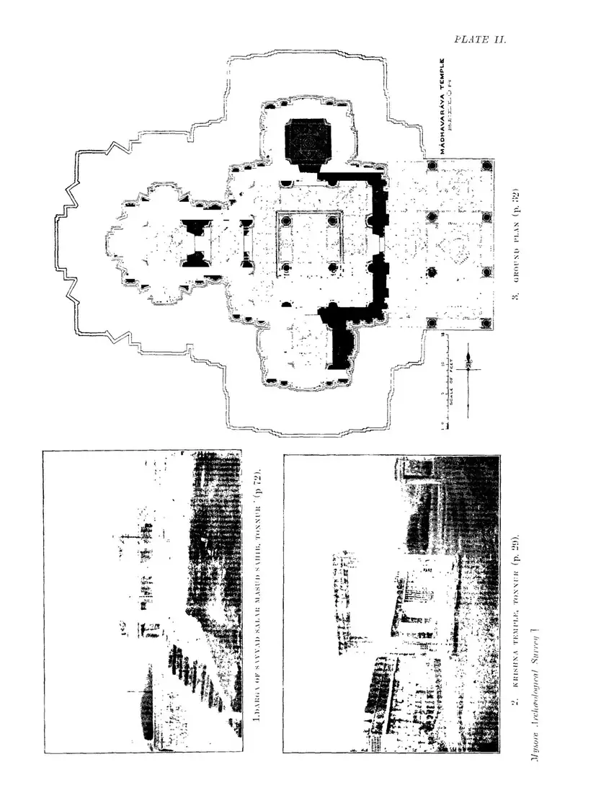
- DARGA OF SAYYAD SALAR MASUD S. AHIR, TONNUR ' (p. 72)
- KRISHNA TEMPLE, TONNUR (p. 29)
- GROUND PLAN (p. 32)
In this outer prākāra, close to the south wall, stands the shrine of Lakshmī which also shows evidence of two stages. The shrine itself and its navaraṅga are of finely dressed granite with niches, etc., elegantly carved. In front of the shrine is a long three-aisled manṭapa of octagonal pillars, one of which, as already stated, bears an inscription of Vishṇuvardhana's time.
In front of the mahādvāra is set up a tall garuṭdagamba of granite having a sixteen-fluted shaft.
Lakshmi shrine.
Garudagamba.
Darga of Sayyad Salar Masud Sahib
Situation; General Description
About a furlong south-west of Tonṇūr and close to the ridges stands on a small hillock the Darga of Sayyad Salar Masud Sahib (Pl. II, 1). It is built in the centre of a terrace approached from the east by a flight of steps, on the south side of which are two small tombs said to be of the relatives of Tippu Sultan. A couple of mahāsati stones are set up near its gates.
The Darga hall is exceedingly simple having a flat roof of plain slabs supported by four plain pillars. Around it runs a verandah, about 6½ feet broad, supported by sixteen-fluted and slightly tapering granite pillars with plainish brackets. Thus there are six pillars on each side. There is a beautiful dome over the central square of the hall. The dome has a bulbose shape and is almost hidden by a high parapet of brick and mortar with beautiful tracery work so white-washed as to be almost out of recognition. The parapet is entered by a little foliated arch and is broken up by a number of pillars, the corner ones being tall. The beauty of the design is further enhanced by four pillars which adorn the corners of the terrace. The western pair have now disappeared. Several of the pillars are Hindu. Some of these in the manṭapa bear figures of Hanumān, etc.
An urs is held every year (in the month of Rajjāb) which attracts large crowds even from as far as Mysore.
Narasimha Temple
To the north of the Nārāyaṇa temple on a small spur of the hills stands an old temple of Narasimha which bears a number of inscriptions suggesting its origin in the 12th century A. D.
Situation and History
General Description; Main Image; Scucco Rāmāṇuja
It appears to date from the days of Narasimha I Ballāla, though tradition connects it with Rāmānujāchārya. But there is nothing definite to show that it is really of such early date.
It is a small structure typical of the Hoysala-Draviđian school. It consists of a garbhagriha, a long vestibule with a pradakshina-
General description. prākāra, a navaranga of many pillars and a small porch in front (Pl. III, 1). It may be compared with the Gōpālakrīshna temple at Terakaṇāmbi, the Lakshunī-Nārāyaṇa temple at Rāghavāpura, etc. The pillars are all cylindrical and of granite. The outer wall of the main shrine has the usual deep cornices, pilasters and niches, the latter resembling those of the Krīshna temple at the place.
The image of Yōgā-Narasimha is a beautiful one showing the god in the attitude of Yōga with a jewelled band supporting his
Main image. cross knees (Pl. IV, 1). The god's mouth is open, showing his fangs. There is no prabhāvaļi or tōraṇa. The god sits on a padma pedestal.
The south-east corner of the navaranga has been converted into a kitchen and the north-east corner into a sanctum for a plaster relievo
Stucco Ramanuja. of Šrī Rāmānuja. The latter which is in very high relief shows the saint seated in padmāsana with his usual banner and with the seven-hooded Ādisēsha overspreading his head. The image is very lifelike and generally covered with a kāvi-cloth. The head is too small for the body and shows the saint as a thin, tall and comparatively young man with very large out-spread ears. It is possibly a later day piece which has been traditionally accepted as a contemporary image of Rāmānuja; for, it is said that the held disputesions with his Jain adversaries in the place. It is also customary to point to some stone oil presses belonging to the temples and some natural hollows in the rocks near the tank as the instruments by which the defeated Jains were pounded into pulp by the victorious Rāmānujāchārya and his newly converted pupil Vi-hṇuvardhana. It is strange that the followers of Rāmānujāchārya give currency to such a damaging and fictitious tradition about their great teacher.
The Tank
The tank Mōti Talāv, as Nazir Jung called it, is said to have been constructed at the orders of Rāmānujāchārya. Local tradition states that the original bund constructed in the days of the Hoysalas was reset and repaired in the days of Tippu Sultan. A close examination of the steps and the stones used for the bund supports this view, since the jambs, lintel stones and cornice pieces of many old temples have been used for the steps. One set of door-frame pieces near the Brīndāvana was found to have two fragmentary inscriptions of about the Chālukya or Hoysala times. And there are four sculptured pieces, two of which are well carved. One of them represents the story of the Gajēndra-mōksha and the other, the story of Sala fighting the tiger. The latter is either a piece brought from some
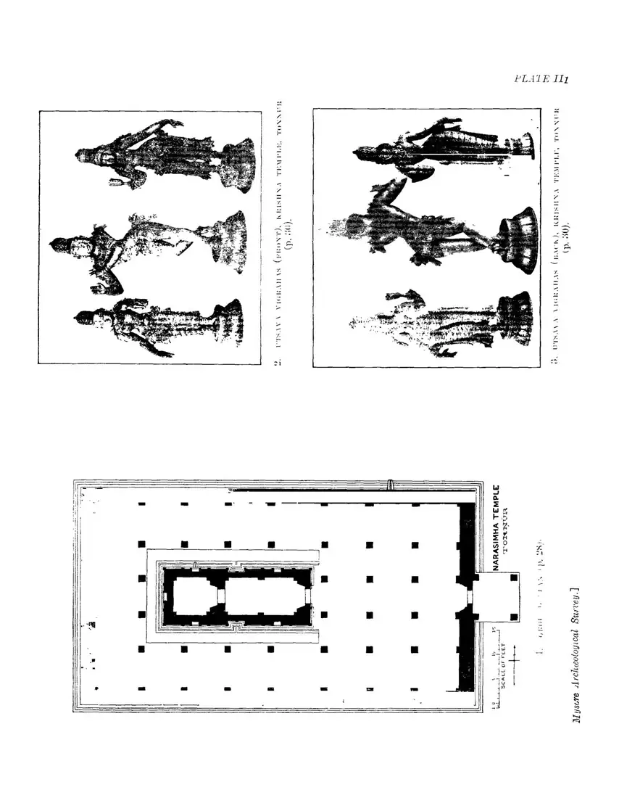
- GROOT BETTER (p. 28)
- UTSAYA VIGRAMAS (PRONT), KRISHNA TEMPLE, TONNER (p. 30)
- UTSAYA VIGRAMAS (BACH), KRISHNA TEMPLE, TONNER (p. 30)
dilapidated temple or an old structure commemorating the construction of the bund in the Hoysala days. The former appears to be more probable. Tippu who was himself a lover of tiger fights very probably got it set up prominently as a memorial of his reconstruction. It is said that he got the bund removed to its very bottom and discovered that there was a rocky ridge under it which helped to form a natural lake. The tank was perhaps a development of the lake. A water course flowing from the Yādavagiri or Mēlkōṭe hill, known as the Tāṭekere-halla or Hebballa takes its origin beyond the Mēlkōṭe hill at Nārāyaṇa Durgā, which is the chief feeder to the tank.
Krīshṇa Temple
History; Oldest Structure; Main Image; Later Additions to the Temple; Utsava Vigrahas
In the centre of the old town stands a large temple (Pl. II, 2) whose main deity is generally described as Kṛishṇa, Pārthasārathi, or Gōpīnātha. The inscriptions of the time of Narasimha I, Ballāla, mention the god as 'Vittirunda Perumāl.' The carliest inscription now found is of about 1158 A.D. in which Kūttāḍi Daṇḍanāyaka of Kāraiguḍi is said to have set up the god Vittirunda Perumāl with the goddesses Lakshmī and Bhūmī.
The structure appears to have been constructed in three stages. The garbhagriha, the vestibule and the raṅgamaṇṭapa in front of the latter with sixteen cylindrical pillars are of granite and appear to be the oldest. The outer walls of the garbhagriha and vestibule have the octagonal cornices, the square pilasters and niches comparable in some respects with those of the Raṅganātha temple at Seringapatam, Rāghavāpura and elsewhere. The cornices which have ornamental kīrtin:ukhas are surmounted by a row of sea-horses and the vimāna of large bricks is octagonal with its four niches projecting forward as in some Chōla structures in Tanjore and elsewhere. There is a suggestion of Chōla influence still lingering.
Inside the garbhagriha which has no doors, the doorway being wide open, there are three large images of stone. Vishṇu is seated in the centre in sukhāsana with his hands thus disposed: abhaya, chakra, śankha and resting on thigh palm downwards. He wears a crown but his face and that of his consort to his left are both peculiar, being short-nosed, rounding with large bulging forehead.
When all the metallic and cloth coverings were removed, the real nature of the image was noticed and an explanation was discovered for its large head, short limbs and short broad body. The artist was attempting to portray the image of Baby Kṛishṇa seated in state. The child wears a conical crown, a jewelled diadem, eardrops, necklets, a girdle with a padma in front, armlets, bracelets, anklets and rings on the fingers and toes. He holds in his right back hand a modestly carved chakra and in the left, a šankha. His left front hand is placed on his thigh, while his right front hand is in the abhaya pose. In the mouth there is an attempt at a smile. The baby has soft breasts and a slightly bulging belly. The sculptor has attempted to show Baby Kṛishṇa who is called in the inscriptions 'Vittirunda Perumā!'
The second stage of the structure appears to consist of the additional portions of the large navaraṅga hall having mostly sixteen-fluted pilasters, the porch in front of it with three sets of steps and the inner wall of the outer prākāra. These appear to have been constructed in the reign of Ballāla II, a little before 1175 A.D.
The last stage is the outer prākāra with the mahādvāra built perhaps a little before 1191 A.D., also in the days of Ballāla II.
An undated but definitely Hoysala building is the vāhana manṭapa in the north-east corner of the outer prākāra. It is also of about the same time as the third instalment.
There stand three objects of interest to the east outside :—
(1) A vasanta manṭapa of four cylindrical pillars.
(2) A māstikal—not the representation of plough and umbrella.
(3) A beautiful large door-frame of granite stone, about 18 feet high. For its huge size it is finely carved.
The metal images of the Kṛishṇa temple are really fine ones, particularly those of Kṛishṇa and Rukmiṇi, Satyabhānā being from a different hand (Pl. III, 2 and 3). Both the former figures are beautifully poised in tribhaṅga with smiling faces and finely shaped bodies. Kṛishṇa stands on the left leg with the right one crossed behind and just touching the ground with his toes. The fingers of his hands are shown as in the act of playing on the flute which is itself not present. The dress and ornamentation are also superb and very tasteful. The images may come from the early or middle Vijayanagar period at the latest. They are evidences to prove that the art of sculpture did not decay under Vijayanagar but transferred its attention to metal work.
Utsava vigrahas.
Part III: Study of Ancient Monuments and Sites › Mysore DistrictNāgamaṅgala
Palace Site
The site of the Palace which seems to have faced north extends between the temples of Saumyakēśava and Narasimha. The closed up doorway on the west wall of the prākāra of the Saumyakēśava temple gave the inmates of the palace access to the temple.
Narasimha Temple
History; General Description; Images
The Narasimha temple is about a hundred yards directly to the west of Saunyakēšava temple. Popular tradition states that it
History. is older than the latter structure. If this should be true, the inner temple will have to be assigned to the late Chōļa times, which, however, is doubtful.
The temple appears to belong to the late Hoysaļa period, though it is not of great architectural importance. Most of its pillars are octagonal. The inner shrine has a pradakshiņa. The innermost portion which has a number of cylindrical granite pillars is Hoysaļa and perhaps belongs to the middle of the 13th century.
The temple has a garbhagrīha, a vestibule, an inner navaraņga, an outer navaraņga, a mukhamaņtapa, a large pātālānkaņa as at
General description. Melkōte, and a prākāra with a veranlah inside. The mahādvāra has no gōpura.
The image of Yogā-Narasimha which has no stone prabhāvaļi is good but plainly worked. The image of Vishvaksēna in the navaraņga is
Images. of a poor class of Hoysaļa workmanship with gadā in the right hand and the fore-finger of the right hand raised.
In front of the image of the spiral Nāga is an opening in the floor which is pointed out as the hole of an ancient cobra which is said to have given its name to the place.
Bhuvancēśvara Temple
History; General Description; Images; Liñga and Utsava-mūrti; Later Structures; Pillar
The original structure of the Bhuvanēšvara temple is of pot-stone and of the time of Vishņuvardhana Hoysaļa. To the south-west of
History. the temple stands the inscription (E. C. IV, Nāga-mangala 3) of the time of Bammaladēvī (1135 A.D.)
Later extensions to the temple have been made on the north, east and south and are clearly distinguishable from the earlier structure by their uniform use of granite.
The basement of the original structure has two cornices, of which the upper one has dentil mouldings. The outer wall has tall thin
General description. and right angled pilasters with large rosettes or padmas between some of them. The eaves are straight-sided with upward dentil projections.
The main doorway on the south, which is of pot-stone, is of the original structure, while the granite doorway on the east, which is quite plain, is of a later period. Thus the original navaraņga appears to have had but one doorway only.
Inside the navaraņga there are the cylindrical pillars which may well be attributed to the time of Vishņuvardhana. They have square base and wheel- and lotus-shaped mouldings characteristic of the period. The central eeiling, which is somewhat deep, has a lotus pendant.
The following images are found in the navaraṅga :—
1. Durgā.
Images.
2. Nārāyaṇa, having a kirīṭa of the Chōlā type and a prayōga-chakra as found at Banavāsi and elsewhere.
The workmanship is, however, poor; and we can notice the Dravidian influence on the image.
3. A small Chandikēśa.
4. Sūrya.
5. Ardhanārīśvara, with a deer in the left upper hand, which looks like a horse having a bushy tail.
6. Gaṇēśa.
7. Nandi.
8. Durgā, with the flames darting forth from the head.
9. Shaṇmukha.
10. Mahishāsuramardhinī.
11. Two lingas.
The doorway of the vestibule is plain. Inside the garbhagriha is the linga mentioned as Śankara-Nārāyaṇa in the inscription referred to above. The utsavamūrti has the form of Sadāśiva. It has the image of Pārvatī on the left, and standing Gaṇēśa on the right. All the three are independent metallic images.
The navaraṅga has a cell on the north which is undoubtedly the structure of a later period. There is nothing extraordinary about the shuine of the goddess whose image appears to belong to the 19th century. The tower of brick and mortar is modern.
Later structures.
In front of the east doorway is a granite pillar, about 18 feet high, which has a cubical base, an octagonal shaft with wheel-shaped moulding and a square abacus.
Pillar.
Part III: Study of Ancient Monuments and Sites › Mysore DistrictBellūr
Mādhavarāya Temple
History; Outer View of original Temple; Porch; Navaraṅga; South Cell; North Cell; Main Cell; Mādhava
(Pl. IV, 3).
The Mādhavarāya temple appears to have been the main structure of the original agrahāra of Bellūr and to have been built in about 1284 A.D., i.e. , during the time of Vira Narasimha as mentioned by two of the three large Hoysalā inscriptions in the porch. The temple may be studied in two stages, viz. , the original Hoysalā temple and the subsequent additions of the Vijayanagar period.
History.
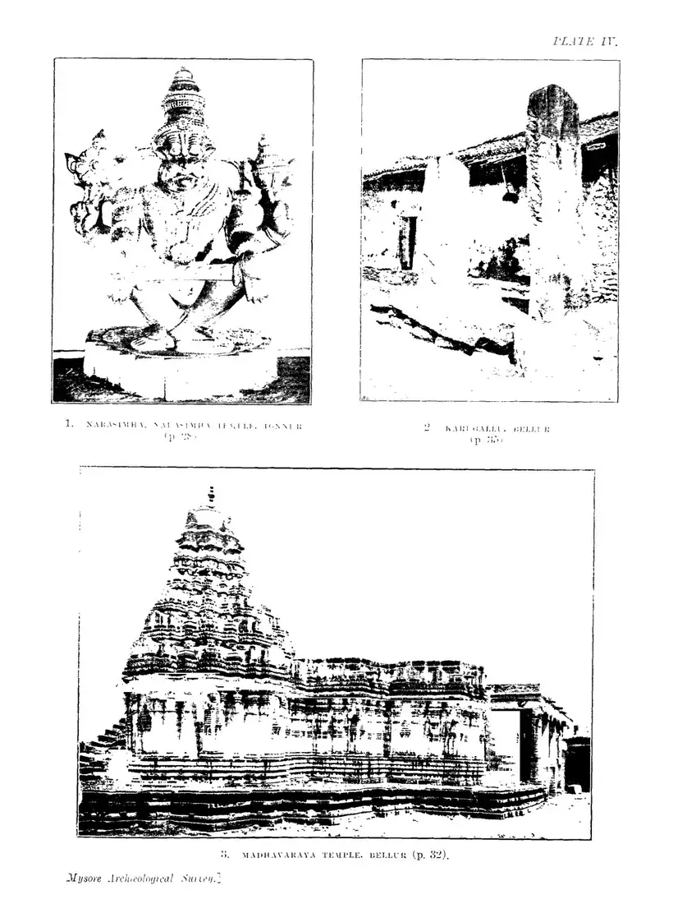
- KARASIMHA, NAJASIMHA TEMPLE, IGNUR (p. 28)
- KARIGALLU, BELLUR (p. 35)
- MADHAVARAYA TEMPLE, BELLUR (p. 32)
The original Hoysaļa temple is a trikūtāchala of soapstone, with a garbhagriha, a vestibule, a square navaranga, and a porch of six squares which is rather peculiar. The temple is reared on a platform with an open pradakshinā which follows the contour of the original temple. The latter has a starshaped main cell with flattened south, west and north sides. The basement has five cornices, three of which have dentil ornamentations, the others being plain. The walls bear no figures but have ornamental pilasters and variously shaped towers borne on single or double pilasters.
The main cell only has a stone tower with four series of turrets of stone. Otherwise the tower is plain and its eastern projection has no Saļa group.
The original porch of the main temple is a large structure of soapstone with round bell-shaped pillars and the original cornice intact.
Porch. To its north and south have now been constructed rooms of brick and mortar for housing the images of Gōpāla and Lakshmī-Nārāyaṇa brought from the Mūle-Singēśvara temple. The Gōpāla image, particularly, is extraordinarily a beautiful image with its body in full tribhanga, its head bent to left and its tamāla tōraṇa showing detailed carving with monkeys, etc. The Lakshmī-Nārāyaṇa group, though also definitely Hoysaļa, is not of such high class workmanship. Perhaps it is a Pañchāyatana image. Its chakra is broken.
The navaranga is square with four bell-shaped pilasters and nine domed ceilings mostly of the simple lotus shape. At the back of the navaranga are the images of Gaṇapati and Mahishāsuramardinī, both of which are thickly coated with wax.
In the south cell is a standing image of Vēnugōpāla, about 5' high, the most interesting features of which are the slim boyish body and face.
South cell.
In the north cell stands a very fine image of Janārdana, known locally as Varadarāja. If cleaned of its wax it would show great beauty of face and design. Behind it is the serpentine tōraṇa with the ten avatārs. At the foot of the image are seated the stone images of a later period, viz. , Nammāļvār with chinnudrā, Rāmānujāchārya with daṇda and Jīyar with folded hands.
The main cell is entered by a vestibule having a domed ceiling. The space inside is taken up by a finely towered wooden shrine for housing the metal images. The ceiling of the garbhagriha has a simple lotus dome.
Main cell.
The main image of Mādhavarāya, which is about 5' high excluding the pedestal, holds gadā, chakra, śankha and padma. On the prabhāvali are carved the figures of his consorts and the ten avatārs. Though the image is definitely Hoysaļa, it is rather flattish.
Madhava.
5
Gangā-Viśvēśvara Temple
The Gangā Viśvēšvara temple is a new shrine built just to the north of the Gaurēšvara temple. Evidently it was constructed in Šaka 1591 corresponding to A.D. 1669, by Nañjappa, son of Hariyappa Hebbār of Beļļūr.
In the temple are preserved three beautiful Hoysaļa images belonging to the
Mūle-Singēšvara temple:—
Hoysaļa Images
1. Ganēša or Vidyā-Gaṇapati—a finely carved image.
2. Bhairava of beautiful workmanship with cobras, etc., round his head, and Kinnaras and dancing goblins lifting up a dog to drink the blood dripping from a severed head in the god's left hand.
3. A fine soapstone Nandi placed in the verandah.
Gaurēśvara Temple
History; General Description
About a hundred yards to the north-east of the Mādhavarāya temple stands
History. the temple of Gaurēšvara which is the oldest structure in the place.
It is a small soapstone structure with its main doorway to the south.
General description. It is entered by a small porch having cylindrical pillars of granite.
Inside the navaranga are placed small Hoysaļa images of Ganēša and Virabhadra and an old Nandi. The doorway of the vestibule is supported by screens with cruciformed perforations. The garbhagriha has a medium-sized and round-headed linga which is not now worshipped. There is a large inscription slab of Vira Ballāļa inside the south-east of the navaranga.
The outer walls of the temple are broken by ornamental pilasters. The stepped pyramid tower has on the eastern projection a fine undamaged group of Saļa and the lion, covered over by lichens.
Mūle-Siṅgēśvara Temple
General Description; Vimalanātha Basti; Virabhadra Temple; Kallēśvara Temple; Veñkaṭēśa Temple; Karugallu
The Mūle-Singēšvara temple stands to further north-east of the Gangā-Viśvēšvara temple. It is an original Hoysaļa temple of
General description. soapstone with three stepped pyramid towers over three cells enshrining originally Vēnugōpāla, Šiva-linga and Lakshmī-Nārāyaṇa. On either side of each vestibule doorway are perforated screens. The navaranga has four ornate bell-shaped pillars and nine ceilings each of which is differently designed. A small porch borne on twenty-four fluted pillars stands to the east with three large inscription slabs of the Hoysaļa period to the south.
VIMALANĀTHA BASTI.
Inside the town and close to the east gate stands a granite structure constructed in 1680 A.D. It enshrines an image of Vimalanātha, the thirteenth Tīrthankara.
The mukhamanṭapa has a stone inscription of the time of Dođđadēvarāja Vađeyar. The navaraṅga doorway has been provided with an ornamental metal covering bearing an inscription of 1680 A.D.
The basti is not of historical or architectural importance. The place has about 50 houses of a prosperous Jaina community, mostly living by trade.
VĒRABHADRA TEMPLE.
The small Hoysaļa temple of VĒrabhadra in the town is recently repaired. In front of the structure stands a soapstone pillar with a worn inscription on its east and north faces. Inside the garbhagrīha there is an image of VĒrabhadra, about 3' high, holding sword, arrow, strung bow and oblong shield with Daksha-brahma to right and Durgā with sword and shield in her hands to left. There is nothing more remarkable about this temple.
KALLĒŠVARA TEMPLE.
About a mile to the south-east of Beļļūr and close to the Nāgamaṅgala road stands the dilapidated temple of Kallēšvara. It has a garbhagrīha, a vestibule and a long navaraṅga with rough hewn octagonal pillars. A Gapēša, a Nandi and a much damaged image of Shaņmukha are kept in the hall. In the cell there is a natural linga of medium size. In front of the temple stands a tall slanting pillar without capital. The brick tower has almost disappeared.
To the north of the temple is the smaller shrine of Dēvī enshrining a mutilated image of standing Pārvatī holding abhaya, pāša, goad and dāna. The breast band and folded sari indicate that the image belongs to the 14th century A. D.
A viragal and a mahāsati stone lie in front of the temple.
VENKAĒĒŠA TEMPLE.
In the south-west corner of the fort stands a small building with a navaraṅga and a disappeared garbhagrīha. The stone doorway of the latter is yet supported by the dvārapālas. Though the structure is called the Venkatēša temple, it is used as a store house for the things of the Mahadēvēšvara temple. The dīpastambha has a Vađagalai Šrīvaishņava caste mark supported by šankha and chakra and followed by a Kannađa inscription of 12 lines of 1519 A.D.
KĀRUGALLU.
(Pl. IV, 2).
About a hundred yards to the east of the Mādhavarāya temple stands the Kārugallu of the village consisting of two large slabs of soapstone standing erect on a platform with a small square stone set upright in the middle. On Jyeshtha šuddha Paurṇami a festival is observed here, which is called the Kāru festival. A pavilion is erected on that day and the Patel and Shanbhogue are expected to have ceremonial head shave. After this Brahmadēva is installed here by the village astrologer and worshipped. Prasāda is distributed to the assembled people. The festival appears to be connected with the raising of the new harvest and the installation of the village officers. The village cattle are taken round the stone which is said to have curing powers.
Chunchangiri
The hill at Chunchangiri has in recent times become a noteworthy place of pilgrimage. Quite a large gathering collects during the jātra season from various parts of the State. The following are the points of interest that we come across as we climb up the hill :—
1. First tōraṇa with rudrāksha and floral ornamentation on the jambs and lintel. The latter has Gaja-Lakshmī on its front face and several interesting sculptures on the other side also, among which are the figures of some yōgis practising yōga.
2. A flight of about 60 steps carved on a single rock leads to a mahādvāra whose lintel has a seated figure of Śiva flanked, like Gaja-Lakshmī, by elephants. In front of the mahādvāra is a manṭapa built over a pair of feet carved on a boulder. A brick and mortar bull surmounts the manṭapa.
3. Three tōraṇas lead to several manṭapas built for the use of the pilgrims. There is also an uyyāle-mantapa nearby.
4. Another tōraṇa leads to the area of the maṭha where there is a Bhairava shrine which appears to be a construction of about the 18th century. In front of the shrine there is the standing figure of a female deity. To the south are about a dozen shrines, each enshrining a pair of feet evidently referring to departed gurus .
5. Gateway and manṭapas of the Nāgachāvaḍi. About 60 yards to the south is a Kalyāṇi pond called Bindusarōvara.
6. Inscription No. Nāgamaṅgala 64, Epigraphia Carnatica , Vol. IV. A standing figure of Āṇjanēya is carved on the rock, in front of a triśūla set upright. To the right of the latter is a kalaśa with a trident set in it, also upright, and flanked by the sun and crescent. Here is a Nāgari inscription of two lines.
7. On the rock called Basavaṇṇana-guṇḍu there is a six-line Kannaḍa inscription. The bull on the rock is rudely carved and resembles the Penugoṇḍa bull. An open manṭapa enshrines the bull and there is a pillar in front.
8. About 50 yards further up is situated the Gangādharēśvara temple with a inukhamantapa of the Pāllegār period, having in its central ankaṇa pillars with
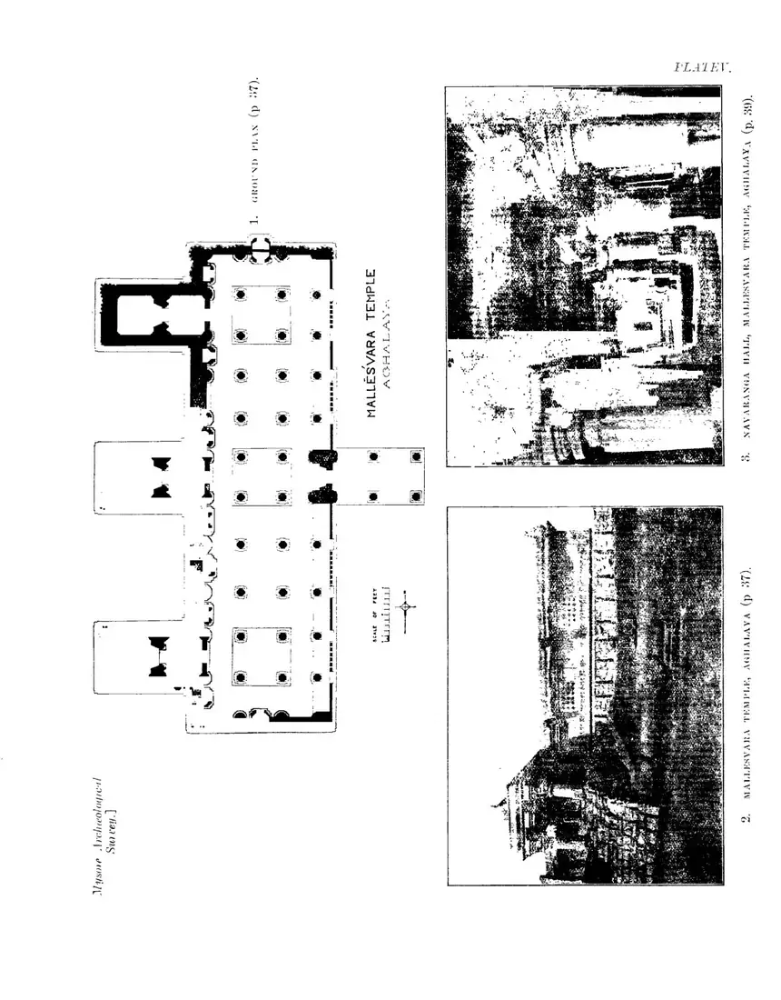
- GROUND PLAN (p 37)
- MALLESVARA TEMPLE, AGHALAYA. (p 37) PLATE
- NAVARANGA BALL, MALLESVARA TEMPLE, AGHALAYA (p. 39)
bracket figures as in Lepākshi, though the sculptures are ruder here. Two of the bracket images are shown as Mudugere-gauđa and Balāvalļi-gauđa. Two pillars have rearing lions on elephants and two more are composite.
In the main cell facing east there is an udbhava linga of rude stone. Opposite to this cell and on its left side are three more cells which also contain lingas called Mallēšvara, Chandramaulišvara and Sōmēšvara. These with Gaņgādharēšvara and Gavi-Siddhēšvara further up in a cave, form the Pañchalingas on the Chunchangiri hill.
9. The way leading up to the Gavi-Siddhēšvara cave temple is on rocks with no steps. The temple is a natural cave half way up the hill. It is semi-circular in shape, about 20' long, 15' broad and 4' high. It faces west, enshrining a linga. In front of it is a rudely-shaped damaged small Nandi said to have the power of granting the boon of children. The west face of the cave has now been walled up and makes a comfortable abode for hermits. There is water supply close by on the south, called Haļe-Gajāgunđa.
10. On the top of the hill there is another cave temple dedicated to Sōmēšvara. This cave faces north. Since there are no steps to reach it, one has to walk on rocks to visit the temple.
11. On the south end of the top rock there is the Chēļūru-Kamba.
12. On the north end is the Gaļige-Kallu with another pillar on the peak.
13. Further to the south and on the slopes of the hill there is the Sappe-svāmi maṭha.
14. To the north is Kaņive-Hanumantarāya carved on rocks.
Part III: Study of Ancient Monuments and Sites › Mysore DistrictAghalaya
Aghalaya is a village about five miles south-east of Šravaņa Beļgoļa and five miles west of Santebāchalļi to which hobļi it belongs.
Lakshmīnārāyaṇa Temple
The Lakshmīnārāyaņa temple in the village is a 17th century structure, rchitecturally unimportant. It has been for the most part rebuilt. The vestibule doorway is of potstone and ordinary. The granite pillars in the navaranga are square and rude.
Mallēśvara Temple
General Description; Outer wall; Sculptures; Porch; Navaraṅga; The cells
The Mallēšvara temple is a Hoysaļa structure of soapstone belonging to about 1260 A.D. and resembling in many respects the temple at
General description. Gōvindanahalļi near Kikkēri. It is a trikūṭachala (Pl. V, 1) without the towers. But its three cells are placed parallel to each other. Each cell has a closed vestibule. There is a common navaranga about 100 feet long and 25 feet broad. In the centre of the east wall there is only one doorway which leads out into a porch, two ankaņas deep and having four pillars (Pl. V, 2).
The temple now stands on a high platform which appears to be quite modern.
The outer wall which has only two plain cornices below has plain pilasters in the upper part of the wall cutting it up into five parts in the north and five in the south. Two of these parts on either side are perforated with indented square pattern perforations.
Outer wall.
The lower part of the upper wall bears sculptures in relief which, though not of high quality, are interesting. From the east door to the south there are only a few standing under canopies.
Sculptures. They are Matsya, Kūrma and Varāha. The face of the last is broken. Each is supported by a Garuđa.
The sculptures are more continuous from the east door northwards. They are in order :—
(1) Kalki on horse-back holding sword and shield.
(2) Buddha as a sanyāsi seated in yōgāsana with chinmudrā.
(3) Balarāma.
(4) Lakshmī dancing with kalaśa to left and elephant to right, having six hands (rosary, chakra, padma, pāśa, śaṅkha and fruit).
(5) Śrī Rāma holding bow and arrow.
(6) Paraśurāma holding axe and fruit.
(7) Vishṇu standing—not fully carved—two sets.
(8) Kṛishṇa and Satyabhāmā on Garuđa.
(9) Vishṇu standing—three sets—not clear.
(10) Indra and Śachī on elephant (Pārijātāpaharaṇa).
(11) Vishṇu standing—four sets.
(12) Ugranarasimha.
(13) Vishṇu standing—three sets.
(14) Viṭhala standing—supported by consorts. In the field above, conch and discus.
(15) Vishṇu standing.
North wall—corner—
(16) Vishṇu standing—two sets.
(17) North niche—empty.
North wall—continued—
(18) Pārvatī dancing (rosary, goad, svargahasta, phala).
(19) Bhairava standing with Bhairavī.
The upper wall appears to have been originally decorated throughout with large indented square pilasters and smaller ones bearing interestingly shaped towers and canopies. A good part of this outer wall on the south has now disappeared and is being substituted by a roughly built size stone structure. The back walls of the
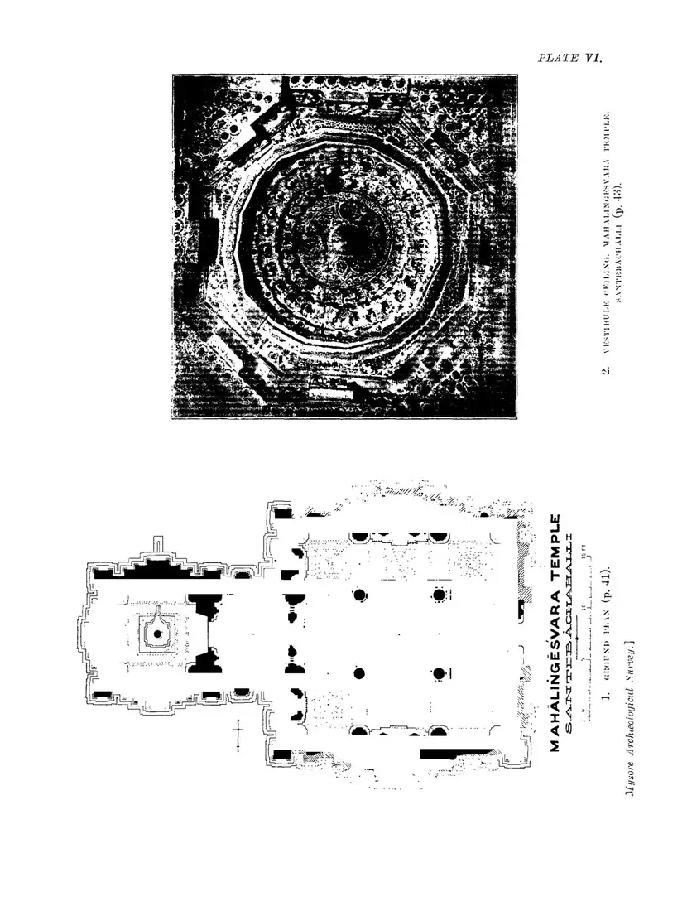
- GROUND PLAN (p. 41)
- VESTIBULE CEILING. MAHÁLINGÉSVARA TEMPLE SANTEBACHALLJ (p. 43)
garbhānċaṇas are also well preserved along with the old parapet in a few places. Originally the garbhānċaṇas stood out well separated from each other but more recently the bays have been filled in by earth and supported by a rubble wall which gives the building an oblong contour.
The pillars of the porch are necked cylindrical ones of potstone. Each of the two ceilings is comparatively plain except for the padma dome and rosettes on the corner stones.
The navaraṅga doorway is also plain, the jambs evidently having lost their dvārapālas. The navaraṅga hall which has potstone benches against the east wall is supported by thirty pillars of the necked cylindrical potstone variety (Pl. V, 3). The hall is divided into three parts each of which has a platform, about six inches high, facing the cell and bearing a Nandi image. The three central ceilings are similar to those in the porch.
Against the west wall of the navaraṅga are constructed seven towered niches. Two more are found against the north and south walls. Each of these niches has an image and there are more images placed around the navaraṅga. They may be thus identified starting from the south-east and running clockwise :—
(1) Intertwining nāgas.
(2) Sūrya with seven horses on the pedestal (Hoysaļa image).
(3) Hooded cobra.
(4) Saptamātrikā panel with Vīrabhadra (Hoysaļa work).
West wall—
(5) Gaṇēśa.
(6) Mahishāsuramardinī standing.
(7) Umāmahēśvara in sukhāsana—good group but covered by muck.
(8) Gaṇēśa.
(9) Mahishāsuramardinī.
(10) Gaṇēśa.
(11) Mahishāsuramardinī.
North wall—
(12) Sūrya with seven-hooded serpent over his head.
(13) Shaṇmukha on peacock—the latter's head is broken.
(14) Kēśava—right padma hand broken.
North-east corner—
(15) Gaṇēśa.
(16) Gaṇēśa.
The three cells are very similar to each other. Their vestibule and navaraṅga doorways have dvārapālas. The lintels of the vestibules have Umāmahēśvaras. On the architrave are :
The cells.
South cell—Pārvatī seated.
Middle cell—Dancing group.
Last cell—Pārvatī seated.
The vestibules have shallow padma domes. The garbhagriha doorways have Gajalakshmī on the lintels and Tāṇdavēsvara on the architraves. The garbhagrihas have under the shallow padma domes, round-headed medium-sized black lingas the names of which cannot now be identified since the inscription dedicating the temple is not forthcoming.
Part III: Study of Ancient Monuments and Sites › Mysore DistrictMalagūr
Mallēšvara Temple
General Description
The Mallēsvara temple is to the north of the village. It has a garbhagriha, a vestibule and a navaranga. The outside walls have their right-angled pilasters. Among the cornices of the basement one is octagonal. The tower and the navaranga are in ruins. The stone tower appears to have been a stepped pyramid originally. In the navaranga there are cylindrical necked pillars and a shallow padma-domed ceiling. The vestibule is open. The linga in the garbhagriha is conical-headed.
Harihara Temple
History; General Description; The Virabhadra Temple; Kallēšvara Temple
The Harihara temple is to the south of the Mallēsvara temple described above. It belongs to the 12th century A.D. according to a Kannaḍa inscription of four lines on the Garuḍa-Nandi pedestal of the Harihara image, which mentions Vishṇuvardhana, his queen Śāntale and the mahāmaṇḍalēsvara Baleyanāyaka who is said to have been the brother-in-law of Queen Śāntale. Baleya set up the image.
The temple is very plain, having two octagonal pillars in the navaranga, perforated screens on the jambs of the vestibule doorway with transverse rhomboidal perforations and a good image of Harihara, about 5 feet high. The image stands on a pedestal containing Nandi in the south-east and Garuḍa in the east. The god is fully ornamented and holds rosary, trident, chakra and śānkha with a sarpakuṇḍala in the right ear and a makarakuṇḍala in the left ear. His tōraṇa is serpentine with a simhalalāṭa. On either side of the god stands a consort. The nose of the main image is broken as also the right hand of the goddess on the left.
On the frieze of the tōraṇa of the image are the Ēkādaśa Rudras on the right and the ten avatāras of Vishṇu on the left.
There is a stone oil mill to the south-east of the temple.
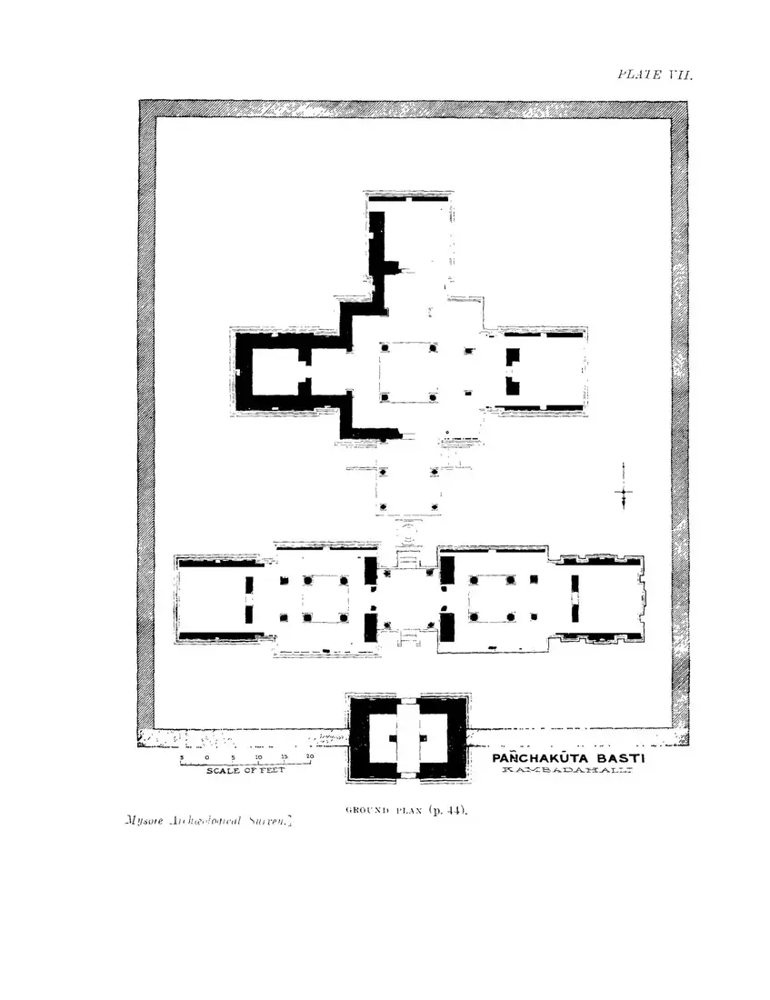
- GROUND PLAN (p. 44)
Cited in the text: p. 44 ↩
THE VĒRABHADRA TEMPLE.
A little to the north of the two temples above described, stands the Vīrabhadra temple which is a structure of the Pāllēgār period. It is of no importance. In the navaranga are rude figures of Vīrabhadra, Gaṇapati and Nandi. In the garbhagrīha is the image of Vīrabhadra, about 4½ feet high including the pedestal.
KALLĒŠVARA TEMPLE.
The Kallēšvara temple which stands about fifty yards to the south-east of the Vīrabhadra temple is characterless, though it is perhaps as old as the inscription No. Krīshṇarājpet 68 standing to its south. There are no sculptures on the walls. The temple is mostly built of granite in the front ankaṇa and not important. The old structure was originally of one ankaṇa only and of potstone. The garbhagrīha enshrines a linga and in the mukhamaṇtapa a Nandi is kept. Against the outside north wall of the temple is kept a Hoysala Gaṇēša image of potstone.
Part III: Study of Ancient Monuments and Sites › Mysore DistrictŠantebāchalļi
Mahaliņgēšvara Temple
General Description; Outer View
Santebāchalli is a large village about fourteen miles north-west of Krīshṇarājapeṭ. It has five temples, the oldest of which is that of
General description. Mahalingēšvara to the north of the village and close to the tank bund. It is now in a very dilapidated condition.
When intact it must have been a rather artistic temple built in the Hoysala period. It has a garbhagrīha, a vestibule and a navaranga with no porch (Pl. VI, 1). The outer walls of the navaranga have now disappeared, having collapsed. But the walls of the vestibule and the garbhagrīha are intact and show very good workmanship.
The basement has five cornices, of which only one has been finished. On the other cornices Tāṇdavēšvara and other images are partly
Outer view. The sōmasūtra has a well carved lion face with the water pouring on the head of a crowned person seated in padmāsana and supported by chauri bearers. The upper part of the wall is ornamented with plain pilasters. The soapstone tower which has three rows of carved turrets has well worked kīrtimukhas and figure panels among which may be noticed the following:—
South. —Ugranarasimha.
Vēṇugōpāla.
Bhīma fighting elephant.
Tripuradahana, etc.
6
West. —Tāṇdavēśvara.
Umāmahēśvara.
Saļa killing lion.
Mōhinī and monkey, etc.
North. —Monkeys sporting
Bhairava.
Kālabhairava, etc.
The temple originally must have had a porch of one ankaṇa with a ceiling of concentric circles rising over an octagon. Some of these stones are lying about. The navaranga doorway (5' × 2') is yet standing.
The navaranga is a finely worked hall about 20' × 20' with indented square pilasters and fine lathe-turned and bell-shaped pillars with well finished scroll, floral and horse-shoe bands and beaded hangings.
Navaraņga
Aļjanēya Temple; Nārāyaņa Temple; Virabhadra Temple
The navaranga ceilings, at least those that are now standing, are all deep domes of the following description :—
East. —Circular gallery and concentric circle.
South-east. —Disappeared.
South. —Disappeared.
South-west. —Arched śrīchakra gallery with similar concentric śrīchakras above.
West. —Square gallery and concentric squares.
North. —Octagonal gallery with concentric octagons.
North-east. —Eight-pointed starred gallery with similar concentric stars.
Central. —Octagonal gallery with concentric octagons.
Many of the pendant luds have now disappeared.
Set inside the walls of the navaranga are four niches which contained beautifully carved images, each about 2½ feet high. Only three of them are now remaining in a mutilated condition.
South. —Standing Brahma with the nose and hands broken. Only the central face is bearded. A fine figure.
Second niche—Blank.
Third niche—Blank—but near it is a much mutilated Umāmahēśvara group, with the body of the goddess broken.
Fourth niche—Vishnu standing; well carved, but all the hands are broken.
The towers of these niches are many-storeyed, though carved in relievo.
The vestibule doorway which is supported by Śaiva dvārapālas and dancing ladies has perforated jambs with the indented square perforations correctly and elegantly carved. The lintel and architrave are blank. It is said that in the navaranga there was a fine large bull, about six feet in length, which is said to have been taken away to Bangalore.
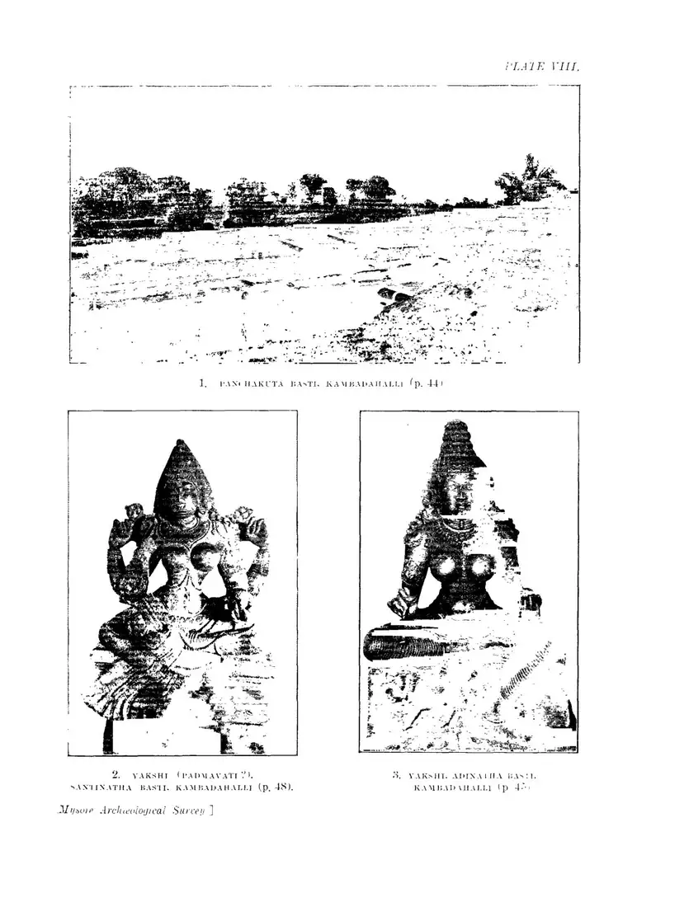
- PANOHAKUTA BASTI. KAMBADAHALLI (p. 44)
- YAKSHI (PADMAVATI ?) SANTINATHA BASTI. KAMBADAHALLI (p. 48)
- YAKSHI. ADINATHA BASTI KAMBADAHALLI (p. 45)
The vestibule has a very well carved ceiling with the eight Dikpālas on the corner stones, and an octagonal gallery having Šiva and Gaņēša dancing with Kumāra and the Ādityas looking on. There are three sets of three concentric arches above with a scroll circle having dancing Yakshas (Pl. VI, 2).
The garbhagriha doorway which has dvārapālas on the jambs and Gajalakshmi on the lintel has five variedly shaped turrets on the architrave.
The garbhagriha ceiling is well carved with lion faces on the corner stones and a lotus in the dome. The linga is dark and medium sized.
AŃJANĒYA TEMPLE.
The Āñjanēya temple is a very plain structure of the Vijayanagar period with a large slab having a Vīrāñjanēya image carved on it in relievo. It is archæologically unimportant.
A large number of vīragals and māstikals are lying near Māstamma's temple. None of them bears an inscription.
NĀRĀYAŃA TEMPLE.
The Nārāyaṇa temple is a plain structure of the late Hoysaļa period with four neckless granite pillars, shallow padma ceilings, no pradakshiṇa and a Nārāyaṇa image, about seven feet high, of the late Hoysaļa period. It has the ten avatāras on its rather poorly worked prabhāvaļi. The image is supported by consorts and holds śankha, padma, gadā and chakra.
VĪRABHADRA TEMPLE.
The Vīrabhadra temple is situated in the centre of the village. It is a structure of an ordinary type and belongs to the Vijayanagar period. It contains a garbhagriha with a small Vīrabhadra image, about 2½ feet high, and a seated Kāļi image, a vestibule with a small Nandi, its doorway having dvārapālas, a navaranga with four cubical pillars having sixteen-fluted shafts, and with a shallow padma dome, and a mukhamaṇtapa, now walled up, of fifteen ankaṇas with similar cubical pillars. Only the two front pillars of the mukhamaṇtapa have low bas-relief sculptures like wheeling acrobats, Gaņēša resting in palanquin, Purushamṛiga worshipping linga, swan, yāli slaying lion and two lions rearing backwards. The tower over the garbhagriha is of brick and mortar. The temple is not of much architectural importance. The inscription, Krīshṇarājpet 65, is standing to the left of the main entrance.
Part III: Study of Ancient Monuments and Sites › Mysore DistrictKambadahalļi
Situation
Kambadahalli is an ancient village about a mile to the south of Binđiganavale, a hobli town in the north-west of Nāgamangala taluk.
Situation. Its name is derived from the lofty Jaina pillar that stands near its north-west corner. In the earliest inscriptions it is described as a part of Binđiganavale which name must thus be earlier.
Pañchakūṭa Basti
History; Ādinātha Basti; External Features
(Pl. VII.)
This small village has on its west a group of seven shrines close to the Jaina pillar. These are perhaps some of the oldest Jain monuments of importance in the State (Pl. VIII, 1).
History.
They appear to have been constructed in at least three stages and to have undergone repairs several times. Yet they maintain an architectural character which is easily distinguishable, being made almost completely of granite.
The earliest structure appears to be a cross-shaped trikūtāchala with straight sides having three garbhagrīhas with open vestibules and a common navaraṅga with a porch of two ankāṇas, the whole group facing north. We shall call it the Ādinātha Basti.
Adinatha basti.
The chief external features of the Ādinātha Basti are : the well dressed octagonal cornice of the basement; the right-angled pilasters with beaded hangings, mermen or Yakṣhas or Jinas occasionally and loaf-shaped top mouldings and deep ribbed brackets with vertical floral bands on the walls; and niches surmounted by a floral or makara tōraṇa with flying Gandharvas or ridden yālis occasionally, mukkođes, or makaras ridden by Yakshas. Some of these niches have yet the originally installed Jaina images. All the 24 Tirthankaras seem to have occupied these niches. Under the cornice is a row of swans in various attitudes. The eaves are sharply curved and ornamented with horse-shoe-shaped arches with floral śikharas and corners and a line of medallions. The parapet has a frieze of sea-horses or lion-faced fish. The three towers are all of granite. The first tier is made up of turrets having boat-shaped śikharas on each side and square-shaped śikharas in the corners. The second tier is made up again of a frieze of swans, a sharp cornice with horse-shoe arches and a row of lion-fish above which are placed in the corners regarding maned lions with one uplifted fore-paw reminding us of the Pallava lion. The towers (Pl. IX, 1, 2 and 3) are variedly shaped, the east one being round, the north one square and the west one octagonal. Each of these has on each side a floral base having on each side a horse-shoe arch. Each of these again is bulbose. It is noteworthy that the bulbose dome of the east tower (Pl. IX, 1) anticipates that of the Taj by at least seven centuries. Each of these śikharas rises on a grīva or neck which is well-shaped and is ornamented
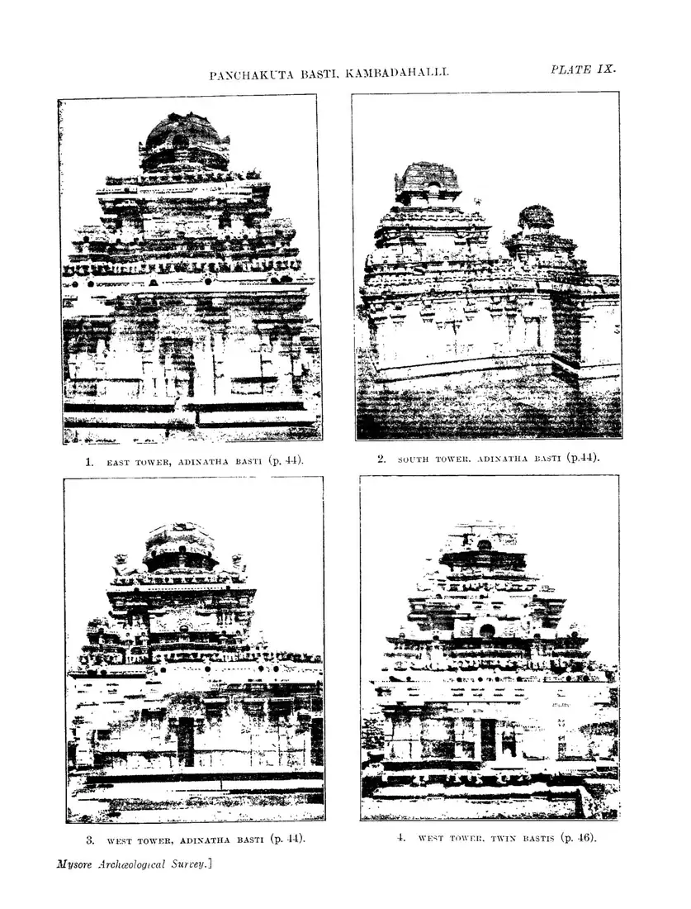
- EAST TOWER, ADINATHA BASTI (p. 44)
- SOUTH TOWER. ADINATHA BASTI (p. 44)
- WEST TOWER, ADINATHA BASTI (p. 44)
- WEST TOWER. TWIN BASTIS (p. 46)
with pilasters. On the top of the śikhara there is a padma placed upside down, but in each case there is no kalaśa. These towers remind us of the Chāmuṇdarāya Basti of Śravaṇabelgolā, of the Bhōga-Nandi temple tower at Nandi and of the brick tower of the Rāmanāthcśvara temple at Narasamaṅgala and even hint at a distant connection with the Kailāsa temple at Ellōra and the Dharmarāja ratha of Māmallapuram. There is little doubt that they belong to a period much earlier than that of the Hoysalās and perhaps much nearer to that of the Bhōga-Nandi temple. The date C. 900 A.D. may be approximately assigned to these structures.
Inner View
Twin Temples; Gateway
No heading in the body: this section starts at its printed page (45).
The inner view of this trikūṭāchala temple is comparatively plain except for the sculptured images installed in it. The navaraṅga doorway is plain and the four pillars inside the navaraṅga are octagonal without any definite bell moulding. But the vase and in place of the wheel moulding an octagonal loaf-shaped moulding appear. The brackets have no ribs. The slabs of the roof around are convergingly shaped and placed so as to appear like rays emanating from the centre.
The central ceiling which is composed of three large slabs of granite is flat and divided into nine panels which contain well-carved and slim-bodied Dikpālas riding on finely shaped vāhanas with Dharaṇindra Yaksha in the central panel blowing a conch in the right hand and holding staff in the left with a five-hooded cobra on his head and a chāmara bearer on each side.
The pilasters of the open vestibules are octagonal (on the south) or cubical with indented square shafts and vase-shaped and round cornice mouldings having beaded and floral hangings on the cubical mouldings. The central or southern cell has on a simhapītha an image of Ādināthasvāmi of soapstone. Its supporting male chāmara bearers are of granite. This raises the doubt that the soapstone Ādinātha is not the original image, the old image being probably the one now kept in the south-west corner of the navaraṅga. The latter appears to have been for some reason dethroned and transferred and a soapstone image installed very probably by Pārśvadēva of the Gaṅga dynasty who was a general in the Hoysalā army in 1167 A.D.
In the south vestibule are kept two standing images of Pārśvanātha with the seven-hooded cobra, each about six feet high. Since the vestibule beam sprung a crack, two supporting pillars were given perhaps by Pārśvadēva in the Hoysalā period. The latter person perhaps also got the images of the corresponding Yaksha and Yakshinī installed in front of these additional pillars. The Yakshinī is a very fine figure, well ornamented with finely folded drapery and two gods riding on a regardant lion on the pedestal.
The east cell contains an image of Nēminātha of granite seated on a simhapītha and having two male chāmara bearers. His Yaksha and Yakshinī are seated in the vestibule.
In the west cell is seated Śāntinātha of granite, bereft of his original simhapītha. In the vestibule of this cell are seated two similar looking Yakshas who perhaps do not belong to him. In the south-east corner of the navaranga are a Yaksha and Yakshinī, the latter being a finely carved specimen. Perhaps they belonged to the Śāntinātha shrine originally, or at least the Yakshinī.
It is doubtful if the porch was not put in slightly later. In front of the porch is an octagonal pītha bearing the eight Dikpālas on its corresponding faces.
About 10 feet in front of the porch of the trikūṭāchala is a pair of twin temples built facing each other and generally similar in plan. The east one has the octagonal cornice while the west one has the round cornice (Pl. IX, 4) on the basement with a row of lion-fish just above it. In other respects these two temples are similar in character to the central shrine of Ādinātha in the trikūṭāchala. The wall pilasters have not the ribbed brackets here and the tōraṇas over the niches are highly floral.
A porch about fourteen feet wide now connects the two where formerly there might have been an open space. The grouping of these five temples in close juxta-position reminds us of the temples of Āvaṇi, which they resemble in many respects. In its inner view the western structure has many resemblances to the triple temple. Its navaranga doorway jambs bear the waved floral band. The navaranga pillars are octagonal with beaded hangings and having the vase and loaf mouldings. The side ceilings are sloping and plain. The central ceiling which is flat has the Dikpālas with Dharaṇindra Yaksha in the centre. From the open vestibule the Yaksha and Yakshī are missing. In the garbhagriha is a seated image of a Jina Tīrthankara attended by male chāmara bearers.
The east shrine is similar except that its pillars are round and lathe-turned like those of the trikūṭāchala porch and of the Narasamangala temple, its central ceiling being similar and with the vestibule also vacant. The seated Jina in the garbhagriha is similarly attended by male chauri bearers.
In the compound near the porch is a standing image of Pārśvanātha with the legs broken and in the west compound wall is a soapstone elephant. What the original position of these were, is uncertain.
About ten feet to further north is a granite gateway without a tower with the octagonal cornice on the basement, Jinas standing in the niches with floral tōraṇas above them and right-angled pilasters on the upper walls with the rows of swans above and sharply curved eaves with horse-shoe arches. The gateway is only about 7'×5', rather too narrow for an important temple but perhaps particularly safe. This gateway had originally on either side a compound wall enclosing the five shrines which together gave the temple the name of Pañchakūṭa Basti. The Basti belonged to the Mūlasangha, Konda-kundānvaya, Pustakagachcha and Dēśigaṇa.
Gateway.
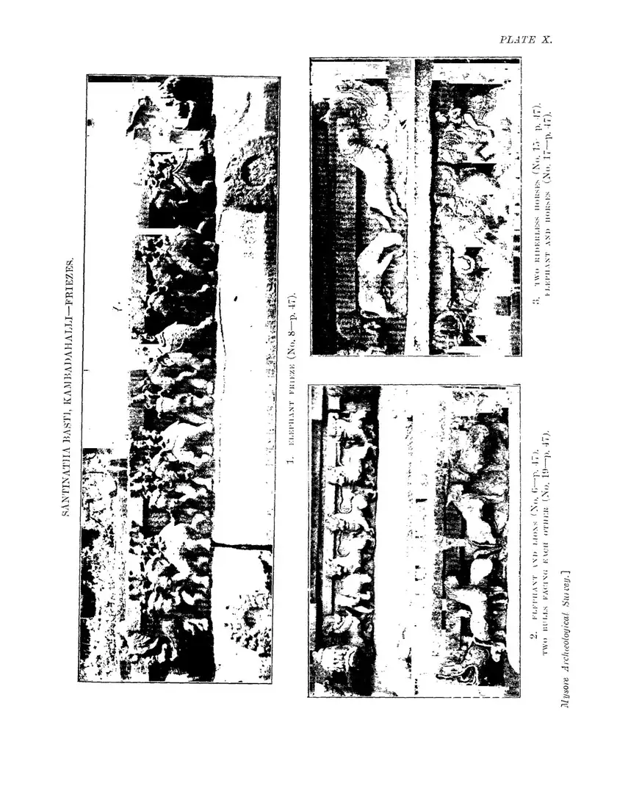
- FLEEPANT FRIEZE (p. 47)
- FLEEPANT AND HORSES (p. 47)
- TWO RIDERLESS HORSES (p. 47)
Šāntinātha Basti
About twenty feet to the north of the compound wall and a little to the north-east of the gateway were built, at a slightly later period, two other temples facing each other.
The basement is high with a round cornice of soapstone and a finely carved frieze of ridden horses and elephants, wild lions and yālis.
Outer View
Navaraņga Doorway; Šāntinātha; Navaraņga; Eastern Basti; Navaraņga Ceiling
North face—
(1) A lion with ram's horns fights a yāli or trunked lion.
(2) Lion frieze with makara in the corners.
(3) A battle between two elephant corps.
East face—
(4) Cantering horsemen.
(5) Row of lions.
South face—
(6) Two lions attacking an elephant (Pl. X, 2).
(7) Two royal figures on horseback with umbrella holders behind them.
(8) Two elephant corps fighting. The fore-shortened elephants which are attacked by those in profile are well carved. The riders wear well-shaped tiara (Pl. X, 1).
(9) Horsemen.
(10) Lion frieze with makaras at the corners.
(11) A high personage seated on a throne with attendants
(12) An elephant procession.
(13) An elephant racing to attack a horseman.
West face—
(14) A battle scene with spearmen and horsemen intermixed. One hero has fallen
(15) Two riderless horses. The male follows the female and paws the earth with its hoof (Pl. X, 3).
(16) A cavalry battle.
(17) An elephant pulling a rider off the horse he is riding (Pl. X, 3).
North face—
(18) Men on elephants pursuing lions.
(19) Two bulls facing each other, perhaps fighting.
(20) Two horses fighting.
(21) Two trunked yālis facing each other.
The sculptures on the base of the east shrine are better outlined and finished than those on the west shrine. But between the two a platform has been built in which does not allow a full appreciation of the original outlines of the structure here. The upper portion of the west shrine is of well-dressed granite blocks, while the upper part of the rest of the walls is all of bricks of size 11"×6"×2".
The navaranga doorway on the north which bears the inscription (Epigraphia Carnatica, Mysore Supplement, Ng. 232) of Boppa, son of Navaranga doorway. Gaṅgarāja, has on its jambs five ornamental bands consisting of floral scrolls, rhomboidal rosettes, flowers and an indented square pilaster with a floral vertical band, beaded hangings on its cubical mouldings and its vase and loaf mouldings. A row of swans appears below the cornice which is unworked. Very probably it is a later insertion.
The western shrine or Śāntinātha Basti consists of a large garbhagrīha, about twenty feet square, with a shallow padma ceiling borne on four octagonal pillars with beaded hangings. In it on an octagonal pedestal bearing relievos of the eight Dikpālakas stands a colossal image, about ten feet high including the base, of Śāntinātha with a smiling face. The image is slim-bodied and well proportioned and bears a smile.
The original stone structure ends with the doorway without a porch.
To it was added at a later date a navaranga of nine ankaṇas with its four soapstone pillars of the bell-shaped variety similar to those of the porch of the trikūṭāchala and of the temple at Narasamaṅgala. There is nothing important in the navaranga except the five images kept in it. From the south-east clockwise these are as follows :—
(1) A Yaksha seated with an overturned vṛishabhapītha in front of him, holding padma, paraśu, akshamālā and phala.
(2) A colossal seated Nēminātha of soapstone in dhyānāsana with a halo around his head and with two beautifully carved chāmara bearers behind him (Pl. I, Frontispiece). The latter are some of the finest pieces of work in the temple.
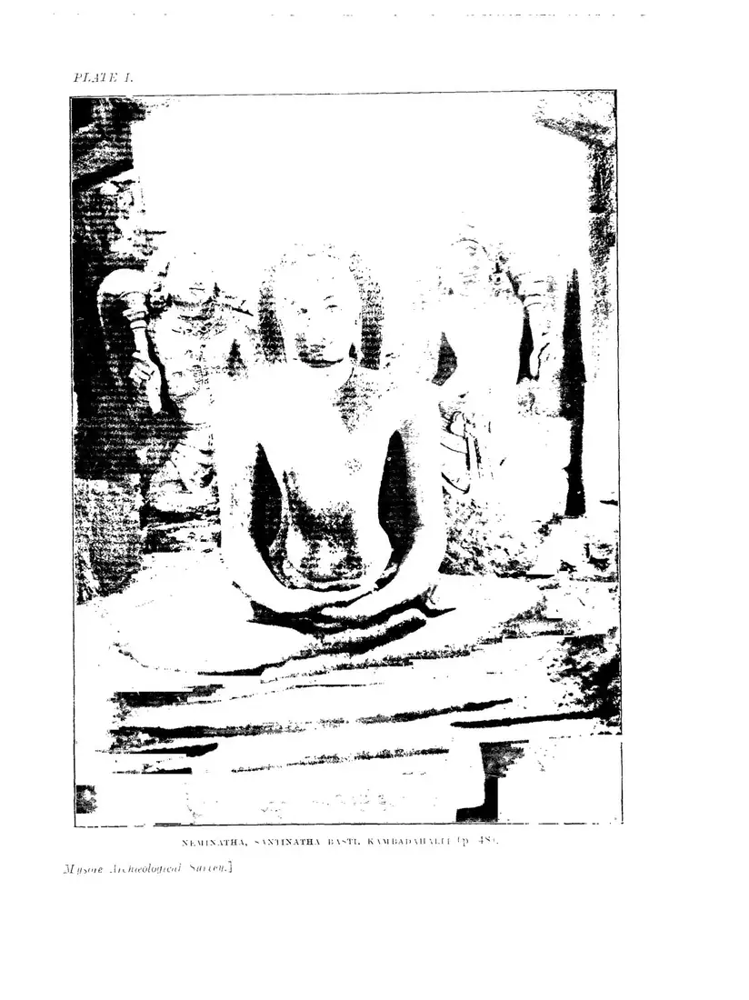
- NEMINATHA, SANTINATHA BASTI. KAMBADAHALLI (p. 48 [Mysore Archeological Sarves.]
Cited in the text: p. 48 ↩
(3) A Jina seated in dhyānāsana with a fine tōraṇa behind him consisting of a floral arch, a jewelled arch and a serpentine arch with mangoes and Yakshas dancing and drumming in the convolutions.
(4) A Yakshī (Padmāvatī ?) on Garuḍa pedestal with abhaya, chakra, chakra and padma (Pl. VIII, 2). It is a remarkable figure for its anatomy which is exceedingly similar to the finest Chōlā images with exaggeratedly high breasts, low belly, sari on lower part of the body, jewelled necklet, anklets, armlets, bracelets, ear-rings and tiara, with the hair hanging in rich curls on either shoulder.
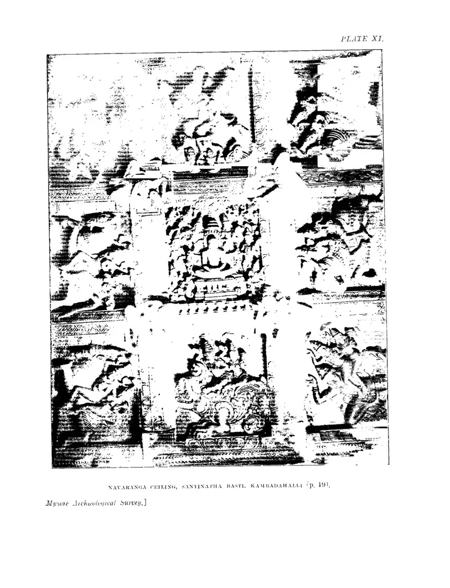
- NAVARANGA CEILING, SANTINAPHA BASTI. KAMBADAHALLI (p. 19)
Cited in the text: p. 49 ↩
Inside the garbhagriha on the beam appears the inscription of Vīrarājendra. On the abacus of the north-east pillar is the fourteenth century inscription published in the supplement.
Near the original vestibule doorway of the shrine is an empty octagonal pīṭha on either side, on which stood a dyārapāla. The pair is now found to the east of the navaraṅga doorway and it is a remarkable pair (Pl. XII, 1 and 2). The south one holds : abhaya, cobra, bell with trident head, uplifted hand, trident and broken resting on gadā ; and is standing with its loins twisted in the Chōla fashion (as at Kittūr). The north one which holds in its back hands a trident and a cobra has its front hand resting on the mace and the right leg crossed behind the left one. Both the figures are well bejewelled and wear curly long hair, large ole -earrings and jewelled tiaras.
The doorway between them is similar to the one on the north but has on the jambs Manmatha and Rati in addition to the carved bands.
The building further east of this part appears to have been an independent basti with a garbhagriha, an open vestibule and a navaraṅga, the pillars being mostly of the early bell-shaped kind. The garbhagriha appears to have lost its image whereafter its back was opened out to make an eastern entrance.
The most important æsthetic piece in this part of the temple is the beautiful central ceiling (Pl. XI) which is a flat one composed of three large slabs and very closely resembling the ceiling of the Kallēśvara temple at Araṭaguppe. In the eight outer panels are the respective Dikpālakas finely designed and delicately carved with slender loins and body, beautiful faces and tastefully placed ornamentation. From each corner of the central panel hangs down a flying Gandharva in very high relief offering flowers. In the centre surrounded by male chāmara bearers, Gandharvas, Yaksha and Yakshini and seated on a simhapīṭha with elephants at the back is an extraordinarily beautiful image of a Jina with a halo behind his head and a mukkode above. A remarkable feature of the image is that over the head is a hemispherical bulge covered with curly hair resembling the images of the Buddha.
Pillar
Directly to the north of the Pañchakūṭa Basti on a high platform composed of irregular stones stands a tall pillar (Pl. XII, 3) of hard dark grey soapstone on an octagonal pedestal having the eight Dikpālakas. Its shaft has the following mouldings : square, octagon, sixteen-fluted, cylindrical with three bands, viz. , lotus, jewel and wavy creeper ; bell (poorly developed ), wheel shape, square abacus and seated Brahma in the form of a Yaksha, facing east. The pillar is one of the most elegant in the State and has given the village its name.
7
Part III: Study of Ancient Monuments and Sites › Mysore DistrictBinđiganavale
The Nagarēšvara Temple; Kēšava Temple
THE NAGARĒŠVARA TEMPLE.
The Nagarēšvara temple to the north-east of the village is an unimportant structure. In its navaranga are four cylindrical soapstone pillars of the bell-shaped type, which perhaps have been brought from elsewhere and set up here.
The linga in the garbhagriha might be an ancient piece.
The building has a porch in front and consists of a garbhagriha, a vestibule and a navaranga. The last has a cell on the north enshrining a modern image of Šrīnivāsa.
In the navaranga are kept rude images of Gaṇapati, Mahishāsuramardinī, Bhairava and Nandi.
KĒŠAVA TEMPLE.
The Kēšava temple is in the centre of the village and faces east. It consists of a garbhagriha, a vestibule with a cell on either side, a navaranga, a mukhamaṇṭapa porch, a pātālānkaṇa with shrines for the Āchāryas on the north and a mahādvāra. The temple has an outer-pradakshiṇā and a prākāra wall.
The outer walls of the garbhagriha and vestibule are of soapstone and have right-angled pilasters. The outer walls of the navaranga and the rest of the building are built of granite. The pillars of the pātālānkaṇa have square base and octagonal mouldings. Those of the porch are cubical and square of the Vijayanagar type. But the pillars of the navaranga are of two types. Those in front have cubical base and sixteen flutes. Four of the remaining pillars are cylindrical and some of them bear modern inscriptions mentioning that they were gifts by private individuals.
The vestibule doorway has perforated screens on the sides.
The cell to the right of the vestibule has the wooden images of Garuḍa and Hanumān made recently in Bangalore. The eyes of Garuḍa are Sāligrāma stones.
The image of Saumyanāyakī is enshrined in the northern cell. It is a Vijayanagar period image.
The garbhagriha doorway is a Hoysaḥa piece. The image of Kēšava in the garbhagriha is also a Vijayanagar piece and poor in workmanship.
The temple appears to be a monument dating from the late Hoysaḥa period. Two modern inscriptions and a late Hoysaḥa inscription were discovered in the temple.
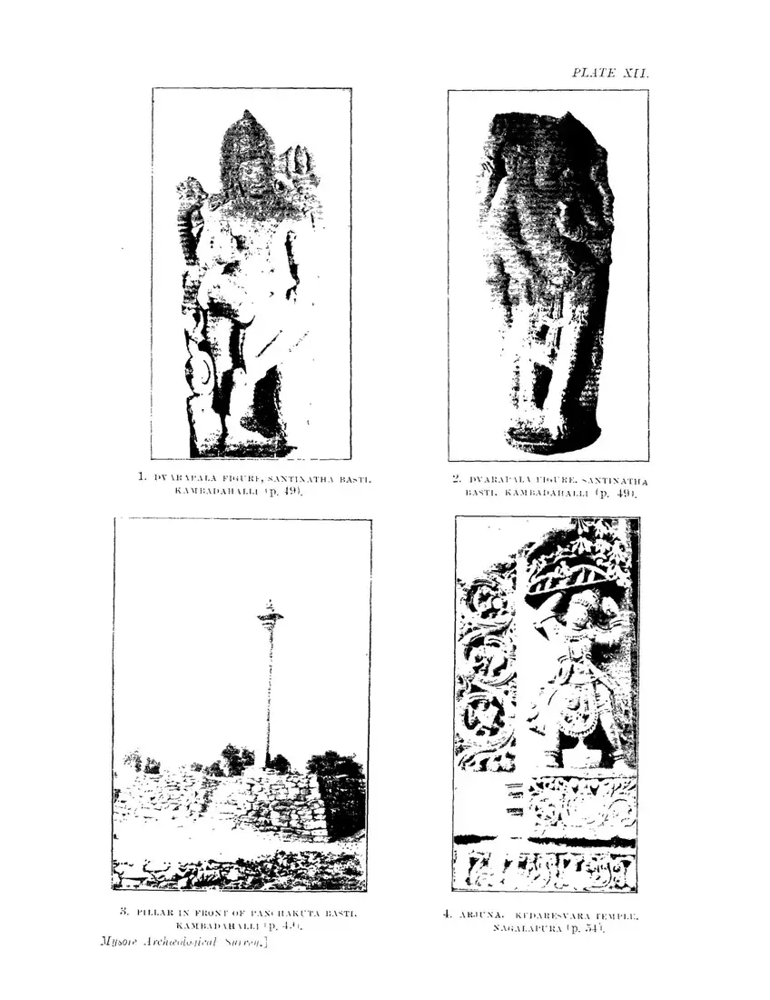
- DVARAPALA FIGURE, SANTINATHA BASTI KAMBADAHALLI (p. 49)
- DVARAPALA FIGURE. SANTINATHA BASTI. KAMBADAHALLI (p. 49)
- PILLAR IN FRONT OF PANGHAKUTA BASTI KAMBADAHALLI (p. 44)
- ARJUNA. KFDARESVARA TEMPLE NAGALAPURA (p. 54)
Part III: Study of Ancient Monuments and SitesTumkur District
Nāgalāpura
Hoysaļa Agrahāra
No heading in the body: this section starts at its printed page (51).
Nāgalāpura is a village about 5 miles to the south of Māyisandra. It appears to have been a prosperous agrahāra town in the later Hoysala Agrahara. Hoysala days between about 1250 and 1340 A.D. as evidenced by its temples which appear to belong to about 1260 A.D. and the inscriptions of Ballāla III at the entrance to the place. Near these inscriptions and also at the south-east corner of the village are lying the images of Bhairava and other gods which are undoubtedly of Hoysala workmanship. The village has two temples both of which must have been very beautiful structures before they became dilapidated.
Chennakēšva Temple
Outer View; Wall Images; Navaraņga; Vestibule; Garbhagrīha
The Chennakēśava temple is built on a high ground in the centre of the old town which has now been converted into fields. The structure has a garbhagriha without a vimāna, a vestibule and a navaranga and appears to have had a porch which has now disappeared (Pl. XIII).
The garbhagriha whose outer walls now stand almost intact is a highly ornate star-shaped structure (Pl. XIV, 1). Its tower has disappeared. The outer navaranga wall is square with projecting sides.
It is intact only to the level of the basement above which the outer navaranga wall has disappeared except in the south-east and north-east corners. The basement contains six beautifully worked friezes of elephants, horsemen, scroll work, a blank frieze on which the Paurānic scenes were intended to be carved, makaras and swans. All these carvings closely resemble those of Sōmanāthpur. The top portion of the outer walls has ornamental pilasters with canopies bearing variegated towers.
Wall images. The wall images are as under :—
South-east corner of navaranga.—
1. Dancing Gaṇēśa.
2. Amaranārāyaṇa with a fine but damaged figure of Garuḍa.
3. Standing Vishṇu with the hands broken.
South of vestibule.— The images here have not been fully finished.
4. Standing Vishṇu with padma, gadā, chakra and śankha.
5. Two monkeys fighting for a fruit.
6. Gōvardhanadhāri.
7. Yōgā-Narasimha.
8. Indra on Elephant.
9. Kṛishna and consort on Garuḍa.
10. Vishṇu standing. Hands are damaged.
11. Dancing goddess with eight hands. Damaged.
12. Vishṇu standing with consorts. The attributes are padma, chakra, gadā and śankha.
13. Dancing Sarasvatī. Unfinished.
14. Standing Brahma. Bearded.
15. Vishṇu standing with gadā, chakra, padma and śankha.
16. Mōhinī and monkey.
17. Hayagriva seated with the head of a horse and holding rosary, chakra, śankha and a book (Pl. XIV, 2).
18. Vishṇu standing with padma, śankha, gadā and chakra.
19. Vishṇu standing with gadā, śankha, padma and chakra.
20. Durgā seated with sword, trident, drum and bowl and treading on demon.
21. Vishṇu standing with gadā, śankha, chakra and padma.
22. Yōga-Nārāyaṇa (Pl. XIV, 3). The form shows Vishṇu seated in padmāsana with one palm facing upward and placed over the other. The attributes are śankha and chakra.
23. Vishṇu standing with chakra, śankha, gadā and padma. Damaged.
24. Ugra-Narasimha. Damaged.
25. Vishṇu standing. Damaged.
26. Sarasvatī seated with rosary, goad, pāśa and book (broken).
27. Vishṇu standing. Broken.
28. Dharaṇi-Varāha. Snout broken.
29. Lakshmī and Nārāyaṇa on Garuḍa.
30. Vēṇu-Gōpāla with Garuḍa standing to right.
31. Vishṇu standing with consort and holding padma, gadā, śankha and chakra.
32. 33. Near this on the ground are the fallen images of standing Narasimha and standing Vishṇu. The latter holds broken padma, chakra and śankha.
North-east corner. —
34. Dancing Mōhinī built transversely into the wall.
35. Dhanvantari (Pl. XV, 1). Two-handed Vishṇu seated in padmāsana with chakra and śankha in the field above. The hands are broken.
36. Standing Viṭhala with a bag in each of his two hands (Pl. XV, 2). A consort stands on each side.
37. Dakshiṇāmūrti wearing long coat.
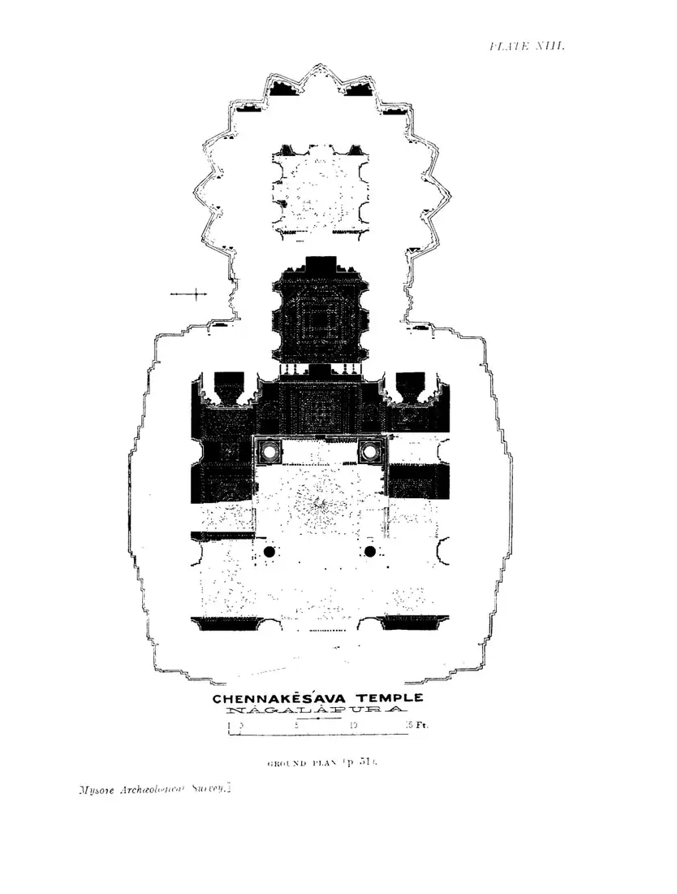
- GROUND PLAN (p 51)
Cited in the text: p. 51 ↩
The old navaranga doorway appears to have been repaired and the rest of the damaged walls covered up by rubble masonry in 1920 as stated in an inscription of this date on the lintel. The navaranga which is about 20' square, is one of impressive ornamental workmanship. Its wall pilasters are cruciformed, while its four central bell-shaped pillars have their mouldings well ornamented with beaded hangings and simhalalāṭas. The abacus bears lion faces below and well designed scroll work on the sides, while the capitals have rearing lions with the warriors supporting in the corners. Each pillar had originally four bracket images which have now disappeared (Pl. XV, 3). Of the ceilings, all except the one near the doorway of the vestibule are domes finely carved with good depth and interesting designs. Most of them have concentric circles. The south ceiling has a concentric octagon. That on the west is flat with nine panels having blown lotuses. The one on the north-east has concentric squares with an inset curve-sided Śrīchakra. The central ceiling which is supported on corner stones bearing figures of the Dikpālas has a deep gallery with two concentric circles supported by vaulted ribs and having a large bud pendant. Against the west wall are two towered niches whose deities are now absent.
The doorway of the vestibule has jambs bearing the dvārapālas and perforated screens. On the lower lintel appears Amara-Nārāyaṇa, while on the upper one there is the figure of dancing Vishṇu. The vestibule is about 7' square with cruciformed pilasters on the walls and a flat ceiling having a padma surrounded by the Dikpālakas.
Under a similar ceiling in the garbhagriha stood originally an image of Chennakēśava which has now disappeared. In its place now stands a largish image of Venkaṭēśa, about 5' high, with scroll work on the prabhāvali and a consort on each side. The image is of the Vijayanagar times. The attributes are: dāna, chakra, śankha and kaṭi.
Kēdārēšvara Temple
General Description; Outer walls; Wall Images
Directly to the north-east of the Chennakēśava temple and about 200 yards away stands the soapstone temple of Kēdārēsvara with sculptures more finely worked (Pl. XVI, 1). It appears that this temple was first completed and then the Vishṇu temple was taken up for finishing.
The temple has a garbhagriha of the sixteen-pointed star shape, a vestibule and a navaranga with its door to the south. The old porch has disappeared.
The outer wall which is reared upon a foundation of floating slabs is similar to that of the Kēsava temple in its basement of six sculptured friezes, its wall images and turreted canopies. Between the latter two, there is a projecting eaves-shaped cornice with dentil ornamentation above and rows of knob heads below. The basement friezes have (1) elephants, (2) horsemen, (3) scroll work, (4) blank, intended for Paurāṇic scenes, (5) makaras, with fan tails and riders on their backs, and (6) swans with peacock tails.
The wall images are well designed and finely finished. They are not inferior to those at Nuggihalli. They stand on pedestals ornamented with scrolls and floral work. Starting from the door, pradakshiṇa-wise, they are as follows :—
Wall images.
South wall :—
1. Arjuna holding bow in right hand and shooting arrow with the left at the fish (Pl. XII, 4). His left hand which has just let the chord is expressive.
2. Vertical scroll with elephants and gryphons.
3. Gajāsuramardana.
4. Vishṇu standing. Unfinished.
5. Vishṇu standing with consorts. Unfinished.
6. Śiva and Pārvatī. Unfinished.
7. Bearded Brahma standing with consort.
8. Two monkeys fighting for fruit. Unfinished.
9. Sadāśiva standing, with trident and drum and attended by Brahma and Vishṇu.
10. Yama with consort, on buffalo.
11. Śiva standing, with axe and deer.
12. Śiva standing as Bhikshāṭanamūrti with consort. He holds deer, drum, stick and bowl.
13. Three-legged Bhṛingi dancing. A fine figure.
14. Bhairava with consort.
15. Tripurāri standing with consort and holding arrow, axe, deer and bowl.
16. Durgā seated, with sword, trident, drum, bowl and demon's head.
17. Śiva standing. Of the attributes, trident, lotus and goad can be identified.
West wall—
18. Niruti riding on demon, with sword in hand.
19. Vidyā-Gaṇapati with mouse on pedestal.
20. Mahishāsuramardinī.
21. God seated in sukhāsana.
22. Śiva dancing.
23. Sandhyā Tāṇḍava (?).
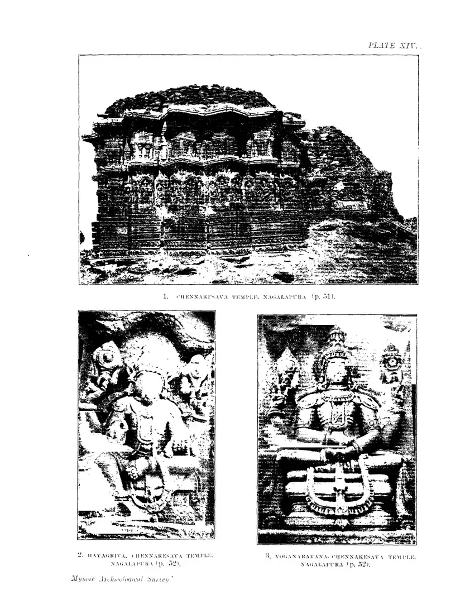
- CHENNAKPSAVA TEMPLE, NAGALAPURA (p. 51)
- BAYAGRIVA, CHENNAKESAVA TEMPLE, NAGALAPURA (p. 52)
- YOGANARAYANA, CHENNAKESAVA TEMPLE, NAGALAPURA (p. 52)
24. Šiva seated as Kāpāli wearing a necklace of heads and holding sword, trident, drum and bowl.
25. Varuṇa with consort, seated on a beautiful makara (Pl. XV, 4).
26. Umāmahēśvara.
North wall—
27. Bhikshāṭanamūrti.
28. Shaṇmukha on peacock.
29. Two-handed Šiva with axe and deer.
30. Kubēra on horseback.
31. Sarasvatī.
32. Šiva as Kāpāli.
33. Šiva standing, holding drum and fire.
34. Naked Mōhinī with uplifted cobra.
35. Ēśāna on bull and without consort.
36. Šiva standing. Symbols broken.
37. Pārvatī standing with rosary, trident, pāśa and phala. Unfinished.
38. Tripurāri standing in tribhaṅga and holding rosary, arrow, bow and tarjanī .
39. Kubēra and consort on horseback.
40. Bhairava with dog held by leash.
41. Durgā dancing.
North-east corner—
42. Umāmahēśvara on Nandi.
East wall—
43. Manmatha. Unfinished.
The rest of the images have disappeared from the wall. Several of them are strewn about. Indra is seen lying on the ground to the east.
The old navaraṅga doorway has disappeared and in its place a plain one of granite has been inserted. The navaraṅga is very similar to that of the Kēśava temple. The pillars are exactly similarly worked as also the two niches against the west wall.
Navaraņga
Vestibule; Garbhagrīha
The ceilings, too, are nearly similar to those at the Kēśava temple and in respective positions. In the hall are kept a number of images among which are the following, commencing from the doorway and running clockwise :—
1. A Saptamātrikā panel with Virabhadra and Gaṇapati.
2. Vidyā-Gaṇapati in south niche.
3. Mahishāsuramardinī standing and spearing the demon. It is a fine figure intact in the north niche.
4. Shaṇmukha with the peacock broken.
5. Kēśava with his front hands broken.
6. Sūryanārāyaṇa with Chhāyās, and holding abhaya, padma, padma and dāna.
7. A fine bull with a thick neck and a small head. The ornamentation is good. The central ceiling has a row of Yakshas and Yakshīs above the Dikpālakas and also on the lower edge of the pendant.
On the north wall of the navaranga a rude line engraving has recently been made of Vēnugōpāla with a cow licking his feet and Hanumān holding the umbrella. Below is a Kannađa inscription reading: Šibī Narasumhva Yōgi .
The doorway of the vestibule is well designed with good figures of dvārapālas, perforated screens, Umāmahēsvara on the lower lintel and Tānđavēsvara on the upper one. The ceiling of the vestibule is flat and has the figure of Tānđavēsvara surrounded by those of the Dikpālas.
Vestibule. The garbhagriha doorway has Tānđavēsvara on the lower lintel and a lion face on the upper one. Inside the garbhagriha, under a flat plain ceiling and on a large pānipītha is placed a small cone-headed linga which reminds us of the small Kēdārēsvara linga at Haļebīđ.
Garbhagriha.
Turuvekere
A view of the tower of the Mūle-Šankarēsvara temple at Turuvekere is published in (Pl. XVIII, 3.)
Part III: Study of Ancient Monuments and Sites › Tumkur DistrictNoņavinakere
Nonavinakere is a large and important village with a population of nearly 3,000. It is situated about 8 miles south-east of Tiptūr.
An Ancient Place
To this early period appear to belong some of the five linga shrines situated in or near the place, viz. , Nonabēsvara, Šāntēsvara, Garigēsvara, Chōlēsvara and Kallēsvara. The association of the five lingas together in worship and the architectural evidences point to the fact that some of the temples at least hail from the 10th century A.D., though the more important temples of the place, viz. , Vēnugōpāla and Bēterāya, belong to the Hoysaļa and Vijayanagar periods respectively. The Nonabēsvara and Garigēsvara temples which stand side by side on a high ground lying between the Turuvekere road and a kalyāni or tank, are, no doubt, the oldest structures in the village.
Noņabēšvara Temple
General Description
The Nonabēsvara temple is a small structure which must have been originally of granite. Its walls have now been built up out of bricks perhaps during the renovations of the 19th century.
General description. The original temple consists of a small garbhagriha (7'×7') containing a flat-headed and medium-sized linga, an open vestibule (about
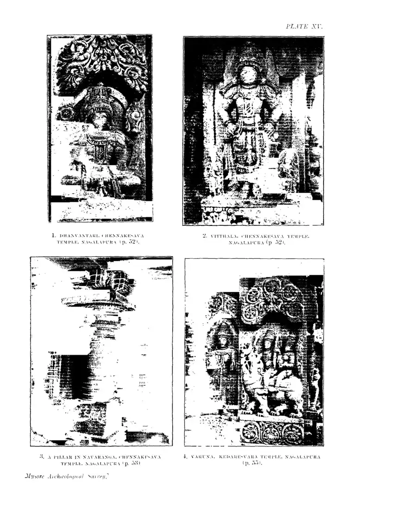
- DHANVANTARI CHENNAKESAVA TEMPLE. NAGALAPURA (p. 52)
- VITTHALA. CHENNAKESAVA TEMPLE NAGALAPURA (p. 52)
- A PILLAR IN NAVARANGA, CHENNAKESAVA TEMPLE. NAGALAPURA (p. 53)
- VARUNA. KEDARESVARA TEMPLE. NAGALAPURA (p. 55)
8'×8') with its front beam supported by two thin pillars of the early bell-shaped type comparable with the pillars of the Pātālēsvara and Rāmēsvara temples at Talkād and Narasamaņgala respectively, a navaraņga with four similar but stouter pillars (Pl. XVIII, 1) and no porch. The navaraņga pillars have the bell-shaped moulding rising on a shaft which is either cylindrical or has a sixteen-sided moulding superimposed upon an eight-sided one. The base is cubical. Above the neck there is the round wheel-shaped moulding with a plainish capital. The brackets bear a simple form of vertical ribbed ornamentation.
The ceiling of the vestibule is flat, with a large padma; while that of the navaraņga, which is also flat, is divided into nine panels by two pairs of intersecting rafters with pendants. In the central panel there is a padma.
The doorway of the navaraņga is of granite and has, on each jamb, an octagonal pilaster with the horse-shoe-shaped kīrtimukha and broad-petalled floral band, while the cornice above the lintel has a rounded upper edge with four horse-shoe-shaped kīrtimukhas. The brick structure was constructed in 1908 as noted upon it.
Part III: Study of Ancient Monuments and Sites › Tumkur District › NoņavinakereGaņgēšvara Temple
General Description
The Garigēsvara temple which is situated just to the north of the Noņabēsvara temple is entered by an exactly similar doorway and has
General description. very similar pillars. The original ceilings also must have been similar. There is little doubt that the two temples were twins. Possibly they were constructed on the occasion of some matrimonial or other kind of alliance between the Noļamba and Gariga dynasties.
The pilasters in the eastern corners of the vestibule have square bells bearing square vases and rising on indented square shafts. Each face is ornamented with a padma surrounded by a circle and suggesting a development of the horse-shoe arch.
Part III: Study of Ancient Monuments and Sites › Tumkur DistrictOld Images
Between the two temples of Noņabēsvara and Garigēsvara is a small platform near which lie the greenish trap stone images which
Saptamātřikā group
In the neighbouring field to the south-east are lying the images of Chāmuņdā, Indrāņi (?), Kaumārī and Vārāhī. Along with these lie also two Nandis and an image of Bhairava.
8
Śāntēśvara Temple
General Description
The Šāntēšvara temple is situated about 50 yards directly behind the Garigēšvara temple. It is nearly similar to the two temples
General description. above described except that it has no ornamental ceilings and no free pillars supporting the front beam of the open vestibule. Its navaranga pillars, however, are very much more ornate, having well carved beaded hangings and jewelled and floral bands as also a rope moulding round the neck.
The Nandi in the navaranga appears to be old in that it has an ornamentation rather unusual, particularly its garland of longish bells and a diadem with a padma flower.
Kōđi-Kallēśvara Temple
The Kōđi-Kallēšvara shrine is a small structure to the east of the northern waste-weir of the Noņavinakere tank and about a mile and
A Chōła Temple
Chōłēśvara Temple
The Chōlēšvara temple which appears to belong to the Chōla period stands in the heart of the town and to the south of the Gōpālasvāmi temple. It is also a small granite structure similar to the others with the difference that its pillars of granite have octagonal shafts and the vestibule has no additional pillars.
Part III: Study of Ancient Monuments and Sites › Tumkur District › Old ImagesGōpūlasvāmi Temple
History and General Description
The Cells. Navaraṅga; Metallic Images
No heading in the body: this section starts at its printed page (58).
The chief temple in the place is that of Gōpālasvāmi. It is a trikūtāchala of the Hoysala style, with a Hoysala towerless mahādvāra, and the outer walls of the main temple and its single tower built of granite in later times. The mukhamaṇtapa and the long six-pillared outer navaranga with its sixteen-fluted pillars are also of later, perhaps Vijayanagar, times. The inner navaranga and its three cells, of which the western one only has a vestibule, are of the Hoysala period.
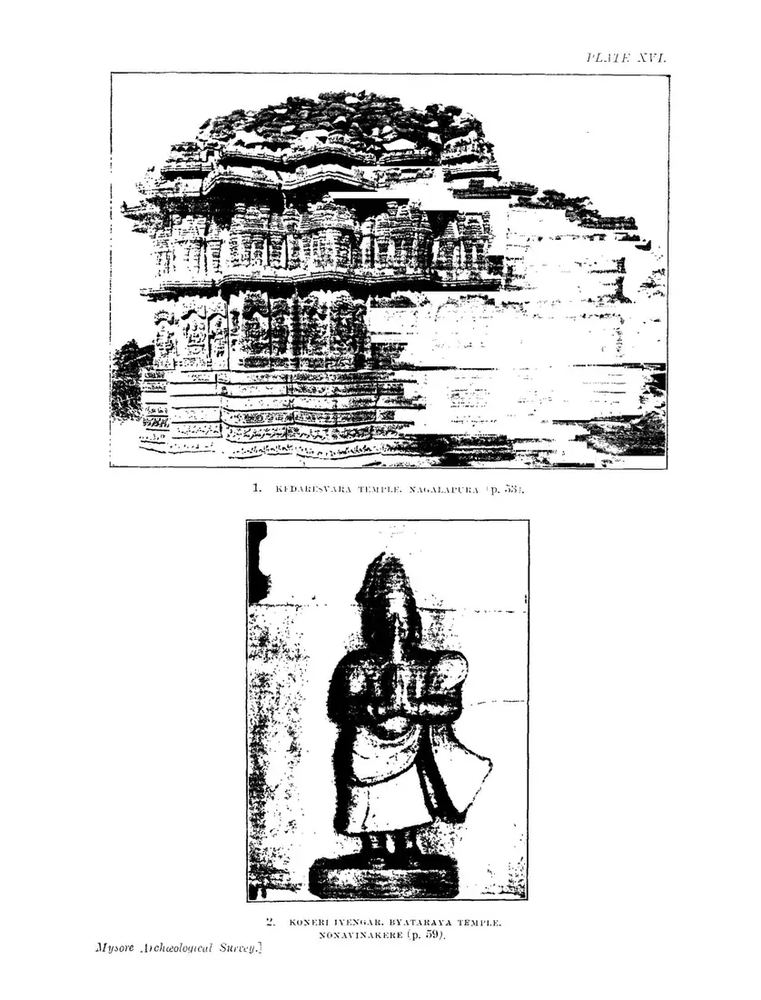
- KHĀRESVARA TEMPLE. NAGALAPURA (p. 53)
- KONERI IYENGAR. BYATARAYA TEMPLE NONAVINAKERE (p. 59)
The south cell has an image of Vēņugōpāla, (Pl. XX, 1) the north one of Yōgānarasimha with knee band, and the west one an image of Janārdana. All the three images are of Hoysaļa workmanship. The Janārdana image is slightly damaged and holds the lotus raised upon the front right hand.
The cells. The navaranga has the images of Vishvaksēna and the Vaishņava teachers of Vijayanagar period workmanship. The ceilings are flattish with padmas, except the central one which is a shallow dome.
Navaranga. The most beautiful objects in the temple are the metallic images of Janārdana and his consorts (Pl. XVII, 1 and 2). In workmanship they are of the Vijayanagar period. Their bodies are beautifully shaped, slim and well poised. They all wear well designed lower cloths with kachche , loin cloths and kirīṭas. Their bodies are ideally shaped according to Hindu notions, even the backs being most naturally shaped. On the forehead of the God is a vīrarēkhā.
Metallic images.
Byāṭarāya Temple
The Byātarāya temple is said to have been constructed by one Kōnēri Iyengār about 400 years ago. His image wearing a long coat and conical cap is carved on one of the pillars of the navaranga.
The temple consists of a towerless mahādvāra of cubical pillars with eight-sided shafts, a garbhagrīha, a vestibule and a long and large navaranga.
The outer walls are formed of large blocks of well-worked granite, with three cornices below, wall pilasters, turreted pillars and niches, unworked kirtimukhas on the eaves and a brick and mortar tower with an eastern projection after the Hoysaļa fashion.
The navaranga has a porch each on the south and the north and a mukhamaņtapa of five squares with a pātālānkaņa of ten squares. The central ankaņa of the mukhamaņtapa has a shallow, but well-worked, dome with a padma inset in a square.
The outer navaranga has sixteen pillars with cubical mouldings connected by fourteen-fluted shafts. On one of these the image of Kōnēri Iyengār is found as stated above (Pl. XVI, 2). On the other pillars appear the relievo images of several chiefs pointed out by the local people as those of Krīshṇarāya and other Vijayanagar kings and their queens. Above them are carved the images of Venkatēśa. In this large navaranga are kept the images of the vāhanas of Alameludēvī, of Gaņesa, of Sudarśana and of the Vaishņava Āļvārs.
The temple has two vestibules. In the garbhagrīha stands the image of Venkatēśa carved of black stone with the prabhāvaļi. It is a fine image showing traces of Hoysaļa influence on Vijayanagar workmanship.
Part III: Study of Ancient Monuments and Sites › Tumkur DistrictTaṇdaga
Taṇdaga is a village about 5 miles to the south-east of Noṇavinakere. It hails at least from the Hoysala days and has been called Śankaranārāyaṇapura in the inscriptions. As usual with ancient agrahāra towns, it is built on a height with the Chennakēśava temple standing at the centre and the Mallēśvara or Mūlasthanēśvara temple about a hundred yards to its north-east. About a mile to the north of the village and near inscription No. Tiptūr 61, there are the ruins of ancient mud fort walls, belonging perhaps to the Pāllegār period.
Chennakēśava Temple
(Pl. XVIII, 2.)
The Chennakēśava temple is a typical Hoysala building of about the 14th century. It has a garbhagriha with a soapstone tower, a vestibule and a navaraṅga of four pillars with a small porch of one aṅkaṇa to the east.
The temple is built on a floating foundation of large slabs without any platform.
Outer View. Porch
Navaraṅga; Vestibule; Garbhagriha
It has five cornices without ornamentation except for the dentil projections and the cross-shaped and uncarved mouldings. The upper wall has ornamental pilasters and variedly shaped towered pavilions borne on one, two or four pillars. The one on the south outer wall of the navaraṅga has four pillars and is finely designed.
The cell is cruciform in plan and has the original stone vimāna intact with three tiers of carved turrets. The old parapet with its kīrtimukhas and scrolls is also intact. In the south-west corner of the temple is now kept a mutilated Hoysala image of Kēśava, about 5' high, with its padma and hand holding gadā broken. It appears to have been brought from elsewhere and stored here. On the walls of the cell are the images of standing Vishṇu in various attitudes, of Ugra-Narasimha, Brahma and Umā-Mahēśvara. The sōmasūtra has a lion face.
Most of the outer stone slabs have Kannaṇa numerals and letters indicating their position— iv. iii. ( iv. ). These show that the stones were prepared elsewhere and put into position later. The characters are of the 14th century. The brick work of the parapet is dated in 1911 A.D.
The porch which is borne on two bell-shaped soapstone pillars has a deep ceiling of lotus design with a padma pendant. On the floor there lies the prostrate figure, about 4½' long, of the chieftain who got the temple constructed. He lies with his face downwards, his folded hands extended beyond his head and his wet hair tied up in a loose knot. He wears dhoti and waist cloth and anklets, armulets and bracelets.
Porch.
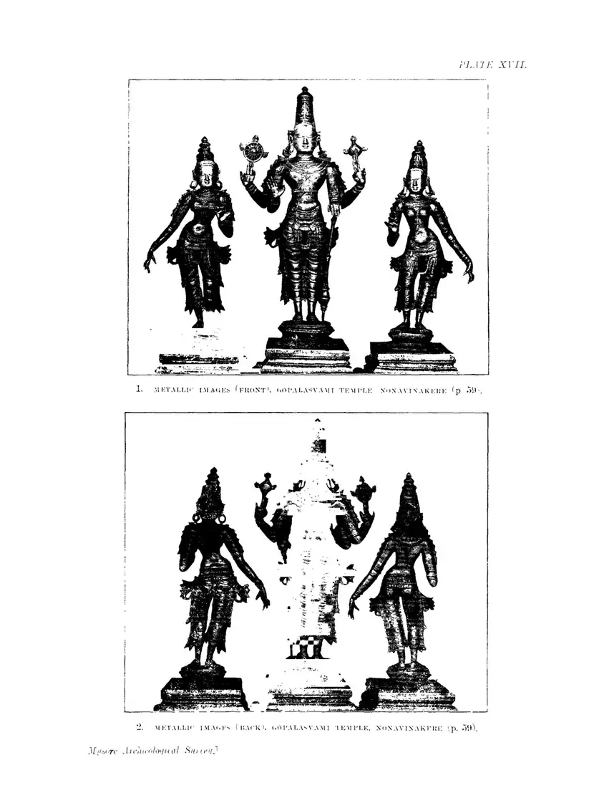
- METALLIC IMAGES (FRONT). GOPALASVAMI TEMPLE. NONAVINAKERE (p. 59)
- METALLIC IMAGES (BACK). GOPALASVAMI TEMPLE. NONAVINAKFRE (p. 59)
Cited in the text: p. 59 ↩
The lintel of the navaranga doorway has an inscription dated in the year Nala.
The characters are late Hoysala and indicate the date 1316
Navaranga.
A.D. The date 1536 A.D. given in the Epigraphia Carnatica , Tumkūr District, Tiptūr Taluk, is too late.
The navaranga has indented square wall pilasters and round bell-shaped pillars of the usual Hoysala type. The ceilings are domes with padma design, excepting the central one in which a ribbed dome rises over two sets of corner stones well carved with rosette friezes on the sides and lion faces on the lower surfaces. Against the west wall of the navaranga there are two towered niches without the śikharas and without their original gods.
The doorway of the vestibule which is supported by jambs having perforated screens, bears on its lintel a fine sculptured piece with Gaja-Lakshmī seated under a low serpentine tōraṇa with mango pendants. The vestibule is well lit by the perforated domed ceiling.
Vestibule.
In the garbhagriha stands on a Garuđa pedestal the image of Kēšava, about
Garbhagriha.
5' high. Since it is covered with much wax, it does not appear to advantage.
Mallēśvara Temple
Mallēśvara vs Nonabēśvara; Images
About 200 yards east-north-east of the Chennakēšava temple stands the much
Mallesvara
Nonabesvara.
smaller, but older temple of Mallēšvara, called Mūla-sthanēšvara in the inscriptions. It resembles the Nanabēšvara temple of Noṇavinakere except in the following details:—
The vestibule has a doorway and is closed. The navaranga wall pilasters have sixteen-sided flutings. The navaranga doorway is less ornamental. The navaranga pillars which have undeveloped bell and vase-shaped mouldings and well developed baloon tyre-shaped mouldings, and the central ceiling of a single granite slab with a large shallow padma, declare the monument to belong to 1000 A.D. or earlier.
In front of the temple are kept in an irregular fashion the mutilated images of the Saptamātrikas among whom may be identified
Images.
Bhairava, Vīrabhadra, Indrāṇī, Kaumārī and Māhēšvarī.
A search in the neighbourhood would perhaps help to recover the other images.
In the navaranga of the temple are kept the images of Gaṇēša and seated Pārvatī which are not of high class merit. In the vestibule is kept a small fine bull.
In front of the navaranga doorway is a natural-looking bull.
Of the three inscriptions at the entrance two are vīragals of the time of Ballāla II, Hoysala, showing a lancer fighting an archer in the lower panel attended by celestial nymphs in the upper panel. The third viragal which is on a large granite slab belongs to the days of Vishṇuvardhana.
Gavi-Siddhēśvara Cave
About a mile from Taṇdaga on the way to Hulikal, there is a hill called Kumbārara Karikallu on the south-west face of which there are a well and a small tank both of which have been repaired recently. Near a bilva tree stood the lintel stone of a doorway in the side of the hill. This was excavated in 1938 by some one who is said to have dreamt of it. It was discovered that a cave about 20' long and 3' broad extended into the hill under a large black rock. The inner half of the cave has now been converted into a cell. The inner apartment is 8' wide and 10' deep. At the back of the cave there is further room for excavation. Here has been installed a linga called Gavi-Siddhēsvara. The place is fast developing into a popular one of pilgrimage.
Tradition says that Taṇdaga is the birth-place of Śālivāhana. The fields to the south of Taṇdaga are reported to be full of brickbats and potsherds. The bricks are said to measure about \frac{3}{4} square.
Part III: Study of Ancient Monuments and Sites › Tumkur DistrictHulikal
Kempamma Temple
Hulikal is a small village about two miles south of Taṇdaga and six to the south-east of Nonavinakere. In the east part of the village stands a temple of Durgā called Kempamma and Hulikallamma. It is a modern structure of stone with a large green stone doorway.
The image of Durgā which is much larger than human size is made of stucco and painted red. To her right is a seated male figure whose two hands hold a sword and a bowl. To his right, facing north, is a colossal Bhētala with naked body, his left hand holding a severed head. The shrine is guarded by two female door-keepers. The images are said to have been made and painted by Kapināchāri of Koļaghaṭta.
Saṅgamēśvara or Hamsēśvara Temple
History
Directly to the east of Kempamma temple stands a small old temple recently covered over with bricks. It is locally called as the History. Hamsēsvara temple; but in the Mysore Archæological Report for 1916 and also in the Muzrai accounts, it is called as the Saṅgamēsvara temple. In the Mysore Archæological Report for 1916 it is stated that the temple is constructed out of the materials of an older temple
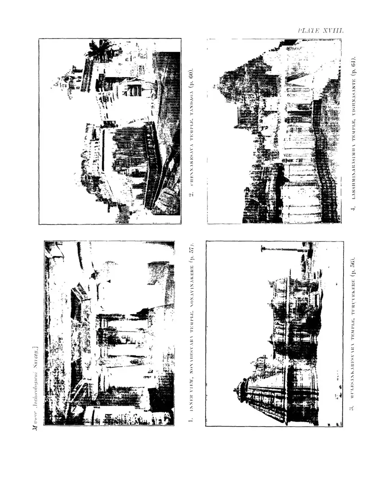
- INNER VIEW, NON ABESVARA TEMPLE, NONAVINAKERE (p. 57)
- CHENNAKESVARA TEMPLE, TANDAGA (p. 60)
- MULESANAKESVARA TEMPLE, TURQUENERE (p. 56)
- LAKSHINAKASIRMA TEMPLE, VIGHNANANEE (p. 64)
called the Kamathēśvara temple. But the villagers of the present generation know nothing about such reconstruction.
The structure, particularly the stone portion of the inside, is a small one, probably of about the Gaṅga or Chōla times. It has a garbhagrīha, an open vestibule and a navaraṅga having four low pillars whose cubical mouldings are connected by sixteen-sided shafts.
Images
In the navaraṅga are kept the following images :—
1. A seven-hooded cobra with its body beautifully curved up.
2. A Saptamātrikā panel.
3. A flat-headed linga with pītha—perhaps the old Kamathēśvara.
4. Vēṇu-Gopāla, about 5' high, of the usual Hoysala type, but heavily covered with wax and muck.
5. Sūrya—poorly carved.
6. Janārdana—also poorly carved, though perhaps an old image.
The temple is not of much architectural or historical importance.
Mallēśvara Temple
About two furlongs to the north of the Sangamēśvara or Hamsēśvara temple stands the temple of Mallēśvara called locally by the people as Kallēśvara. It is a typical Hoysala temple, though small in dimensions.
It has a garbhagrīha, about 5' square, an open vestibule, a navaraṅga of four pillars and a small porch borne on bell-shaped pillars. Its outer walls and stone tower are mostly intact, being held in place by the large quantity of earth thrown around it by a neighbouring water course. The outer walls are ornamented with pilasters. The parapet is also intact. The corners of the towers have, in later times, been surmounted by brick and mortar Nandis.
The navaraṅga ceilings have padma domes. The central ceiling, however, is raised on two sets of corner stones. At the back of the navaraṅga stand two towered niches whose original images have disappeared. An image of Gaṇapati and another of Bhairava are now kept in them. In the south-west corner of the navaraṅga stands a mutilated image of Shaṇmukha riding on a peacock. By its side is a dwarfish standing figure of Mādhava, holding gadā, chakra, śankha and padma. There are also a number of Nāga stones and a small Nandi.
The linga inside the garbhagrīha appears to have been much damaged by the action of water. It has a gnarled appearance.
A new Kannaṇa inscription of the Hoysala period was discovered to the south-east of the temple.
Part III: Study of Ancient Monuments and Sites › Tumkur DistrictVighnasante
Lakshmi-Narasimha Temple
Situation; History; General Description; Outer View; Porch. Navaranga; Ceilings; Images; The South Cell; North Cell. Main Cell
(Pl. XVIII, 3).
The original name of the place, now called Vighnasante, appears to have been Iganasante. It is a small village about two miles to the south-east of Noṇavinakere. It has four temples of which the largest and finest is that of Lakshmīnarasimha which is situated facing north on a height which was formerly the centre of the town.
Situation. As mentioned in the inscription standing to its north-east, it was constructed in 1286 A.D. by three brothers when Narasimha III, the Hoysala king, was ruling.
History. The temple is a typical high class trikūṭāchala of the Hoysala style (Pl. XIX) and has three cells, the west one of which only has a vestibule and a stone tower with several rows of turrets and figures rising one above the other.
General description. The navaranga is one of four pillars and has a porch of one ankaṇa in front on the north whose benches and railings have almost disappeared. To further north are the basements on which must have stood formerly the upparige or mahādvāra. The temple is generally cross-shaped, the cells having indented square plans.
The lower part of the outer wall is horizontally cut up into five cornices one of which bears a scroll frieze, another a row of vase-shaped carvings with beaded pendants below, and a third, a row of well carved makara faces interspersed with flowers with beaded or floral hangings as in the Pārṣvanātha Basti at Haļebīd.
The upper wall has a right-angled pilaster in each corner with a large relievo padma in each interspace. The cornice is tastefully carved with a row of vases with horse-shoe arches, another row of makara and a third row of tower śikharas with kīrtimukhas and lion heads—all tastefully carved. In the last row are interspersed a series of niches containing seated Yakshas or figures of gods like Bhairava (north-east) and Lakshmī-Nārāyaṇa and Narasimha (east).
The tower is one of exquisite workmanship, its floral carvings being wonderful. It has four rows of towers with a projection over the vestibule on whose front face is a large kīrtimukha bearing an image of Garuḍa. The tower has the following carvings:—
East—
Ugra-Narasimha.
Gōvardhanadhāri.
Dancing Pārvatī.
Nārāyaṇa.
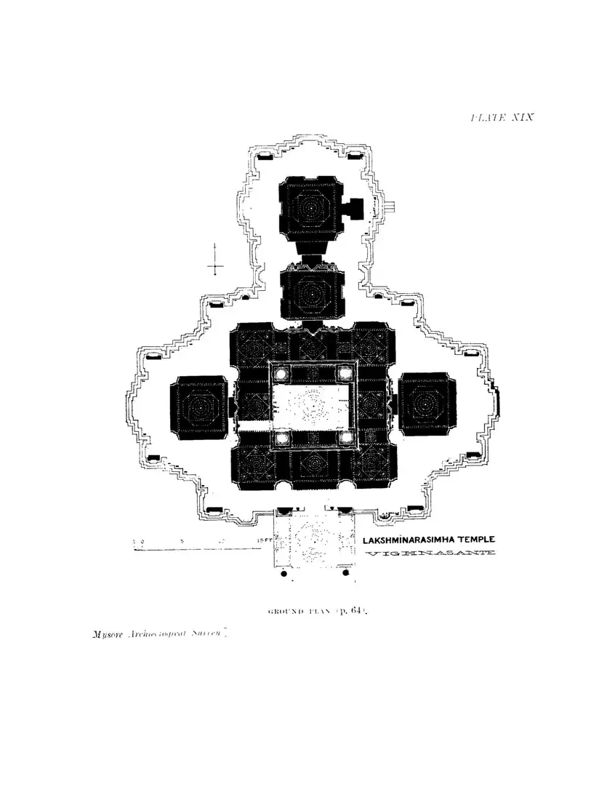
- GROUND PLAN (p. 64)
Cited in the text: p. 64 ↩
South—
Yōgānarasimha.
Vāmana.
Dancing Šiva.
Mādhava.
West—
Kāļingamardana.
Vēņugōpāla.
Dancing Lakshmī.
Vishnu standing—holds chakra, gada, padma and šankha.
Back of west cell—
Amaranārāyaṇa.
West of porch—
Mahishāsuramardinī.
The temple is entered by a porch which is richly carved with floral scrolls and beaded hangings. It is borne on two elaborately carved pillars of the usual bell-shaped Hoysaļa style with more than the usual number of incut transverse lines. The bench and railings of the porch have disappeared. The abacus has a jewelled band on its face with lion faces on its lower face. In the corners of the brackets lions are rearing upon the heads of elephants. The porch ceiling has a deep dome of concentric circles with a lotus bud pendant rising above a row of turrets below which are the eight Dikpālakas with lions, peacocks, Gandharvas, Garuđa, etc., intervening. On the parapet wall of the porch is the figure of dancing Gaṇesa.
The navaranga doorway which is much covered over with limewash has Vēņugōpāla on the lintel and Yōgā-Narasimha on the architrave with a cornice bearing hanging lotus buds between them.
The navaranga which is about 20 feet square has four pillars closely resembling those of the porch, though the carvings are covered over with limewash and wax. The wall pilasters are nearly all indented square in shape, while each beam has on its sides a scroll band with a band of beaded hangings and a row of flowers above.
The ceilings which rise on cornice stones which have well-carved lion faces are all simple padma domes except the central one which is mostly similar to the one in the porch, having the Dikpālakas in the gallery and the ribbed dome of concentric circles above. On the corner stones are carved the Dikpālakas with their retinue of soldiers carrying their weapons.
Ceilings.
9
Against the south wall of the navaraṅga are placed two finely carved images, one of Vidyā Gaṇapati and another of Mahishāsuramardin (Pl. XX, 2) showing the goddess supporting herself on the lef
Images. (Pl. XX, 2) showing the goddess supporting herself on the lef leg and treading on the buffalo with her right leg and fighting the anthropoid demon with a spear which is broken. She holds : dagger (broken) piercing demon, prayōga-chakra, drawing an arrow from quiver, bell with triśūla (handle broken), buckler, strung bow, and holding demon's head. The buffalo is well carved.
The south and north cells have no vestibules. The south cell doorway has dvārapālas on the jambs with Vēnugōpāla on the lintel.
The south cell. In the cell on a Garuđa pedestal stands a beautiful image of Vēnugōpāla, 5 feet high, standing in tribhaṅga with his right leg crossing over the other leg and the two hands playing on the flute (Pl. XX, 3). He wears a kirīṭa, necklets, anklets, bracelets, armlets, garlands, and girdles with hangings. Over his head spreads the tamāla tree. On the jambs of the tōraṇa stand his consorts with chāmara bearers. The cowherds, cows, gods and ṛishis listen intently, while the chakra and gadā are carved to his right and the śankha and padma to his left. The ten avatāras are carved on the fringe above.
The north cell which has Yōgānarasimha on the lintel has a well-carved Lakshmīnarasimha group with a serpentine tōraṇa above
North cell. and Prahlāda, a kalasa looking exactly like a tea-kettle, and an elephant with uplifted head below. The god sits in sukhāsana holding chakra, padma, gadā and śankha, with Lakshmī seated on his left lap. This god gives the temple his name, perhaps because Narasimha was the reigning king at that time.
The vestibule has on the lintel a Lakshmī-Nārāyaṇa group, while the lintel of the garbhagrīha doorway has Gajalakshmī. In the main
Main cell. cell stands a fine image (5' high) of Kēśava supported by a consort on each side, having the serpentine scroll with lion face and the ten avatāras on the tōraṇa (Pl. XXI, 1). The image has been well made and represents a slim and tall form, perhaps because it is in the uttamī duśatāla . The face particularly has beauty combined with dignity. The cell has in the west wall a small niche useful as a safe.
Between the porch and the remains of the mahādvāra are two green stone elephants in vigorously moving attitudes. There are warriors marching along with them.
The Bālahngēśvara Temple
To the north-north-east of the Lakshmīnarasimha temple stands, facing east, the rather plain looking soapstone temple of Bālalingēšvara to the north-east of the village and close to a water-
General View
Tower; Inner View
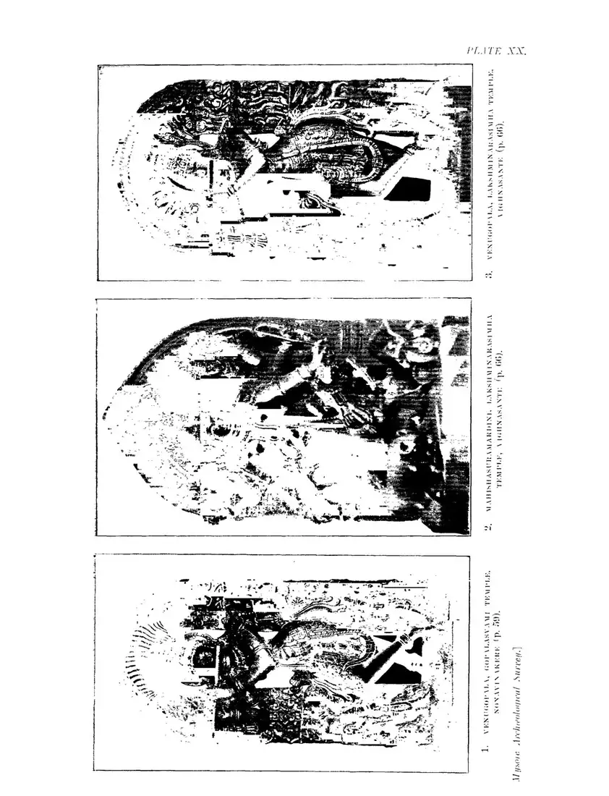
- VENÇOGOPALA, GOPALASYAMI TEMPLE NONAVINÄERIE (p. 59)
- MAHDISHUTEAMARDINE, LAKSHMİNARASIMHA TEMPLE, VIGHNASANTE (p. 66)
- VENÇOGOPALA, LAKSHMİNARASIMHA TEMPLE VIGHNASANTE (p. 66)
its outer view it is rather plain, having unsculptured plain walls except near the sukhanāsi where cruciform pilasters and rosettes are to be seen.
The tower is of stepped pyramid design with seven cornices. On each face of the śikhara is a kīrtimukha with a standing Śaiva deity.
Tower. Over the projection on the sukhanāsi is a well-carved Salā group with the hero's head bent back in his effort to pull the lion's tongue out and pierce the sword in.
Inner view. The inner view shows that the temple must have originally consisted of a garbhagrīha with a small linga, a vestibule with a shallow lotus ceiling and a navaraṅga of nine squares borne on four cylindrical pillars with extra cells on the north and south.
The original deities of these latter have now been lost. But in the north cell there are now kept the following images :—
Ganēśa,
Two Vīrabhadraś,
One Kēśava,
Several Nāga stones.
To this structure appears to have been added, in perhaps the Hoysalā or early Vijayanagar period, another navaraṅga of soapstone with cubical pillars having octagonal shafts and ornamental necks. Perhaps when this extension took place, the front wall of the original navaraṅga was removed and was substituted by two oblong pillars, thus making the navaraṅga a long one with ten pillars. This hall has a doorway to the east and one to the south.
The temple is unimportant.
Bhairava Temple
General Description; Images
The Bōredēva or Bhairava temple is now a dilapidated plain shrine consisting of
General description. a garbhagrīha and mukhamaṇṭapa only.
In the garbhagrīha are placed the following figures :—
1. Nāga.
Images. 2. Umāmahēśvara—on a prostrate human figure.
The god holds sword, drum, trident and bowl. The serpentine tōraṇa with simhalalāṭa, is perhaps of the 13th or 14th century.
3. Bhairava—1½ feet high—probably a Hoysalā figure of the 14th century.
4. Nāga stone.
5. Another Bhairava.
The temple is in a very bad condition and the villagers are proposing to rebuild it.
In front of the temple there is a self-immolation stone depicting men offering their heads in sacrifice.
Part III: Study of Ancient Monuments and Sites › Tumkur District › VighnasanteBanaśānkarī Temple
Image
No heading in the body: this section starts at its printed page (68).
The Banašankarī temple is directly to the north of the village and outside in the fields.
The temple is small and dilapidated. It consists of a garbhagrīha and a vestibule. The image is of soapstone. There is a lion on the pedestal. The image is about 3 feet high. The goddess is seated in sukhāsana and had originally eight arms holding sword and rosary, cobra, trident (broken), buckler and drum. Around the halo of the goddess is a row of jewels circumscribed by a scroll arch which is now broken. The bench on which the goddess is seated has a human face and under her left thigh, she wears a beaded drapery. The image is much mutilated. From a sculptural point of view the contrast between her large breast and her small waist is noticeable. The image may be of the Hoysaļa or some earlier period.
It is said that it is the patron goddess of the weavers.
Part III: Study of Ancient Monuments and SitesHassan District
Agrahāra Beļguh
Kēśavēśvara (Betļēśvara) Temple
General Description; Outer View; Porch; Navaranga; Vestibule; Mam Garbhagriha. Kēśava; East Doorway of Navaraṅga; Later extension
The temple is popularly known as the Beţţēsvara temple. It was built in 1210 A.D. by Kēsavadanṇāyaka, an officer of Ballāļa II. Hence in the inscriptions it is called the Kēsavēšvara temple. It is the largest of the temples in the village and stands to the north-east close to the tank which is called in the inscriptions Kēsavasamudra. The temple has been described in M. A. R., 1929. A fuller description is here attempted.
It is large in proportions and well carved in the inside. It has a main cell for Šiva with a vestibule, a minor cell on the north for Kēsava,
General description. a large navaranga of four pillars with a porch on the south and a cross-shaped mukhamaṇtapa with a cell on the north and another in the east and a porch on the south. Thus from the south the temple appears to have two porches. The mahādvāra which is a pavilion of four round pillars, is also on the south.
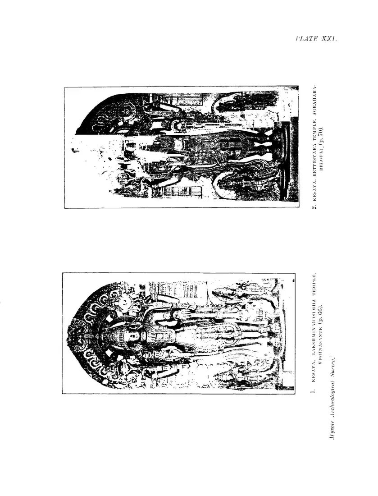
- KESAYA, LAKSHDIN ARASMIHA TEMPLE, VIGHNASANTE (p. 66)
- KESAYA, BETTESNYARA TEMPLE, AGRITAHARA-BELGUDI (p. 70)
The temple appears to have been built on a high platform whose remains are almost buried in the earth. The lower part of the outer wall has an unusually large number of eight cornices, one of which has the uncarved oblong and cross-shaped mouldings meant for makara heads. The upper part of the wall is decorated with square planned pilasters interspersed with well-designed large indented square pilasters.
Above the cornice the parapet towers are mostly unworked. The brick towers over the two cells are made up of flat thin bricks of about 9"×6"×2" and appear to date from the late Vijayanagar times.
The main temple is entered by a porch in front of which are two small platforms intended to receive either elephants or small turrets.
Porch. The porch has a large bench on each side with slanting railings whose faces are cut up by bell-shaped pilasters with rearing lions and oblong flowers in the interspaces. The pillars of the porch are cylindrical while the pilasters at the back are of the indented square plan. The ceiling is flat with a large padma. The mouldings of the corner stones are uncarved, On each side of the porch against the wall of the main temple is a large inscription slab one of which has a panel of Šiva in Kailāsa and the other of Kēšava with Lakshmī and Garuđa. Both of them contain portions of the same inscription.
E. C. V. Chennarāyapatṇa Nos. 243-45.
The navaranga doorway whose jambs have well-carved Šaiva dvārapālas and star-shaped pilasters has on the lintel a Tāṇđavēšvara group. The navaranga which is large and roomy is about 26 feet square and equal to the dimensions of the navaranga of the Harihara temple. Its four large pillars are bell-shaped and the pilasters are well designed in indented square shape. The ceilings of the navaranga which rise upon three sets of corner stones are variedly designed with shallow padma domes except the central one which is about 4 feet deep. Above the corner stones ornamented with lion faces and the images of the Dikpālas, stands a circle of sixteen turrets. Above there is a ribbed dome with three concentric circles and a pendant bud.
Inside the navaranga are kept a number of finely worked pañchāyatana images as follows:—
1. Seated Sarasvatī (rosary, goad, pāśa and pustaka). A fine image with a serpentine tōraṇa.
2. Gaṇēśa—a fine image with the belly and the left toe damaged.
3. Blank lion pedestal whose Mahishāsuramardinī has been removed.
4. Shaṇmukha riding on a stout-necked peacock the feathers of which are finely carved.
5. Bhairava—seated in sukhāsana with ringletty hair. It does not seem to have belonged originally to this temple, since it is of much smaller size.
6. Durgā—seated in sukhāsana on a lion pedestal, holding sword, pāśa, goad and bowl and having phālāksha. A fine figure published in M. A. R., 1929.
7. Sūrya's pedestal of seven horses—the image is missing.
8. Saptamātrikā panel having a finely worked set of the Seven Holy Mothers in this order—Gaṇēśa; Brāhmī—a female figure with bearded faces; Vīrabhadra with vīna; Māhēśvarī; Vaishṇavī with the symbols as in Nārāyaṇa (śankha padma, gadā and chakra); Vārāhī (sword, blank, buckler and book); Indrāṇī (abhaya' vajra, ankuśa and dāna); Kaumārī (bud, rosary, fruit, bud); Chāmuṇdā (sword' trident, drum, bowl) skeleton-bodied and with large fangs showing and having the third eye.
The doorway of the vestibule of the main shrine has jambs bearing the dvārapālas and with star-shaped indented pilasters. The lintel panel is exceedingly well-worked and represents the durbār of Umā-Mahēśvara seated in sukhāsana and attended by Nandi, Gaṇēśa, Brahma, Shaṇmukha, Vishṇu and the celestial nymphs. Above the lintel cornice is a series of nine towers, the central one of which is a fine towered pavilion of three storeys. The vestibule which is about 10' \times 10' has a domed ceiling of concentric circles.
Vestibule.
The garbhagrīha doorway has well-worked dvārapālas with a fine Tāṇḍavēśvara group on the lintel. The garbhagrīha ceiling is flat and has nine panels, each having a lotus. Under it on a pedestal, about three feet high, stands a medium-sized linga, about one foot in diameter.
Main garbhagrīha.
The Kēśava image standing in samabhaṅga in the minor cell on the north is about 5\frac{1}{2}' high including its tōraṇa (Pl. XXI, 2). It is exceedingly well carved with luxuriant ornamentation and, in its features, reminds us of the Kappe Chennigarāya image at Bēlūr.
Kesava.
The east doorway of the navaraṅga whose lintel is uncarved has on each side an inscription slab with uncarved top panel. The north slab has only one line which reads: "Śrīmatu pratāpa chakravarti Hoysaṭa Śrī Virasōmēśvara," and stops in the middle, thus showing that the construction of the temple was interrupted suddenly. The well-worked part of the temple ends with this doorway.
East doorway of navaranga.
To its east extends a cross or pond-shaped large pavilion with a stone bench running around it, which is fringed by a slanting railing as in the Harihara temple at Harihar. The outer pillars are sixteen-sided but unfinished, while the four inner pillars of the bell-shaped kind are finished and polished. The ceilings are all flat except the one
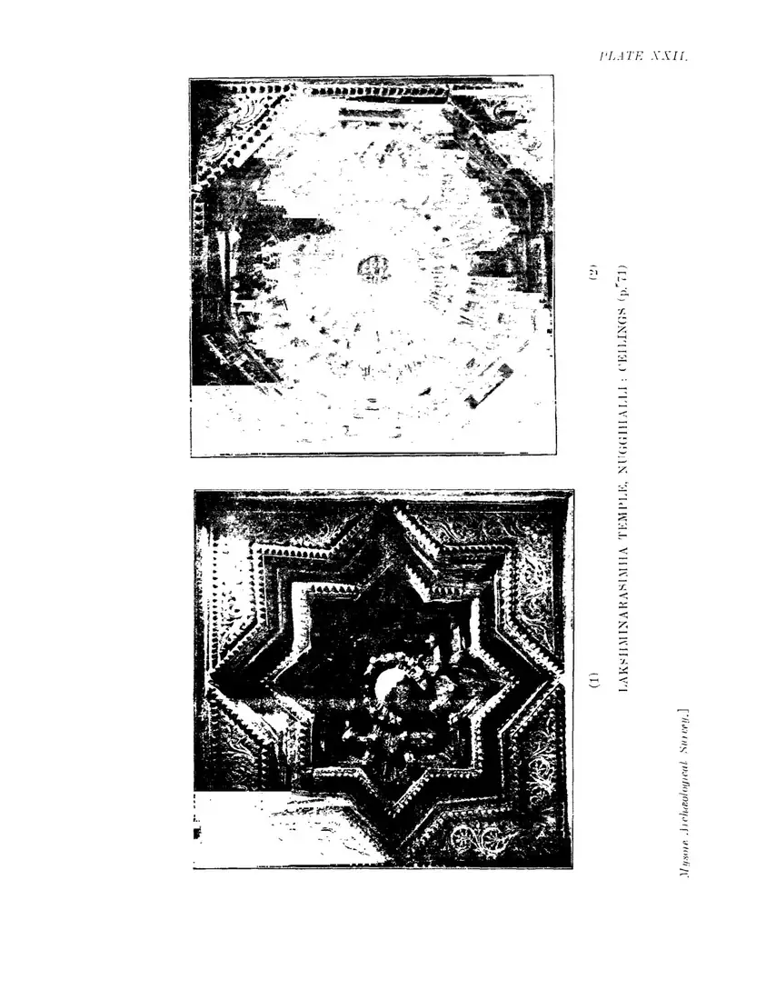
- (5) LAKSHIMINARASIMIHA TEMPLE, NUGGIHALLI: CEILNGS (p. 77)
Cited in the text: p. 71 ↩
in the westernmost square which has a large shallow padma. The northern añkaña of the pavilion is regularly built as a cell, but it has neither an image nor a pedestal. The eastern añkaña is converted into a cell open on the west and houses a finely ornamented bull, about 4\frac{1}{2}' high.
Sōmēśvara Temple
General Description
The SômĚšvara temple is situated to the east of the village by the side of the old mud fort wall. The original temple, according to General description. inscription E. C. V. Chennarāyapatña No. 246, was built in about 1154 A. D. But it appears to have been completely reconstructed in the 17th century. Only the following old materials are found: the vestibule doorway with the perforated screens on the jambs, the fine bull in the navaranga, the fragmentary Saptamātrikā panel with only five of the Mothers and the pedestal and the linga in the cell. The temple has been overwhelmed by and submerged into the earth thrown around it when the fort wall was built in the Vijayanagar days.
Amritēśvara Temple
The AmritĚšvara temple is completely in ruins and architecturally unimportant. It was built in about 1134 A. D. as evidenced by the inscription (Ep. Car., V, Cn. 248) standing to the north of the ruins. One of the inscriptions mentions the god as Mūlasthāna-GangĚšvara.
The linga among the ruins is small and together with the pedestal is about one foot high. The garbhagriha doorway has a Gajalakshmi lintel which bears also the inscription E. C. V. Cn., 247.
Part III: Study of Ancient Monuments and Sites › Hassan DistrictNuggihalli
Lakshmī-Narasimha Temple
Two of the several beautifully worked ceilings in the navaranga of the Lakshmi-Narasimha Temple at Nuggihalli are illustrated in (Pl. XXII, 1 and 2).
Jayagonđēśvara Temple on Jōgināthaguđđa
General Description; History. Navaraṅga; Liñga; Virabhadra; Bhakta Images
About a mile to the north of Nuggihalli, facing the Tiptūr road stands a prominent hill with one great rock rising up to a height of about 150 feet.
On the summit stands a temple made up of well-dressed and fitted large granite blocks. It consists of a navaranga to which are attached on the west two open vestibules leading into square cells. General description. Each of the cells ( 6' \times 6' ) is surmounted by a stepped pyramid-shaped tower of brick and mortar, the bricks being 10'' \times 7'' \times 2'' which appears to have been the size of the Hoysala bricks.
To the east of the navaranga entrance stands a square pillar with sixteen-fluted shaft supporting a soapstone statue of Nandi.
To the south-east of the temple facing north stands the inscription of Vishnuvardhana bearing E. C. V, Cn. No. 260. To its left was discovered a vīragal of soapstone bearing a faintly visible inscription in Kannađa. From the inscription of Vishnuvardhana dated in 1121 A. D., it is found that he made grants of land to the linga known as Jayagonđēsvara.
On the jambs of the navaranga doorway are carved padma, triple-rudrāksha and floral designs. The hall which is about 30 feet long by 15 feet broad is borne on two sets of four cylindrical pillars supporting the ceilings which have shallow padmas like the ceilings of the vestibules. In the navaranga are kept an intertwined nāga group and a headless image of Śiva as Kāpāli with a dog and bhetālas at his sides.
The north cell contains a small linga on a low pedestal with a well carved Nandi facing it in the vestibule.
Linga.
The south cell has an image of Vīrabhadra (3' high) on a low pedestal. The image is moderately worked and holds sword, trident, drum and shield. On the tōraṇa is a serpentine scroll.
On the north-east of the temple there is a small shrine of granite, inside which is a carved stone group of a bhakta couple, the husband wearing kulāvi , necklet. yajñōpavita, short dhoti, anklets and bracelets and wooden sandals and holding uplifted sword in right hand, while his left hand is placed on his wife's shoulder. The lady standing to his left with the upper body bare, wears large round earrings, garland, short sari , anklets and armlets, bracelets and wooden sandals. Her right hand holds the stem of a lotus which is broken off. Her left hand is also broken. Her hair is dressed with a semi-circular floral ornament set upright. The couple perhaps represent some important local ruler and his wife of the mid-Vijayanagar times, who very probably made grants to the temple.
Part III: Study of Ancient Monuments and Sites › Hassan DistrictDinđagūr
A note on the two temples at Dindagūr is published in M.A.R., 1930.
The place is an ancient agrahara called Mallikārjunapura. It was founded by Pandita Danđanātha. The Kēśava temple is built in the centre of the old village, while the Īśvara temple is built to its north-east. A little distance from the latter is the tank. Both the temples seem apparently to have been built at the same time, since both of them are similar in plan.
Ancient Agrahāra Town
Kēśava Temple
General Description; Outer View; Porch; Navaraṅga
The Kēšava temple faces east and has a garbhagrīha, a vestibule, a navaranga a porch and a mahādvāra. The last has a porch on the outside. The old mahādvāra has been recently repaired. The temple has been raised on a floating foundation. The garbhagrīha and the navaranga are both square-shaped with indented and flattened sides.
Outer view. The basement cornices are six in number, of which the fifth from the bottom has its mouldings unworked. Four of the remaining cornices, excluding the one at the bottom, have dentil projections. The outer walls are plain except for the right-angled pilasters which appear at the indentations and for the pond-shaped pilasters which appear on the outer walls of the navaranga on the south and north.
The eaves are slightly sloping with dentil projections on top. The parapet contains unworked kīrtimukha and other mouldings.
The tower consists of three tiers of turrets having, like the parapet, unworked mouldings. There is a projection over the vestibule whose cornices also have unworked mouldings. A stone finial surmounts the tower.
Porch. The flight of steps leading to the porch may have had originally elephants on either side. The porch is borne on two cylindrical potstone pillars and has stone benches on the south and north. The ceiling of the porch is designed like three concentric squares and has a padma in the centre.
Navaranga. The navaranga doorway has a series of five turrets on the lintel above which is a Vēnugōpāla group. The pilasters on either side of the doorway are pond-shaped. The central ankāna of the navaranga is borne on four pillars of the usual bell-shaped type. The ceilings are all square and somewhat deep with padma pendants hanging from the centre. But the central ceiling is more elaborately carved than the rest. The corner stones have carvings of kīrtimukhas and pendants on their under-surface and of the ashṭa-Dikpālakas on their front face. The oblong slabs above have the scroll, kīrtimukhas and pendant designs. Their front faces have Yakshas in the centre with rosettes carved on either side of them. In the centre of the ceiling there is a deep padma pendant, and kīrtimukha and pendant designs at the corners.
In the navaranga are placed several nāga stones, one image of Gaṇapati in a niche of brick and mortar, and another of Hanumān in another niche of brick and mortar. In the north-west corner of the navaranga is built a small shrine of brick and mortar to house the utsava-vigrahas of the Ēšvara temple.
10
Vestibule and Garbhagrīha
No heading in the body: this section starts at its printed page (74).
The lintel of the vestibule doorway is plain. The ceiling of the vestibule has also a padma pendant. In the vestibule are kept the vestibule and garbha-griha. The metallic utsava-vigrahas of the temple. Inside the garbha-griha stands on a Garuđa pedestal the image of Kēšava (Pl. XXIV, 1). It is exuberantly carved, though its features, particularly of the face, are not very elegant. There are the ten avatāras carved on the prabhāvaļi.
Mallēśvara Temple
General Description; Images
(Pl. XXV. 2).
The Mallēšvara temple is situated about a hundred yards to the north-east of the Kēšava temple. In plan and execution, it is similar to the Kēšava temple. But the porch is absent. The navaraṅga ceiling in front of the vestibule doorway is opened out and a ventilator has been put in. The linga inside the garbhagriha is about two feet high including the pedestal.
Images. In the navaraṅga are kept the following images :—
1. Rude Nāga stone.
2. Rude Ganēša.
3. Intertwining Nāgas.
4. Another Ganēša.
5. Another Nāga stone.
6. Peacock pedestal.
7. A two-handed goddess. The image is of potstone and is about 3\frac{1}{2}' high including the tōraṇa. The two hands of the goddess are broken. The image is well worked. Unfortunately the face is disfigured and covered over with muck. On the tōraṇa are the floral scroll, the kīrtimukha, two chāmaras, a chakra, a šankha, a sword and a buckler. The image is perhaps a Vaishṇavī or Pārvatī standing.
Basavēśvara Temple
To the west of the Mallēšvara temple is the modern temple of Basavēšvara which is architecturally unimportant.
Part III: Study of Ancient Monuments and Sites › Hassan DistrictĀnekere
This is a village about four miles west of Chemarāyapaṭṇa. It has several temples dedicated to Šambhuliṅgēšvara, Kēšava, etc. The Kēšava temple is situated in the centre of the town.
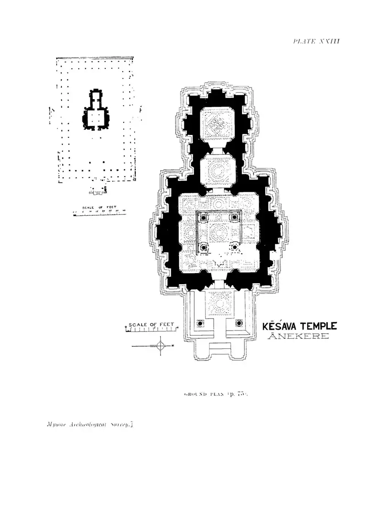
- GROUND PLAN (p. 754
The Kēśava Temple
General Description; Mahādṛāra. Verandah; outer view of temple. Porch
(Pl. XXV, 1).
The Kēšava temple stands on a high platform with stone-built sides. It contains a garbhagrīha, a closed vestibule, a navaranga of four lathe-turned pillars and a porch, an old prākāra of soapstone and a towerless mahādvāra which has a one-aňkaṇa porch both on the east and the west and had originally a complete prākāra wall of stone with a verandah running on inside (Pl. XXIII). The temple has much resemblance to that at Hullekere near Gaṇđasi.
General description. The soapstone mahādvāra which appears to have been rebuilt in the Vijayanagar days has for its eastern porch two bell-shaped lathe-turned pilasters with stone benches, of which the railings have disappeared. The porch ceiling is well designed having an octagon of corner stones bearing the Dikpālakas inset with a eight-pointed star, in the centre of which is a shallow lotus. The uncarved lintel has a later day inscription in Kannađa which reads Nartsim Devum .
The inner porch of the mahādvāra and the verandah which originally ran all round the temple and formerly housed the kitchen on the south-east has a row of necked cylindrical soapstone pillars with plain ceilings.
Since the structure was out of plumb on the south and west, it was pulled down about three years ago and a brick wall was constructed.
Verandah. The materials belonging to this verandah are all lying outside the temple and could well be utilised for rebuilding the verandah. On the south and north of this verandah there is a cell on each side, the north one being empty and the south one containing the damaged original image of Kēšava. Its nose is touched up and unnatural. It may be removed to a museum.
The temple itself has five cornices on the lower wall with one cornice bearing the blocks meant for receiving vases and makara heads.
Outer view of temple. The upper part of the wall has ornamental pilasters and no other carvings. The parapet above the cornice contains turrets whose blocks are uncarved. Similarly the tower has two uncarved rows of turrets and one carved row. It is surmounted by a beautifully shaped stone kalasa with an ornamental jewel band running around bearing lion heads in the four corners.
The platforms in front of the porch of the temple are devoid of their elephants.
Porch. The porch is intact and its domed ceiling which rises on an octagon bearing the Dikpālas has a sixteen-sided gallery which is inset with three concentric circles and has a lotus bud in the centre.
The navaraṅga doorway has Gajalakshmī on the lintel. The navaraṅga which is about twenty feet square has indented wall pilasters and four bell-shaped soapstone pillars. The ceilings, though not elaborate, are interestingly carved. They are from the east running clockwise :
(1) A square inset with an eight-pointed star with a padma pendant at the centre.
(2) An eight-pointed gallery with two inset concentric circles.
(3) An octagon with an inset circle.
(4) An octagon with an inset square inside which is an octagon with a padma.
West—
(5) A square inset with an octagon.
(6) Octagonal gallery inset with an octagon inside which is a circle.
(7) Square with eight-pointed star and padma pendant in the centre.
(8) An ornamental square with two concentric inset squares.
Central—
(9) On corner stones bearing the Dikpūlas is a sixteen-sided gallery with three concentric circles and a large sankha pendant.
On the vestibule doorway the dvārapūlas are carved. The lintel is not carved. The ceiling of the vestibule has a gallery shaped like a sixteen-pointed obtuse-angled star inset with three concentric circles. The garbhagrīha doorway has well carved dvārapālas on the jambs with a Gajalakshmi lintel. Above the lintel cornice is a row of five variously shaped turrets with Yakshas between them.
In the garbhagrīha on the old Garuđa pedestal stands the image installed about four years ago and carved by Mr. Siddhalingaswamy, sculptor of Mysore (Pl. XXIV. 2). On the pedestal is the inscription in Kannađa :
Garbhagrīha.
Šilpa Siddhānti Siddhalingasvāminā nirmitaḥ.
To some extent the sculptor has successfully imitated Hoysaļa work, particularly in the carving of the ornamentation which is profuse. But the ten avatāras on the prabhāvalī are absent, the kirīṭa is heavy and octagonal of the Vijiyanagar type, and the octagonal gadā has a ribbed head. The image is a good piece of work except for its fattish chubby face and rather large hands and feet.
VĪRABHADRA TEMPLE.
About a hundred and fifty yards to the north-east of the Kēsava temple stands a small temple of Vīrabhadra, a modern structure. It has a dentil corniced tower, a garbhagrīha and a vestibule.
The image of Vīrabhadra is of Vijayanagar workmanship. In the vestibule are kept the images of Mahishāsuramardinī, Gaṇēśa and Nandi.
TWIN TEMPLES.
To the south of the village to the east of the small tank bund stand two small but definitely Hoysala buildings, both indefinitely called by the villagers as Sōmēśvara temple.
They are twin temples of equal size built of soapstone and having stepped pyramid towers, lathe-turned pillars, domed central navaranga ceilings, perforated jambs, etc. The temples were
General description. probably built in honour of a husband and wife.
The temple on the south has a garbhagrīha, an open vestibule and a navaranga, while that on the north has a garbhagrīha, a closed vestibule, a navaranga with a cell on the north and its doorway to the south and a cylindrical pillared porch. In the navaranga of the temple on the north lie the images of a mutilated Gaṇēśa and a Mahishāsuramardinī, both evidently of the original pañchāyatana.
ŠAMBHULINGĒŠVARA TEMPLE.
About a mile and half to the north-north-west of Ānekere is a large tank, now dried up, near which is situated the Šambhulingēśvara
General description. temple which appears to belong to about the 12th century A.D. This structure consists of a square garbhagrīha, a closed vestibule and a square navaranga. The outside walls of the garbhagrīha have a square basement cornice and plain right-angled pilasters. The eaves are straight sided with dentil mouldings upwards at the corners. Above the eaves rises above the garbhagrīha the stepped pyramid stone tower consisting of eight tiers with dentil mouldings at intervals. The tower is surmounted by a stone kalaśa. The outside walls of the navaranga are plastered over and bespeak recent renovation with brick and mortar walls. But the old potstone spouts remain above. There is a stone projection over the vestibule.
The navaranga consists of nine ankañas. The four pillars of the central ankaṇa are of the usual bell-shaped type. The ceilings
Navaraṅga. Vestibule. Garbhagrīha
The vestibule doorway is plain. Inside the vestibule is kept a bigger Nandi. The vestibule ceiling has a lotus pendant and is somewhat deep. The lintel of the garbhagriha doorway has five turrets with padma medallions in between them. The pediment is uncarved. The pilasters are indented. Inside the garbhagriha is a ow linga with pāni-baṭlu, about one foot high.
In front of the temple are several nāga stones and a mutilated figure. Against the outer walls are placed two vīragals with no inscriptions on them.
Virabhadra Temple
Part III: Study of Ancient Monuments and Sites › Hassan District › ĀnekereTwin Temples
General Description
Śambhuliṅgēśvara Temple
General Description; Navaraṅga
Part III: Study of Ancient Monuments and Sites › Hassan DistrictChennaīṛyapatna
The taluk town of Chennarāyapatna is known in the Hoysaṭa inscriptions as Koṭatūru and was named Amṛitanāthapura.
The Place
Chennakēśava Temple
General Description and History. Outer View; Navaranga
The original temple of Chennakēśava had a garbhagriha with a flat ceiling, a vestibule with a padma ceiling, a navaraṅga of nine squares (20' × 20') and a porch of two bell-shaped round pillars. This original porch appears to have been extended during the Vijayanagar period into a mukhamanṭapa of three ankaṇas, the latter with cubical tapering pillars having sixteen-fluted pillars, when a mahudvāra of plain pillars without a gōpura and with a compound wall of rubble stones, and a fine garudāgambha with a sixteen-fluted tapering shaft, were added.
In its outer aspect, the temple, though of soapstone, is indented square in form with rather plain cornices. walls and parapet towers.
Outer view. The original tower of soapstone is intact and also unworked.
The ceilings in the navaraṅga are deep domes having mostly concentric circles over circular or sixteen-sided galleries except the west one.
Navaranga. which is octagonal over a square and the north one which has an eight-pointed star set inside a square. The central ceiling is a deep dome with the Dikpālas, a circular gallery, concentric rafters and a conch pendant. The navaraṅga pillars are bell-shaped. In the navaraṅga are kept the images of Raṅganātha and Kāliṅgamardana, both poor class sculptures of the Pāliegār times.
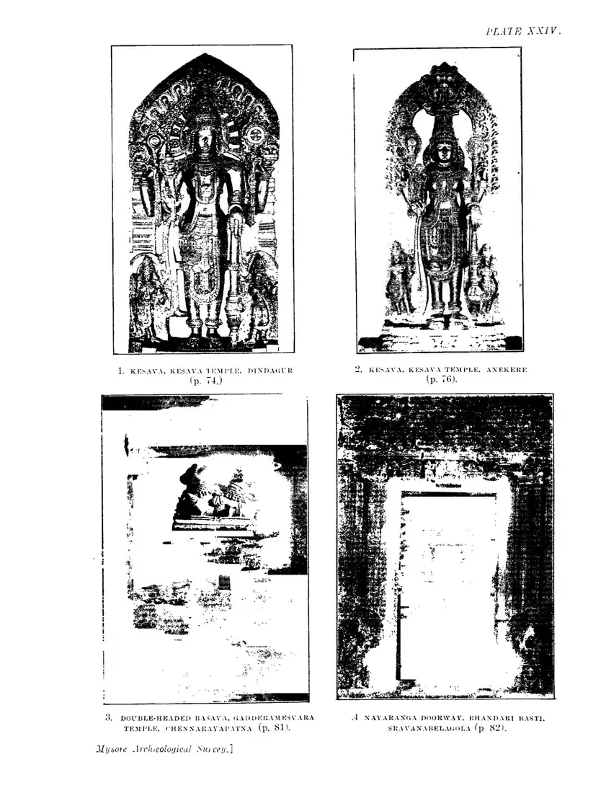
- KESAVA, KESAVA TEMPLE. DINDAGUR (p. 74)
- KESAVA, KESAVA TEMPLE. ANEKERE (p. 76)
- DOUBLE-HEADED BASAVA, GADDERAMESVARA TEMPLE, CHENNARAYAPATNA (p. 81)
- NAVARANGA DOORWAY, BHANDARI BASTI SRAVANABELAGOLA (p. 82)
The image in the garbhagrīha does not appear to be the original Hoysaļa image.
Part III: Study of Ancient Monuments and Sites › Hassan District › ChennaīṛyapatnaMain Image
Chandraśĉkhara Temple
General Description
The Chandrašēkhara (Rāmēšvara) temple which is about a hundred yards south-east of the Chennakēšava temple is a granite stone structure
General description. of the Vijayanagar period in whose garbhagrīha stands a six-foot high image of Chandrašēkhara (abhaya, axe, spear, and dāna). In the vestibule there are : a Gaṇēsa image and an inscription (E.C. V, No. Cn. 156). On either side of the vestibule doorway there are two bhakta images instead of the dvārapālas. The Nandi's face is a well worked one. - In the south-west and north-west corners of the vestibule are two cells containing two Vijayanagar type stone images of Bhairava and Pārvatī while in the navaraṅga are the images of Virabhadra and Janārdana.
The temple is not architecturally important.
An image of Nandivāhanamūrti is kept against the wall of the house adjoining the temple.
Part III: Study of Ancient Monuments and Sites › Hassan DistrictKalyāṇi
Outside the north fort gate of the old town is a fine kalyāñi about 50" × 50' with the steps well built of stone. On its west side are a
Images
1. Gaṇēsa.
2. Nāga.
3. Lakshmīnārāyaṇa.
4. Pārvatī.
5. A small figure placed on a large Hoysaļa simhapītha.
6. Chandra.
7. Vishṇu on Garuđa.
8. Pārvatī in imitation of Hoysaļa workmanship, but really of the Pālļegār period.
9. Kōdaṇđarāma.
10. Vāmana.
11. Arjuna performing penance.
12. Narasimha.
13. Šivaliņga.
14. Shaņmukha on peacock.
15. Nandi.
Śitēśvara Temple
History. Śīva's Pāda; Volagere Amma
To the north-east of the town near the tank stands a small soapstone temple of Sātēšvara, to the south-east of which are standing two inscriptions (E. C. V, No. Cn. 161 of 1182 A.D. and a vīragal). The bell-shaped navaraņga pillars, the perforated screens of the vestibule doorway, etc., mark the temple as a definitely Hoysaļa structure, though not one of any importance. In the inscription the liņga of the temple is called Šāntalēšvara, and appears to have been set up in memory of Sātavve, the wife of Daņdanāyaka Māchiah.
In the navaraņga of the Sātēšvara temple are kept the images of Ganēša, Nandi and Kēšava which are not of much sculptural value.
Opposite to the doorway of the Sātēšvara temple is an old soapstone panel containing (Bhairava's) Šiva's pādas surrounded by cobras, beheaded animals and men.
Siva's Pada.
To the north-east of the temple and close to it is a Pālļegār period structure dedicated to Durgā as Volagere Ammā.
Volagere Amma.
Gadde-Rāmēśvara Temple
General Description; Navaraṅga; Vestibule and Garbhagrīha; Mukhamaṇtapa. Double-headed Basava
About a mile to the south-east of the town just where the irrigated lands commence, stands the temple of Gadde-Rāmēšvara.
It appears to have been built in two stages. The original temple is a very simple small Hoysaļa structure of soapstone with a stepped pyramid tower of eight dentil cornices, a stone šikhara and an ornamental stone kalaša. In front of the tower formerly stood the Saļa group, whose mutilated lion is now in the yard in front of the temple. The walls of soapstone are cut up by right-angled plain pilasters and the plan is squarish, the garbhagrīha and vestibule being smaller than the navaraņga.
The original navaraņga doorway is only 4' × 2' and has an uncarved lintel. In the navaraņga which is 15' × 15' are four necked pillars with their cubical mouldings connected by octagonal shafts and wheel-shaped moulding round neck. The ceilings are plain except the central one which is a shallow padma dome. In the navaraņga are kept the images of Ganēša, Nandi, Shaņmukha, Janārdana and Sūrya, which appear to date from about 1600 A.D.
Navaranga.
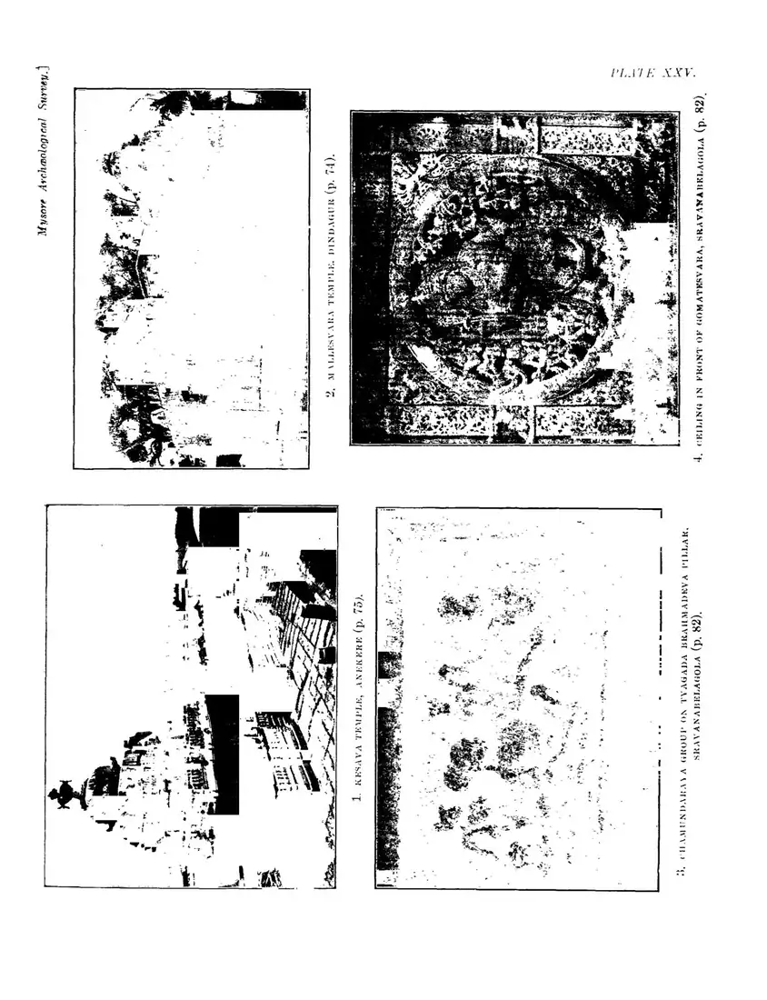
- KESAVA TEMPLE, ANEKERE (p. 75)
- MULESVARA TEMPLE, DINDAGUR (p. 74)
- CHAMUNDARAYA GROUP ON TYAGADA BRAHMADEVA PILIAR. SRAVAN BELAGOLA (p. 82)
- CEILING IN FRONT OF GOMATEVARA, SRAVAN BELAGOLA (p. 82)
The vestibule doorway, whose lintel also is uncarved has kalaśas on the jambs and perforated screens. The vestibule and garbhagriha ceilings have shallow padmas and the linga is a round-headed one on a low piṭha.
Vestibule and garbhagriha. To this original Hoysala temple were added in the 17th century a granite mukhamanṭapa of three ankaṇas with octagonal pillars having cubical mouldings with low relievo carvings. One of the latter shows the Gaṇdabhēruṇda bird holding elephants in its beaks.
Mukhamantapa. In the front yard of the temple is a manṭapa of granite with a brick tower, under which on a pillar of soapstone is a Basava with a head to east and another to west. (Pl. XXIV, 3) Two brick and mortar Basavas of large size have been set up, one at the place where Sala was originally, and the other on the mahādvāra.
Part III: Study of Ancient Monuments and Sites › Hassan DistrictHirisāve
Kēśava Temple
The Kēśava temple is a late Hoysala building of granite with soapstone pilasters and doorways and granite outer walls. The temple has been entirely rebuilt recently, particularly its navaraṇga. The image of Kēśava is about five feet high on a Garuđa pedestal about one foot high. The image is a good specimen of the 14th century, though poorly worked, and on its drapery the Dravidian influence can be seen. The garbhagriha and vestibule doorways are Hoysala soapstone pieces. There are perforated windows on either side of the vestibule doorway.
Part III: Study of Ancient Monuments and Sites › Hassan DistrictGrīma
Chennakēśava Temple. Dharmēśvara Temple
A note on the Chennakēśava temple is published in the Mysore Archæological Report for 1917, page 9. The temple is not of much architectural value since only the outer wall and one pillar in the inner navaraṇga belong to the Hoysala period.
DHARMĚŠVARA TEMPLE.
This temple has been described in the Mysore Archæological Report for 1917, page 9. In the navaraṇga, the pillars and the central ceilings and the east doorway are original Hoysala pieces used in the more recent times while rebuilding the navaraṇga.
11
Sāntinātha Basti
History
This is an old temple of which the standing image of Śāntinātha (3' high) with an inscription on the pedestal stating that it was set up by History. Sumati Bhatṭārakar, and the old vestibule with perforated jambs and the seated Śāntinātha on the lintel are the only older parts of the temple. The rest of the temple which is of granite is of later days.
Architecturally the only important thing in the temple is its image with a fine serpentine prabhāvali.
An interesting point to note in Śāntigrāma is the fact that the worship of Jina, Śiva and Vishṇu all progressed during the time of the Hoysalas.
Virabhadra Temple
General Description and History; Navaraṅga; Images
This is a temple of the Hoysala period containing a garbhagriha, a vestibule and a navaranga of four bell-shaped pillars and a mukhamaṇtapa of three bell-shaped pillars. The heterogeneous nature of the walls suggests that these portions were rebuilt and repaired in the Vijayanagar days. The navaranga has a porch which was converted into a cell for housing Mahishāsuramardini now kept in the navaranga.
The navaranga has four bell-shaped pillars and several flat or shallow domed ceilings. Of these the central one is the most interesting. Navaranga. Rising on two sets of corner stones bearing the images of the Dikpālas and of dancers and rosettes is a flat ceiling divided into nine panels with Tāṇdavēsvara in the centre, Kumāra to the west, dancing Gaṇēśa to the east, Brahma to the north and Vishṇu to the south. The slab is damaged and has evidence of being recently reset and plaster-pointed.
In the vestibule and the garbhagriha are kept several images of Vīrabhadra, Nandi and other deities. The main image of Virabhadra appears to be of Vijayanagar period workmanship having shortish legs, large hands, etc. It is doubtful if this is the original Virabhadra of the Hoysala times.
The mahādvāra has been constructed of fine pilasters bearing turreted canopies brought from elsewhere.
Śravana-Bełagoła
The navaranga doorway of the Bhandāri Basti is very well carved and illustrated in Pl. XXIV, 4. The Tyāgada Brahmadēva pillar has an interesting panel of sculptures on its south base (Pl. XXV, 3). One of them represents Chāmuṇdarāya. The well executed ceiling in the verandah in front of the Gomaṭēsvara colossus is a beautiful piece of sculpture in soap-stone (Pl. XXV, 4). Two good views of the Gomaṭa colossus are illustrated in Pl. XXVI.
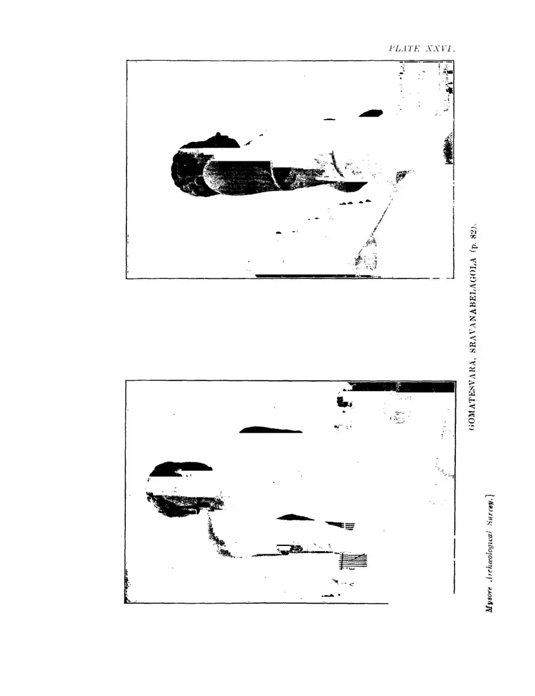
- GOMATESVARA, SRAVANABELAGOLA (p. 82)
Cited in the text: p. 82 ↩
Part III: Study of Ancient Monuments and SitesChitaldrug District
Māikonđa
Kēśava Temple; Obala-Narasimha Temple
Māikonđa is one of the hobli headquarters in the Dāvangere taluk and a Railway station on the Bangalore-Harihar line. There are two temples in the village, one of which is called the Kēśava temple and the other the Obala-Narasimha temple. The name 'Obala' is a corruption of Ahōbala.
KĒŠAVA TEMPLE.
The Kēśava temple is a modern structure of mud and country tiles. It is situated in the heart of the village. Inside the garbhagriha stands a rude black stone image, about 3½ feet high, of Vishṇu standing as Janārdana, though the god is locally called Kēśava. In the four hands are held padma, chakra, śankha and gadā and in addition to the gadā the left lower hand holds in the palm a mātaṅga fruit. The image and the prabhāvaļi are carved of the same stone. But the ten avatāras are absent from the prabhāvaļi which has instead creeper scroll ornamentation. The features of the image suggest that the workmanship is of the Vijayanagar period. the image may have been brought from elsewhere and set up here.
To the right side of the image is a linga which has been recently installed. The temple is a Muzrai institution and architecturally unimportant.
OBALA-NARASIMHA TEMPLE.
About half a mile to the south-east of the village is situated the dilapidated temple of Obala (or Ahōbala) Narasimha. The temple consists of a garbhagriha with a roughly shaped boulder in it which is called Udbhava-Narasimha, an open vestibule and a navaraṅga with a doorway to the east and another doorway on the south. The latter doorway has a tōraṇa in front with the tenkalai Śrīvaishnava caste mark. This gateway does not form part of the main structure and is evidently of a later date. The doorways have Gaja-Lakshmī figures on their lintels. In front of the southern doorway is a Garuđa pillar which, along with the tōraṇa, indicates that it was the main doorway of the temple. The outer walls are plain. The tower is a stepped pyramid with figures of Vishṇu at the neck.
The navaraṅga has four Draviđian square-shaped pillars which have on their cubical mouldings high relief figures of various gods, acrobats and mythological representations, among which the following may be noted :—
Gaṇēśa, Purushamṛiga, dancers (three in one), Mōhinī with mirror, a chief, Kaṇṇapa, Hanumān, bhakta, Kālinga, cow and linga, dancer, lion on makara, Bālakřishna on fours, acrobats (two wrestlers wheeling), bhakta, Hanumān and linga, Lakshmī-Nārāyana, Vīrabhadra, Yōgā-Narasimha, Rishi dancing, peacock with the head of an elephant, acrobats, Vishnu, Vēnugōpāla, Matsya incarnation and a seated figure of a chief.
The navaranga pilasters have the figures of Garuđa and Hanumān, lady riding on makara, gong-player, etc.
The central ceiling of the navaranga is raised on two sets of corner stones and has the figures of the ashta-Dikpālakas on the beams and a small lotus pendant pecked by four birds, in the centre. The occurrence of the birds suggests a parallel with the Kalyānamanṭapas at Nandi and Kolār. It is possible therefore that this temple may belong to the same period or to a slightly later one (C. 14th or 15th century).
Against the west wall of the navaranga is a well carved seven-hooded nāga stone.
On either side of the garbhagřiha doorway are the relief figures of bhaktas, perhaps representing those who built the temple.
Bulļāpūr
Temples
No heading in the body: this section starts at its printed page (84).
Bullāpur is a bechirāk village. At the northern end of the mound burying the village ruins, the Āñjanēya temple is situated. It is a structure of rubble masonry enshrining a 16th century relievo figure of Āñjanēya.
To the south of the temple and buried in the mound, is another temple. The pillars of its navaranga can be seen through an opening in the mound.
Part III: Study of Ancient Monuments and Sites › Chitaldrug DistrictIttige
Kari-Amma Temple
No heading in the body: this section starts at its printed page (84).
Ittige is another bechirāk village, about a mile and half to the north of Huchchavanahalli in the Māikoňda hobli. The temple of Kari-Amma is an 18th century structure. It contains a garbhagřiha with a relievo figure of Durgā and a front hall with six pillars having the cubical, octagonal and wheel mouldings. The outer walls of rubble stones have been mostly embedded in a mound. An inscription (dated Š. 1644) was discovered to the south of the temple.
Part III: Study of Ancient Monuments and Sites › Chitaldrug DistrictKođaganūr
Antiquity of the Place
The Kallēśvara Temple; Vishpū Temple; Hanumantēśvara Temple; Durgā Temple
No heading in the body: this section starts at its printed page (84).
Kodaganūr is a place of antiquity as can be seen from the inscription (E.C. XI, Dāvangere 152), which is dated in 976 A.D. There are Antiquity of the Place. several ancient temples in the place, which have all gone to ruins. The inscription No. Davangere 149 (1113 A.D.) refers to a Vishnu temple. An earlier inscription (Dg. 151 of 1101 A.D.) refers to the god Sōmēśvara. The ancient agrahāra town is also called the southern Ayyā-vole in the inscriptions.
THE KALLÉŠVARA TEMPLE.
The ancient Kalléšvara temple in the village has been entirely rebuilt in the modern period. Only the four square pillars in the navaranga now bespeak the antiquity of the temple. Inscriptions Dg. 149—152 stand to the east of the temple.
VISHNŮU TEMPLE.
The temple erected in the 12th century for the god Vishnu mentioned in Dg. 149, is no longer in existence. On the aśvattha-kaṭṭe in front of the village is a mutilated image with the tōraṇa carved of the same stone. The left lower hand of the image is on the kaṭi as in the images of Venkaṭēśa. It is possible that this image is of Vishnu referred to in the inscription.
HANUMANTĚŠVARA TEMPLE.
The Hanumantēšvara temple is a modern structure with a 17th century relievo of Hanumān in the striking attitude. To the right of the figure there is a niche in which are placed the images of a chief and his wife. Both the images are in the round. The chief wears a kirīta and holds in his left hand a conch. His feet are mutilated. The image of his wife, however, is intact. Though both the images have somewhat rude features, they appear to date from at least the 14th century and are worthy of being preserved in a museum.
In front of the temple is a tall pillar against which is placed a vīragal. The scene depicting the defence of the cows in the bottom panel of the vīragal is well executed. The cows stand to one side, while the hero fights with his bow and arrows his enemies who are mounted on horses and armed with spears.
DURGĀ TEMPLE.
In a nearby field to the south-east of the village is a small mound hidden in the fence. On it is the soapstone image of a seated Durgā. The image is worn out. The goddess wears a kirīta with the flames darting forth from behind her head. In the four hands are held sword, trident, đamaruga and cup.
An inscription at Dođđa-Māgađi (E. C. XI, Dāvangere 146) refers to the goddess ‘Banada-Šankarī’ of Kođaganūr. It is possible that the image above described is the one mentioned in the inscription. The image is very much like a Hoysaļa piece, though the inscription mentioning it is of 1518 A.D.
Malkandēvaru Temple
About three furlongs to the south-east of the village is situated the Malkandēvaru temple. It is a Šiva temple with its outer walls and parapet covered over by a mound of earth, so that only the interior is visible from the front. The temple consists of a garbhagriha, an open vestibule and a navaranga with four bell-shaped pillars. In the central añkaṇa is a nandi. The other images kept in the navaranga are Gaṇapati, Chandikēsvara and a nāga stone. The garbhagriha doorway has Gaja-Lakshmī on the lintel. All the ceilings in the temple are flat and plain except the central one which has a padma.
The temple is much dilapidated and architecturally unimportant, though belonging to about the 12th century A.D. It is possibly the Sōmēsvara temple mentioned in the inscription Dg. 151 of 1101 A.D.
Part III: Study of Ancient Monuments and Sites › Chitaldrug DistrictVađěrahaļļi
Kallēśvara Temple
The ancient Kallēsvara temple which appears to have stood some forty years ago is now a mound of ruins. Only the inscriptions that stood on the site are existing at present.
Part III: Study of Ancient Monuments and Sites › Chitaldrug DistrictŠankaranhaļļi
Raṅganāthasvāmi Temple
The village of Šañkaranahalīli is about two miles to the south-west of Māikoṇda. On a height in the village stands the temple of Raṅganāthasvāmi called Tiruvengalānātha in the inscription No. Dg. 148 of 1684 A.D.
The structure is exactly like the Óbalā Narasimhasvāmi temple at Māikoṇda. It has the same square garbhagriha with a stepped pyramidal tower, an open vestibule and a navaranga with two doorways, one in the east and another on the south. The pillars, too, are like those at Māikoṇda with similar cubical mouldings and plantain bud hangings. The central ceiling also is the same with the four birds pecking at the low pendant bud. Hence the date circa 15th century may be assigned to this temple also. To the right of the eastern doorway stand the images of two bhaktas who are probably the builders of the temple.
The outer walls of the temple are mostly plain except for a few relief representations of a fish, a cobra and some obscene figures here and there. There is no separate shrine for the goddess; nor is there any image of the goddess worshipped in the temple. In the garbhagriha stands, on a pītha, a small reliefo figure, about a foot high, whose features are hard to distinguish, since the image is much covered over with muck.
Part III: Study of Ancient Monuments and Sites › Chitaldrug DistrictNalkunda
Iśvara Temple
Nalkunda appears to be a village of some antiquity. The ísvara temple stands to the north-east of the village. The outer walls are covered by a mound of earth. The temple consists of three cells and a common navaraṅga with the entrance doorway on the south. The roof is low and there is no tower. The temple seems to have been repaired at some later period.
The original structure appears to hail from about the 12th century as seen from the pillars, doorways and images which are of potstone. The jambs of the doorways have kalaśa, creeper and rope ornamentations. In the convolutions of the creeper stand various figures. The pillars are square and have cubical, sixteen-sided, eight-sided, and the wheel- and loaf-shaped mouldings. The ceilings are all plain.
In the navaraṅga are kept the following images:—
(1) A Saptamātrika panel.
(2) A Nāga stone.
(3) A Gaṇēśa of potstone.
(4) A small Nandi facing the main cell.
(5) A two-handed Vishṇu with a consort on each side. The hands of the image are broken. The creeper ornamentation on the prabhāvaļi has six convolutions in each of which is carved a figure. Since there is a thick coating of muck, it is hard to distinguish the features of the figures. At any rate, they are not the ten avatārs of Vishṇu, since there are only six figures. The image is an old one of about the 12th century.
(6) Kēśava, holding rosary (instead of padma), śankha, chakra and gadā. The ornamental prabhāvaļi which is of the same stone has eight instead of the ten avatāras. In workmanship the image is very much like a Hoysaļa one and may probably date from the late Chālukya period. It may have been enshrined in one of the cells, probably in the northern one.
(7) Nandi.
Aṇaberu
In the village of Anabēru were recently unearthed several images which undoubtedly belong to about the 12th century A.D. These prove the existence of an ancient Ísvara temple. The images are:—(1) Janārdana holding padma, chakra, śankha and gadā, (2) Gaṇēśa, (3) Sūryanārāyaṇa, (4) Saptamātrikā panel. They have now been kept in a chāvađi along with the linga of the original temple.
Part III: Study of Ancient Monuments and Sites › Chitaldrug DistrictKabbūr
Kallēśvara Temple; Avimuktēśvara Temple
Kabbūr is about four miles to the north-east of Māikonđa. During the 12th century it appears to have been a prominent agrahāra town. A ruined fort wall of rubbles and mud surrounds the place.
The old Kallēśvara temple at the place is a plain building with a garbhagrīha, an open vestibule and a navaranga with four pillars having a cubical base and a sixteen-fluted shaft with wheel mouldings above. The outer walls are raised on a basement having three cornices and are quite plain.
Kallesvara temple. To the north-west of the village, at a distance of about half a mile, an inscription (Dg. 156) stands in a field. Nearby is a mound with a broken Nandi on it. The mound is probably the site of the ancient temple of Avimuktēśvara mentioned in the inscription (1114 A.D.).
Bāđa
Kōđi-Basavaṇna Temple
Ancient Agrahāra; The Temple; Images
From the inscriptions E.C. XI, Dāvanagere 139-141, we learn that Bāđa was an ancient agrahāra town prosperous during the 11th and 12th centuries of the Christian era. To the east of the village, at a distance of about a hundred yards, are the ruins of a trikūṭāchala, called Kōđi-BasavanĀnana Guđi. Actually, however, the temple consisted originally of three cells dedicated respectively to the gods Allālēśvara, Nārāyaṇa and Svayambhu.
The open vestibules lead to a common navaranga whose doorway is on the south as at Nalkunda. The temple is low-roofed and built on a brick basement (size of bricks 9"×7") having a stone facing. The navaranga has four square pillars with the cubical, eight-sided, sixteen-sided and wheel-shaped mouldings. The material used for the structure is hard granite, while that for the sculpture is potstone.
Images. Excepting only for a Saptamātrika panel which lies buried in the navaranga and a Nandi which lies broken with its severed head at some distance to the south-east of the temple, all the other sculptures have been removed to the Hanumantarāya temple in the village. Among these sculptures are found a Garuđa, a Sūryanārāyaṇa and a Durgā. The former two are very well executed and show great beauty with moderate ornamentation and fine contour of the limbs, though their muscles are not so well shown as in the sculptures of the Chōła peried. Their existence is interesting since they are early examples of Vaishṇavite images.
Part III: Study of Ancient Monuments and Sites › Chitaldrug DistrictMaļalakere
Kallēśvara Temple
General Description; Sculptures
Malalakere (or Maṇalakere) is another ancient agrahāra town with an Ēśvara temple of about 1071 A.D. according to the inscription No. Dāvanagere 133, E.C. XI. The god is mentioned in the inscription as Mūlasthānēśvara.
As at Nalkunda and Bāđa, this temple is also a trikūṭāchala with three cells whose open vestibules lead to a common navaraṅga which has in the central ankāṇa four square pillars of the same type as at Bāđa. The entrance doorway, too, is on the south. The outside walls of the temple are covered by a mound of earth.
General description. The cell facing east enshrines a liṅga, that facing south Janārdana (rosary instead of padma, prayōga-chakra, śaṅkha and gadā) standing in sama-bhaṅga, and that facing west, Sūrya-nārāyaṇa. In the Janārdana cell are kept a Vārāhī image and a Śiva-Pārvati group, which are good sculptures. The Janārdana image is a little rude in its features like the Śankara-Nārāyaṇa image at Maṭakeri in the Heggadađēvanakōṭe taluk of the Mysore District. The tōraṇa, which is horse-shoe-shaped, is simple. The kirīṭa of the image is jaṭā, not makuṭa. But there is no phālāksha. The image, like the one at Nalkunda, holds rosary instead of the usual padma in the lower right hand. As an example of the images of the eleventh century, the image is interesting. In the vestibule of the Janārdana cell is a rude figure of Chaṇđikēśa.
In the navaraṅga is kept an image of Mahishāsuramardinī. By its side is an image of a devotee with a long śikhā flowing down from his head. He wears rudrāksha armlets, bracelets and necklaces and is seated in padmāsana with closed eyes and a smile on the lips. On either side of him are the sun and crescent and small figures of female attendants. Obviously it is a portrait image representing some local chief or donor.
In the vestibule of the main cell are kept a liṅga and a pedestal.
In the village are found a number of potstone vīragals and māstikals. A mutilated Janārdana image of Hoysaṭa times was found among them. It is reported that varahas and gold haṇas are occasionally found in the village.
Part III: Study of Ancient Monuments and Sites › Chitaldrug DistrictKandagallu
Kallēśvara Temple
The Kallēśvara temple at Kandagallu is also covered by a mound on the outside. The inscription E.C. XI, Dg. 143, standing to the south of the temple, does not refer to the god. Yet the structure is old as evidenced by the four square pillars
12 in the navaraṅga and the image of Kēśava standing on a Garuđa pedestal in a cell and holding padma, śankha, chakra and gadā. The Daśāvatāras do not appear on the prabhāvaļi. The image is about 5\frac{1}{2}' high and good.
In the navaraṅga are kept a Saptamātrikā panel, a Gaṇēśa, two nāga stones, a seated Chaṇđikēśa and an image of Mahishāsuramardini.
The vestibule is open and the garbhagrīha doorway has the figure of Gaja-lakshmī on the lintel.
Šāgali
In a field of Rājiganahalļi Channabasappa to the north-east of the village of Sāgali there is a hutta (ant-hill) on which is set up a stone, about 4\frac{1}{2}' high, shaped like a cobra and having on it the figure of a cobra in relief. To the right side of the figure is an one-line Kannađa inscription in characters of the 18th century. It reads : >>
>>
Mallikārjuna Temple
General Description; Images
The Mallikārjuna temple in the village belongs to about the 12th century A.D. as proved by the inscription Dg. 127 of 1123 A.D. It is
General description. like the other temples met with in the area. The outer walls are faced with rubble stones, while the inside stands intact in its original trikūṭāchala form.
The main cell facing east enshrines the Mallikārjuna linga. In the cell facing south is the figure of Harihara holding rosary, trident, chakra and gadā. Another linga is enshrined in the cell facing west.
The open vestibules of the cells lead to a common navaraṅga which has four square pillars supporting a low roof. The ceilings of the navaraṅga are all plain.
The several images kept in the navaraṅga and vestibules of this temple are the following : Nandi, Saptamātrikas, Chaṇđikēśvara, a nāga,
Images. Bhairava and two images of Gaṇēśa. In the compound of the temple, there are several nāga stones.
Part III: Study of Ancient Monuments and Sites › Chitaldrug DistrictLōkikere
The village of Lōkikere is an ancient agrahāra town of the later Chālukya period.
The Village
Kōđi Kallēśvara Temple
General Description; Sculptures; Inscriptions
The Köði Kallêšvara temple standing to the west of the ancient tank is the oldest of the structures existing in the place. Like the other old temples in the area, this temple, too, originally faced south and had three cells with their open vestibules leading to a common navaranga having four square pillars with cubical, sixteen-sided, eight-sided and leaf- and wheel-shaped mouldings. The outside walls have now been covered over by a mound, the southern doorway having been walled up and a narrow doorway put in in the north wall of the northern cell.
The jambs of the garbhagriha doorway are ornamented with rope, kalaśa and other designs, while the lintel has the figure of Gaja-Lakshmī. The vestibule was open originally. But since the cross beam above became broken, it had to be supported from below by another which now forms the lintel of the new vestibule doorway.
The sculptures belonging to the temple have been dumped in the Sūrya shrine facing the main cell. Among them are the Saptamātrikas, Mahishāsuramardinī and Chaṇđikēśa. The image of Sūrya has a tōraṇa carved with creepers. Chhāyas shoot arrows on either side. The hands of the Sūrya image are broken. In the navaranga are kept an image of Gaṇēśa, a few nāga stones, a Nandi facing the linga and a Chaṇđikēśa.
The inscription on the south-east pillar was revised. Another inscription was discovered on the south-west pillar. It belongs to the time of Narasimha II Hoysalā. In it the linga is called Mūlasthānada Kalludēva. The date of the inscription is 1229 A.D.
Inscriptions.
Iśvara Temple
General Description; Nārāyaṇa Temple; Other Temples in the Village
The temple of Íšvara, called Kētēšvara, is the most important in the place. It is built of soapstone and seems, in style, to belong to the 12th or 13th century. The outside walls are, as usual, covered up by an earthen mound and built up, here and there, with a facing of rubble. The original walls, eaves and parapet, however, can be seen in a few places. The temple faces east. The cornices of the basement are not visible. The outer wall on the east has a perforated window. The pilasters are square. The eaves are a little slanting. Above them are the parapets with their uncarved mouldings. The brick and mortar tower is of course of the Pāllēgār period.
The four central pillars of the navaranga are cylindrical and sixteen-fluted, with the flutes continuing on the lotus, loaf- and wheel-shaped mouldings also. The bases of these pillars are square. On the base of the south-east pillar is found the inscription of the time of Sōmēśvara Hoysala. The central ceiling of the navaranga has a Tāṇdavēśvara group, while the images of Gaṇēśa and Mahishāsuramardini are kept in the hall.
The lintel of the vestibule doorway is uncarved. Inside the garbhagriha is the Kētēśvara linga under a flat ceiling which is carved with a padma. Near the southern corner of the west wall there is a niche, about 1' square, which has been closed up by a stone. People say that the records, etc., belonging to the temple are preserved here.
NĀRĀYAṇA TEMPLE.
The Nārāyaṇa temple stands to the south side of the village. It is in a dilapidated condition and consists now of only the garbhagriha and a closed vestibule. The ceilings of both of these are domes and have padma pendants.
On a pedestal inside the garbhagriha stands the Nārāyaṇa image, about 3' high. It is very much damaged. The attributes held in the hands are padma, prayōga-chakra, śankha and mace (broken). The material used is potstone and the image is generally good, though mutilated.
The slabs of the outer walls have fallen in many places. The basement consists of three cornices. The vestibule doorway which is of soapstone is very much like the one met with at the Kētēśvara temple. It is possible that the two temples belong to the same period, though the prayōga-chakra held in the hands of the main image indicates an earlier date for the Nārāyaṇa temple.
OTHER TEMPLES IN THE VILLAGE.
The Mailāradēva and Virabhadra temples which are small insignificant modern structures contain potstone images of the Hoysala period. While excavating recently on the site of the Mailāradēva temple, a black stone slab was found. It contains besides the sun and the moon, three strange marks which look very much like a sword, a square and a dagger.
The Hanumān temple is a Pāllegār structure of the 17th century. It consists of a garbhagriha and a large mukhamaṇtapa with tapering and fluted pillars, each about 12' high. The figure of Āṇjanēya is a relievo in striking attitude and boldly carved. It has a long śikhā tied up into a loose flying knot. Beneath is the figure of Akshayakumāra lying flat. On either side are smaller relievo figures of monkeys. In one panel a monkey sits on a high seat while a female figure stands to its front. Another panel shows two monkeys on a fruit tree. In the mukhamaṇtapa of the temple are found also several relievo figures, among which is a group showing Rāma and Sītā seated, with Hanumān and Lakshmaṇa standing on the sides.
Part III: Study of Ancient Monuments and Sites › Chitaldrug DistrictMatti
Timmanṇa-Nāika's Maṅtapa
No heading in the body: this section starts at its printed page (93).
The ruined manṭapa of Timmaṇṇa-Nāyaka at the village of Matti contains a stone reliefo of a horse-rider with a māsti stone beside it. There is another māsti stone outside to the south of the manṭapa.
The horse-rider is pointed out as Timmaṇṇa-Nāyaka, the progenitor of the family of Medakere Nāyaka. His figure is well executed. The horse is caparisoned. The chief holds a sword in his right hand and the reins of the horse in his left. He wears kācha and a girdle containing a dagger sheath.
The māsti stone standing by the side of Timmaṇṇa-Nāyaka is pointed out as representing his concubine while that standing outside is said to represent his wife. The honour thus shown to the concubine, in preterence to the wife, is explained by the story that the concubine of the chief was faithful while the wife was not.
Part III: Study of Ancient Monuments and Sites › Chitaldrug DistrictHadađi
Antiquity of the Place. Head of an image; Itṭige-kallu Raṅganātha; Vestiges of Chālukya Temple
Inscriptions Dg. 124 and 125 prove the antiquity of the village of Hadađi. At present, however, there is no monument at the place.
Antiquity of the place. which is of any architectural importance. The Hanumān temple is a structure of the Pāllegār period renovated considerably in recent times.
To the left of the car shed of the temple there is a niche in the wall containing the head of what appears to have been a beautiful potstone image belonging to about the 11th century.
Head of an image. From the size of the head, the image seems to have been over 4' in height. The head-dress consists of a well-worked kiriṭa. The ears have long lobes and the eyes are wide. The facial features are impressive and there is no doubt that the image must have been originally very fine. It is said that it was found as a stray find in the area of the fort. It is probable that some ancient monument lies buried in the vicinity of the place.
At a distance of about two furlongs to the north of the village is pointed out the site of an ancient temple of Iṭṭigekallu Raṅganātha.
Ittigekallu Ranganatha The iṭṭiges or bricks measure 12"×7"×2½". The temple is said to have been built entirely of these bricks inside the area of the fort.
In the western wall of the mukhamanṭapa of the Hanumān temple is inserted a Gaja-Lakshmī lintel of potstone which must have belonged to a Chālukya temple. There is also a potstone mutilated figure of Vishṇu against the western wall of the garbhagriha of this temple.
Vestiges of Chalukya temple.
Hampauūr
Raṅganāthasvāmi Temple
Situation; General Description
Hampanūr is a small village in the Chitaldrug taluk and situated about two miles from Yemmehaṭṭi, a village by the side of the road between Davanagere and Chitaldrug. To the east of the village there is a hillock on which a granite temple is built for Raṅganātha.
Situation.
The temple seems to belong to the Nāyak period (c. 17th century). The outer walls have in the middle a horizontal plain cornice as in
General description.
the structures at Ikkēri. The temple consists of a garbhagriha, a vestibule, a mukhamaṇtapa and a front verandah.
The last was built about five years ago. The pillars in the mukhamaṇtapa are square with the cubical, sixteen- and eight-sided mouldings. The jambs of the vestibule doorway have kalaśas from out of which lotus buds issue. The main god Raṅganātha inside the garbhagriha is really Janārdana (abhaya, chakra, śaṅkha and gadā). It is poor in workmanship. To the north-east of the temple is a small shrine containing a relievo figure of Hanumān. In front of the temple is a tall Garudagamba, about 28' high. It has the carvings of the Śrīvaishnava tenkalai caste mark and a bhakta couple, the latter representing perhaps the builders of the temple.
To the south-west corner of the navaraṅga, on the outside of the temple, is kept a Saṭa group of granite which is said to have been brought from Kođehuṇđi near Hunsikaṭṭi.
Part III: Study of Ancient Monuments and Sites › Chitaldrug DistrictHonnūr
Hanumān Temple; Iśvara Temple
About a hundred yards to the north of the modern village of Honnūr are the ruins of an ancient fort of mud and rubbles with bastions here and there. To the east of the fort are two temples, one of Hanumān and another of Ísvara which are both dilapidated and have collapsed in many parts.
The Hanumān relievo is of potstone and good in workmanship. It is about 3' high and in the striking attitude, with the tail arched
Hanuman Temple.
above the head.
ÍSVARA TEMPLE.
Adjoining the Hanumān temple on the east is the Ísvara temple. It consists of an ancient garbhagriha with the original linga which is about 2½' high including the pedestal and a later mukhamaṇtapa of the 17th century. To the south-east of the mukhamaṇtapa is the Chālukya inscription mentioning the god. The garbhagriha doorway has a Gaja-Lakshmī lintel.
Ānagōđ
Siddhēśvara Temple
General Description; Images; Main Cell; North Cell. East Cell; South Porch; Porch Pillars. Other Shrines
Anagōđ is a village about 10 miles to the south-east of Dāvanagere. By the side of the tank to the north of the village is situated the
General description. Siddhēsvara temple. It is an ancient structure, similar in style to the eleventh century trikūtāchala types in the area but extended on all sides in later days. Thus porches and manṭapas are added on the east, south and north and the original navaraṅga has come to have two entrances on the east and south.
The original structure had of course three cells with open vestibules in front leading to a common navaraṅga whose central ankaṇa has, as usual, four square pillars with the cubical, eight-sided and wheel mouldings. The central ceiling of the navaraṅga is somewhat deep and in form a square placed on square with a padma carving in the centre.
In the navaraṅga are placed the following sculptures : Vishṇu, Sūrya-Nārā-yaṇa, Mahishāsuramardinī, Nandi and Virabhadra—all covered over with a thick coating of muck.
Images.
The garbhagrīha on the west enshrines the linga, and its vestibule has a ceiling similar to that of the navaraṅga.
Main cell.
The northern cell which originally enshrined Vishṇu has now been converted into a hall, while a further extension in the shape of a cell to its west has been made to enshrine the image of a seated Pārvatī which, in workmanship, is rude and belongs to the 17th century.
North cell.
The eastern cell which originally enshrined Sūrya has been converted into a large hall, a wide porch being further added to its east which forms the eastern entrance to the temple.
East cell.
In front of the original main entrance on the south, a porch consisting of two jagalis , one on either side, has been put up.
South porch.
All the extensions seem to belong to about the 17th century. The tower is also of this period.
The pillars of the southern porch are square and tapering. They bear the figures of Hanumān, lion, bhaktas, etc., on their cubical mouldings. The pillars in the eastern porch have cubical bases and eight-sided shafts.
To the south of the temple are two insignificant shrines with front manṭapas. One of them enshrines Mailāradēva and the other Janardana. Both the images are of potstone, but rude in
Other shrines.
work-manship. In front of the shrines, there is a manṭapa borne on four square pillars with a Nandi on top.
To the east of the Siddhēśvara temple is the tank of the village.
Tank
Part III: Study of Ancient Monuments and Sites › Chitaldrug DistrictKogganūr
The village of Kogganūr is about eight miles to the south-east of Dāvaṇagere. To the north-north-east of the village stand two temples, one of Hanumān and the other of Ēśvara.
Iśvara Temple
The Ēśvara temple is an ancient structure belonging to the eleventh century. It was also originally a trikūṭāchala, though, at present, the eastern cell and its vestibule as also the northern cell have been blocked up. The outside of the temple is covered by a mound of earth. The entrance is on the south.
The central aṇkaṇa of the navaraṅga is borne on four square pillars of the usual type with the cubical and other mouldings. The central ceiling is raised on two sets of corner stones and has a padma pendant in the centre.
In the open vestibule of the northern cell are placed the following sculptures: Saptamāṭrikas, Mahishāsuramardinī, Vishṇu (gadā, prayōga-chakra, śankha and padma), Nāga stone, Sūrya and Virabhadra. In the navaraṅga is a Nandi.
The vestibule doorway has a Gaja-Lakshmī lintel. Inside the garbhagrīha is a linga.
Hāluvaṇa
Hāluvaṇa is a village about two miles to the south-east of Komāranahalīli which is on the main road between Honnāli and Harihar. On the tank bund in the village is situated an old Chālukya temple of the days of Tribhuvanamalla. It is in a dilapidated condition and consists of only a garbhagrīha and a vestibule, the front manṭapa having fallen down completely. The outside of the temple is faced with rubble stones. The vestibule doorway of soapstone is a good piece and has perforated windows on either side. The lintel has padma medallions and rosettes. The ceiling of the vestibule is in the form of a square placed on square and somewhat deep, having a low padīna pendant in the centre. There is an old bull which is covered over with muck. The linga in the garbhagrīha is on a pāṇipītha which is cup-shaped.
In the precincts of the temple stand several viragals, three of which bear inscriptions of the Chālukya period.
Part IV: Numismatics
WESTERN GANGA COINS
Type A—Elephant to right. Type B—Gold Varaha
Type C—Gold Haṇa; Type D—Quarter Haṇa
Type E—Elephant and Goad
Part V: Manuscripts
VELAPURI KESAVA MAHATMYA
The Manuscript; Importance; Contents. The god; Vishṇuvardhana; Temple; Town and Tank
This is a paper manuscript containing twenty-two sheets. Some years ago it was found in the possession of a Brahman resident of The manuscript. Bēlūr. It consists of four chapters written in the Sanskrit language and dwells, like the usual māhātmyas, on the origin of the town of Bēlūr and of the Kēśava temple, the Vishṇusamudra tank and the Badarī or Yagachī which flows close to Bēlūr. The manuscript is not dated; but it seems to be fairly recent.
Apart from describing the greatness of the god Kēśava at Bēlūr, the manuscript contains very little that is really interesting historically. It is, however, of some interest as a good example of the 'māhātmyas' and is connected with a monument whose beauty and grandeur are only too well known and bespeak of the artistic greatness of the period of Vishṇuvardhana, the Hoysaṭa king, who is mentioned in the manuscript in association with a certain Akhaṇḍa yati. We have no information as to who this yati was.
The yati assisted the king in locating the image of Kēśava and the king built a temple to enshrine it. Thus the image is spoken of as having been older than the temple itself. The same view is expressed in the Kannaḍa work Chennabasavapurāṇa which states that the image was lying for a long time exposed to the wind ( గాళ ప్రజేయాళదుగ ).
In the construction of the temple, all the eighteen castes are said to have taken part. Thus all these castes, including the so-called untouchables, are allowed within the precincts of the temple during the car-festival at Bēlūr in March-April.
An architect from the cast is said to have built the temple and also the town. His name is not mentioned. We may suppose that he was Dakaṇāchāri whom tradition connects with the construction of the temple. The inscriptions, however, do not mention him, though they name several sculptors, some of them from distant places, who were employed for the construction of the temple and the carving out of its graceful images.
The manuscript begins with an invocation to the god Kēśava. Like the usual māhātmyas it proceeds at first to narrate a dialogue in
Contents.
Naimishāraṇya between Sūta Paurāṇika and the sages of old. The latter begged him to enlighten them on the most holy place in the world, the most holy god and the most sacred tirtha and river. Sūta replied by saying that Vyāsatīrtha near Mallāpurī in the neighbourhood of Bēlūr, where the Yagachi river takes a sudden turn to the west is the most holy tirtha since the god Kēśava of Bēlūr visits it during the Ashṭa-tirtha festival in the month of Kārtika every year, that Vēdā (Yagachi) was the most sacred of the rivers, that Vēlāpurī, the most sacred of the cities, and Kēśava, the greatest of the gods. Sūta then proceeded by giving an account of the god thus :
At the beginning of the creation of the universe, Brahma prayed to Vishṇu to endow him with the ability to create the Earth. Vishṇu to
The god.
appeared before him in the form of Kēśava and granted him the favour prayed for. Brahma became so pleased with the form of Kēśava that he began to worship that form with his permission in his mansion. 1 At a later time the image of Kēśava was presented by Brahma to a king named Indradyumna. The latter worshipped the image in great devotion. When his end drew near he placed it in a car ornamented with gold finials and housed it in a fine palace on the mountain which had been brought by Hanumān from Plakshadvīpa.
Long after, King Vishṇuvardhana who was himself Indradyumna in his previous birth, built a capital named Nārāyaṇapuri, with
Vishnuvardhana.
a Kēśava temple, near Hiriparvata. When once he had been on a hunting excursion he happened to see the mountain containing the image. The god appeared before him in his dream that night and told him that the place where his car was hidden would be revealed to him by Akhaṇḍa yati. Accordingly the king went to the place the next morning accompanied by the yati and discovered the car with the image. The car was then conveyed with great effort by ropes of Kuśa grass to the capital.
The king next wanted to build a suitable temple for the god. At this juncture an architect of repute had arrived from the east and the
Temple, town and tank.
king entrusted him with the work of constructing a fine temple within seven days and building also a town round it. The town was called Vēlāpurī by the king. A tank was also constructed at the place and called Vishṇusamudra after the king.
The image of Kēśava was consecrated at the new temple according to the śāstras on an-auspicious day and the mode of worship was settled according to
1. Cp. E.C.V., Belur, 58. the Pāñcharātrāgama. Eighty-eight Brāhmans who were devotees of Vishṇu were settled in the new town and appointed for the service of the god. The king then set up a śāsana and installed an image of his own at the temple to last for ever.
Vyāsatirtha
No heading in the body: this section starts at its printed page (103).
The origin of the river Yagachi is next described. It was called Badarī as it originated from a badari tree. The river turned westwards to have the darṣan or sight of the god and the place came to be called Vyāsatīrtha.
At the end the manuscript contains praises of Kēśava.
All plates (26)
Click a plate to go to its place in the text; each plate there has links to the previous and next plate and back to this list.